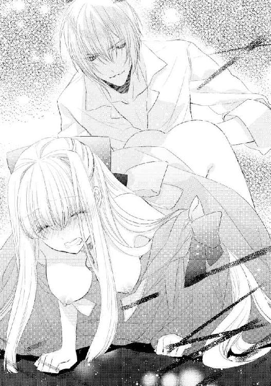

| 離宮の花嫁 ―身代わり姫は琥珀の王子に囚われて―【SS付】【イラスト付】 (ロイヤルキス文庫) | |
| 立花実咲 | |
| (2014) | |
この物語はフィクションであり、実在の人物・団体・事件等とは、いっさい関係ありません。
イラスト・旭炬
プロローグ
山の雪解けとともに牧草が鬱蒼と生い茂るようになり、野原が花でいっぱいになる春──。
山脈の連なる寒冷の地に位置し、壮大な高原と美しい湖に囲まれている風光明媚で長閑な国、サンロレーヌ王国の領地内では、八歳になったばかりの第二王女クリスティナ・ローゼングレーンを乗せた馬が、花々の咲き誇りはじめた高原をのんびりと闊歩していた。
さっきまでクリスティナの傍には護衛騎士が一緒にいたのだが、少しの間自由を許され、鬱蒼とする森の小道を駆けてきたのだった。
クリスティナを乗せた馬はラベンダー畑の中へと入っていく。視線を遠くに移すと、まるで高原の上に絨緞を敷かれているかのような景色が広がっていた。
薄紫色の花々が風に揺れて、いい香りが漂ってくる。森の先に進めば、大きな湖が見えてきて、周りには桜（キルシェ）、杏子（アプリコーゼ）、林檎（アプフェル）の白やピンクの花が咲いているはず。クリスティナは胸を躍らせ、手綱を引いた。
目の前に広がるラベンダーの清廉な香りに癒やされながら、クリスティナは森の湖畔をぐるりと一周した。そして小高い丘に立ち並ぶ桜、杏子、林檎、の木々を眺める。
林檎の木をすぐ傍で見上げられる距離まで近づくと、可憐な白い花が咲いているのを見つけて、クリスティナは頬を赤い果実のように紅潮させて喜んだ。
後ろを振り返れば、薄紫色の花々が揺れて、クリスティナを歓迎しているようにも見える。
馬から下りて、クリスティナは胸いっぱいに空気を吸い込んだ。
花々から心安らぐ香りがする。清々しい風が気持ちいい。
「ねえ、エルゼ、見て、紫水晶みたい。ドレスにたくさん飾ることができたら素敵よね」
クリスティナを乗せた馬の名はエルゼといい、栗色の身体に白い鬣を持つ尾花栗毛という品種の牝馬で、クリスティナが三歳の時から一緒にいる大切な友達だ。
ドレスに薄紫色の花をたくさん縫いつけられたらいいのに、とクリスティナが夢のようなことを想像していると、エルゼが頭絡を震わせるようにして、ぶるんと声をあげた。
「そうよね、エルゼ、あなたもそう思うでしょう？」
クリスティナは亜麻色の長い髪が風に攫われていくのを押さえながら、エルゼに話しかける。
馬は人の話が分かる。落ち込んでいる時も、楽しんでいる時も心の声にも耳を傾けてくれる。エルゼがいてくれると、クリスティナはひとりぼっちでも寂しくならなかった。
突然、森の垣根からガサガサと葉擦れの音が激しく鳴り、クリスティナは驚きのあまり、「きゃあ」と甲高い悲鳴をあげた。すると、対面から「うわぁ」という声が聞こえたので、クリスティナはおそるおそる瞼を開く。
目の前には──少年の姿。頭には葉っぱが一枚のっていて、彼の蜂蜜色の瞳が大きく見開かれ、口までぽかんと開いていた。クリスティナも同じ顔をしていたかもしれない。
「妖精かと思ったわ」
「女神かと思った」
二人は顔を見合わせて、睫毛を瞬かせた。
しばらく唖然として互いの様子を眺め、それから二人同時にぷっと笑った。
どうやら少年はクリスティナの亜麻色の長い髪、青珠色の瞳、彼女が着ている水色のドレスなどを眺めて、泉から現れた女神かと思ったらしい。
クリスティナはというと、少年のことを森の妖精かと思った。濃褐色の髪に蜂蜜色の瞳をした彼は、草原の色に似た翡翠石のマントを羽織っていた。まるでおとぎ話から出てきた男の子みたいだった。
「ほんとう、驚いた」
「私もよ」
まだ心臓がバクバク激しい音を立てている。
クリスティナは胸を押さえながら、高原の空気をすうっと吸い直した。
「私はラベンダーを摘みにきたの。あなたは？」
クリスティナが尋ねると、少年は垣根の向こうを指差した。
「僕は、杏子（アプリコ）と林檎（ポンム）を見にきたんだ。ここの領地では素晴らしい花と果実が豊富になると聞いたから」
クリスティナは杏子と林檎という言葉を、一瞬、聞き取れなかった。でも彼が指し示す方には、杏子（アプリコーゼ）と林檎（アプフェル）の木が白やピンクの可憐な花を咲かせていた。
たしかにここは美しい景色が見えることで有名で、花と果実が豊富になる場所だ。
「もしかして、あなたは異国から来たの？」
少年はうんと頷く。彼の濃褐色の髪がさらりと風に靡く。まるで栗毛の馬のような。この辺りでは珍しい髪色だった。
「君はここの領地の子？」
少年はクリスティナのことを王女だとは思っていないようだ。それも無理はない。一国の王女が一人で無防備に馬に乗ったり、擦り傷をつくっていたり、頬を土埃で汚していたりなど、するはずがないのだから。
「ええ。春になると必ずここに来るの。小さな頃から大好きな場所なのよ。二年前に亡くなったお母様のことを思い出すわ」
清廉な香りを鼻ですぅっと吸いながら、クリスティナは手に握りしめていたラベンダーの花束に目を落とした。
「君も母親がいないんだね。僕と一緒だ」
「あなたも？」
「うん」
少年は頷く。
「でも寂しくない。こいつと一緒だから」
少年はそう言って、手綱を引く。
毛並みの整った黒鹿毛の馬が、ぶひんと鼻を鳴らす。
「粗野なところがたまに瑕なんだけどね」
少年は大人びた口調で、気恥ずかしそうに言った。
どうやら彼が森に突っ込んできたのは、この馬が暴走してしまったのが原因らしい。馬の頭にも牧草がついていて、クリスティナは思わず「まぁ」と口元に手をあて、鈴の音のようにころころと笑う。
二人の和やかな仲を割るように、遠くで誰かの声がした。少年は声の主に心当たりがあるのか、大仰に腕をあげて、ため息をついた。
「もう少しゆっくりしていたかったのに。世話係がうるさいんだ。あっちで呼んでいるみたいだから、また今度ね。あ......、君の名前は？」
「あ、えっと......私、名前を教えられないことになっているの。小さな頃から言われているのよ」
クリスティナがおずおずと答えると、少年は胡乱げに首を傾げる。
「僕が異国から来たから？」
「いいえ。気分を悪くさせてしまったらごめんなさい。誰と会ってもそう言われるの」
クリスティナは申し訳なさそうに答えた。それは本当だった。彼が異国の人だから教えたくないわけではない。
実は、クリスティナには双子の姉がいるのだが、異国間の政争に巻き込まれないよう、妹である自分の存在は隠されていた。この世に双子の妹として生を受けてから、クリスティナが第一王女カトリーナの影として生きていく運命は決まっていたのだ。
クリスティナはこの近くのパドウィル村で暮らしていて、知らない人間にはけして名乗らないようにと命じられていた。
今日は国王の生誕パーティだと、騎士たちが言っていた。王宮ではさぞ賑やかに祝宴が開かれていることだろう。
父や兄や姉の誕生日を祝うことができない寂しい状況でも、クリスティナは仕方ないと我慢した。幼い頃からの教育で、クリスティナは自然と聞き分けのいい子供に育っていったのだった。
そんなクリスティナがささやかな生き甲斐にしているのは、ここでの遊びだった。
「もしも君が誰かに名前を教えたことが知られたらどうなるの？」
事情など知る由もない少年は、好奇心の瞳を向けてくる。
「もう誰とも会わせてもらえなくなるわ。私はたとえるなら、あの雲の影みたいな存在なの」
クリスティナが指を差す方を、彼もつられて見上げる。
青々とした空には、羊のような雲が風に流されていた。太陽がちらちらと姿を現し、そのたびに眩しくてクリスティナは目を細めた。
光、そして、影。
視界に映り込んでくる太陽と雲を眺めながら、クリスティナは続けて説明した。
「あんな風に雲が移動したなら、影の私もそっと寄り添わなくてはならないのよ。そうしてずっと隠れていなくちゃいけないの」
「なんだか寂しいね......」
少年は沈鬱な面持ちでそう言った。
クリスティナもつられて落ち込んでしまった。
「私だって、本当は教えたい。でも、決められていることだから......」
そう、本当は......もっと自由に人と会いたい。もしもこの身体に羽が生えていたなら、どこへでも飛んでいきたい。誰かにこの名を呼ばれたい。たった一つの自分の名前を......クリスティナはそう願った。
でも、呼んでくれるのは世話係の人たちだけ。生まれた時から自分の人生は決まっている。だから仕方ない。そう言い聞かせるしかなかった。
「分かった。じゃあ聞かないよ。また女神に会いたいから」
『女神』と揶揄した言葉に反応して、クリスティナがそろりと顔をあげると、目の前の彼は蜂蜜色の瞳を優しく滲ませ、微笑んでいた。
「また君とここで会える？」
「ええ。もちろん。私もまた妖精さんに会いたいわ」
クリスティナも彼を『妖精』と喩えて、満面の笑みを咲かせた。
誰かと自由におしゃべりをすることなど初めてだったクリスティナは、また少年と会えると思うと楽しみでならなかった。
夕陽が迫る地平線に、馬に乗った少年が消えていく。
クリスティナは次に会える日に胸を躍らせ、遠ざかっていく彼の背に大きく手を振った。
それから二人は、ここで自然と逢瀬を重ねるようになった。
二人が乗ってきた馬同士は、仲睦まじく鼻先や頬を擦り合わせている。何回かそうしているうちにすっかり馴染んだようだった。クリスティナは少年と顔を見合わせ、愉しげに笑った。
「エルゼも、ジェレミーに会いたかったみたい」
「そうだね」
ジェレミーは少年の乗っていた黒鹿毛の牡馬だ。鬣も肌の色とお揃いの艶やかな黒毛で、可憐なエルゼに比べると立派な体格をしている。二頭が並んでいると品種こそ違っても、まるで恋人同士のようにお似合いだった。
馬の名前をそうして教え合っていたのに、互いの名前は約束通り教え合わなかった。それでも二人は満足だった。
毎日会えたわけではないし、文通をしたわけでもないけれど、会いたいと思う日には、この場所で自然と会うことができた。花を摘んだり、湖に素足を浸したり、果実の香りを感じたり、手を繋いで森の中を散歩したりした。
彼の世話係や、クリスティナの兄や護衛の者が、割って入ってこれない束の間の自由なひと時。それはクリスティナにとって、帰るのが惜しくなってしまうほど楽しい時間だった。
だから、さよならと手を振る時は、いつも夕陽が目に染みて、涙が滲んでしまう。あと少しで離れなくてはならないという空気を感じると、クリスティナは俯きがちになってしまうのだった。
「将来、もっと大きくなったら、君と結婚したい」
ある日の帰り際、少年が突然そう言い出した。なんだか彼の顔がほんのり赤くなっていた。
「私と？」
俯きがちだったクリスティナは弾かれたように顔をあげた。彼女の頬も、彼にも夕陽にも杏子にも林檎にも負けないくらいに真っ赤に染まっていた。
「うん。君と。だから、いつか迎えにくるまで待っていてくれる？」
そう言って少年が、ラベンダーで作った首飾りをクリスティナの頭から通してくれた。
ふわりと清廉な香りが鼻腔をくすぐる。不器用に編まれた首飾りに、胸がきゅんと弾ける。
「ほんとうに迎えにきてくれる？」
「うん。お互いが大人になって、結婚できる年になったらね」
少年は蜂蜜色の瞳を優しく滲ませた。けれど、すぐに彼の表情は曇ってしまう。
「もしかしたら、次に来るのが最後になるかもしれないんだ」
「え......どうして？」
クリスティナは一瞬にして表情を強張らせた。
「事情があって、もうここには来てはいけないって言われたんだ」
「そんな......」
二人の間に沈黙が訪れる。
クリスティナはショックのあまり、理由さえ聞けなかった。
もうここには来られない。彼は妖精のように消えていってしまう──。
だから「結婚したい」などと夢物語を話してみせたのだ、とクリスティナは悟った。嬉しかった気持ちがあっという間に沈んでしまった。
「もう会えなくなるなんて寂しいわ......」
少年は、俯いてしまったクリスティナの亜麻色の髪をそっと撫でて、毛先に口づけをした。
誰にもそうされたことがなかったので、クリスティナはドキドキして彼を見上げた。初めて彼を異性として意識した瞬間だった。
「......だから、いつもは日にちも時間も気にしなかったけど、今日はちゃんと約束していきたいんだ。七日後のお昼に、あの木のところで待ち合わせをしよう」
彼が指差す方を見て、クリスティナは頷いた。
「分かったわ。絶対に約束よ」
クリスティナはラベンダーの首飾りをくれた御礼に、彼の頭に冠をのせてあげることにした。
「ラベンダーの花言葉、知ってる？」
クリスティナはううんと首を振る。
「それじゃあ、次に会った時に、答え合わせしよう」
「分かったわ。楽しみにしてる」
二人は必ずそうして次の謎かけを交わしてきた。
この日も「約束」と繰り返して、彼はクリスティナの額にそっと唇を寄せた。
胸にほんのり甘い心地が広がる。砂糖菓子をいっぱいに頬張った時よりもずっと幸せな気持ちだった。
ずっとずっと一緒にいられたらいいのに。
クリスティナは少年が草原の向こうに帰っていくのを見送りながら、早く七日後になればいいのにと切に願うのだった。
ところが、約束の日──。
兄のフェリクスがクリスティナを訪ねてきて「これからおまえを王宮に連れて帰る」と言われ、クリスティナは動揺した。今まさに村から約束の場所へ出かけようとしていたところだった。
「今までパドウィル村におまえを預けていたが、父上に何かあれば、私が世継ぎとしてやらねばならないことがある。様子を見に来ることも難しくなるだろう。だからおまえには王宮で暮らしてもらうことになった。詳しくは王宮に戻ってから話そう」
兄フェリクスは世継ぎの君、王太子である。
どうやら病を患っていた国王の具合がよくないらしく、緊急を要するようだった。
フェリクスはこれ以上クリスティナを混乱させないように、優しく励ました。
「父上については今すぐ命に関わる病ではないそうだ。きっと、おまえの顔を見れば、父上も安心するだろう。とにかく今は早急にここを出立せねばならないよ」
それを聞いて、クリスティナはいくらかホッとする。けれど、あの少年のことが気がかりでならなかった。
「お兄様、その前に一つだけお願いがあるの。どうしても行きたい場所があるのよ」
王宮で暮らすことになるということは、本当にもう会えなくなってしまうということだ。クリスティナが隠されている状況に変わりがないなら、王宮からは出られなくなるかもしれない。
「心配しないでいい。また折を見て私が連れていってあげるよ」
「でも、どうしても今じゃないとダメなのよ。私、お友達と約束したの。きっと待っていると思うわ」
こんな時に何を言い出すのだと、フェリクスは困惑していた。
だが、必死にクリスティナが頼めば、彼も駄目だとは言わなかった。影のように生きてきたクリスティナが、自己主張をするのは珍しいからだ。
クリスティナはフェリクスと共に護衛騎士を従えてパドウィル村を出立し、遠回りになるが、クリスティナが望んだ場所に向かってからサンロレーヌを目指すことにした。
クリスティナは下馬したあと、ラベンダー畑を通り、杏子（アプリコーゼ）の森の中で待っていた。けれど、いつまで経っても彼の姿は見えなかった。そのうち黒い雲が空を覆い、雨がざぁっと降ってきて、亜麻色の髪を濡らしていく。
「あ、待って、私......」
あの木のところで──彼が指差していた方向はどっちだっただろう？
間違えたのかもしれない、とクリスティナは記憶を辿る。
林檎（アプフェル）と言っていたような気がする。
（そうよ。彼は私の国の言葉に合わせてくれたんだわ）
もしくはいつもの別れの時の謎かけだったのかもしれない。
「お兄様、私、向こうへ行くわ」
「クリスティナ、向こうって、どこへ？」
「林檎（ポンム）のところに行かなくちゃ」
クリスティナは彼の国の言葉を反芻する。
けれど、林檎の木の下に移動しても彼の姿は見えなかった。
クリスティナは辺りを隈なく見渡した。どこにもいない......すれ違ってしまったのだろうか。
「クリスティナ。この空を見て来るのをやめたのかもしれない。この悪天候では私たちも道に迷う。そろそろ急がなくてはならないよ」
見かねたフェリクスがクリスティナの肩を抱く。
フェリクスの言う通り、たしかに雨風が強まっている。馬ごと飛ばされかねない勢いだ。クリスティナは後ろ髪を引かれる想いでその場を離れた。
約束──そう誓ったのに。
少年の笑顔を思い出し、クリスティナは涙が溢れてくるのを止められなかった。
「......クリスティナ、父上ならば大丈夫だ。命に関わることではないから」
フェリクスはどうやらクリスティナが父を心配して泣いているのだと誤解している様子だった。
もちろん父のことは心配だけれど、クリスティナは少年と約束を守れなかったことを悔やんでいたのだ。
せめて、最後に名前を知りたかった。今日彼に会えたら、彼には特別に勇気を出して名前を教えようと思っていたのに。
こんなことなら、もっと早くに教えていたらよかった。
約束を守れなくてごめんなさい。どうかジェレミーと一緒に仲良く元気で──。
もしもいつか会えたら──そんな淡い想いが、この日からずっと胸に灯っていた。
第一章 身代わりの結婚
『ほんとうに迎えにきてくれる？』
『うん。お互いが大人になって、結婚できる年になったらね』
八年前の初恋──。
林檎の果実を頬張ったような甘酸っぱさが、クリスティナの胸に広がっていく。
十六歳を迎えたクリスティナは、王宮近くの離宮の庭で、八年前に少年と出逢った時のことを思い出していた。
この庭にもラベンダーが優しく薄紫の花をつけて、風にふわりと揺れている。優しい香りが鼻腔をくすぐり、郷愁の想いを抱かせる。
左右均等に美しく整備された庭の中心には、白い女神の石像が建立され、その周りを囲む泉水が空に広がる雲をまるで鏡のように映していた。
クリスティナは泉水に近づいて中を覗き込んだ。すると、まだ頑是ない彼女の顔がゆらりと水面に浮かんだ。
結ばずに垂らされた亜麻色の髪には金糸や銀糸を絡めた紋織物のリボンがついており、青珠色のような碧い瞳、華奢な鼻梁、小さめの唇が、もの寂しげに映る。身体を起こすと、ほっそりとした全身までが水面に揺れて見えた。
クリスティナの着ている襟の開いた水色のドレスは、肘の辺りまで飾り裾がつき、スカートは腰から裾まで絹モスリンがふんわりと控えめに広がり、精緻な刺繍や真珠があしらわれている。
外はまだ春先で肌寒いので、ドレスの上には背中から胸元まで覆えるローブを羽織り、宝石の留め具が胸の辺りで押さえてある。
クリスティナは湖に似た水色や青色のドレスがとても好きだった。この姿でいれば、またあの少年と会えるような気がしたからだ。
クリスティナが感傷的になってしまったのは、双子の姉、カトリーナの結婚が決まったからだった。
先日、フォルティス王国の第一王子アレクシス・グランフェルトから、姉のカトリーナに結婚の申し込みがあった。事実上、戦争を避けるための政略結婚だ。
サンロレーヌ王国が位置するディアルクス大陸は、北に雪の連峰、中央に壮大な高原、南に紺碧の海と、様々な自然に恵まれているが、各地の至るところで戦争の名残がある。
約半世紀前、三十年間続いた宗教戦争に終止符が打たれた際、それをきっかけに一つの帝国は崩れ、大きく二つの大国と諸国に分断された。
北東に軍事国家シュベルトン帝国、西南に絶対王制のフォルティス王国、二つの大国の狭間に中立しているサンロレーヌ王国と各小国の連合で成り立っている。
サンロレーヌ王国は平和な国として小国と同盟を結び、ゆるやかに発展してきたのだが、フォルティス王国とシュベルトン帝国の不仲により、再びディアルクス大陸に暗雲が立ち込めていた。
御前会議に出席したフェリクスから聞いた話によると、両国間の政争により、サンロレーヌ王国をはじめ、独立した国々を再び手中におさめようとする不穏な動きがあるという。
大国と戦争となれば、サンロレーヌに勝ち目はない。サンロレーヌの滅亡を防ぐ為にも、政略結婚を了承することは、王女として生まれたからには当然の選択だった。
それでも幸い、カトリーナはこの結婚に乗り気だという。結婚相手のフォルティス王国第一王子は、絶世の貴公子と呼ばれている人物で、彼女は王子を夢中にさせてみせる、と意気揚々としている様子だった。
王宮では、輿入れに備えて臣下たちが皆忙しくしているようだ。つい先日は婚約をお披露目する舞踏会があったし、仕立て職人とお針子に囲まれて花嫁衣裳の仮縫いをされたということをカトリーナから聞いている クリスティナはというと、彼女は舞踏会には参加せず、いつものように離宮暮らしをしており、私室に籠りっきりになっていた。
（お姉様が結婚してしまう、ということは......私はこれからどうなってしまうのかしら）
パドウィル村から王宮に戻った際に、クリスティナは引き続き人の目に触れないよう、離宮暮らしを命じられた。万が一カトリーナの身に何かあった時のことを考え、予備品のように王女教育を受けながら。
光と影、その影の役割を果たしてきたクリスティナ。光がなければ影もなくなる。自分の存在は必要なくなるわけだ。そんなことを考えたら、急に不安で怖くなったのだ。
輿入れが三日後に迫った夜。
クリスティナは早めに寝支度を済ませて部屋で読書をしていた。するとカトリーナが、突然離宮を訪ねてきた。
「クリスティナ、お願いがあるの。結婚式のことで......実は大変な問題が起きてしまって」
カトリーナが、彼女の着ているピンクのドレスとは正反対の青ざめた顔をして、その先を口籠る。なんだか切羽詰まっている様子だった。
「いいわ。中にお入りになって」
クリスティナは読みかけの本をライティングデスクに置いて、カトリーナを招き入れた。それから二人はソファに隣同士腰かけた。
カトリーナが彼女の傍にあった唐草模様が描かれたクッションを抱きしめ、ふうとため息をつく。
「お姉様、一体どうなさったの？」
いくらカトリーナが乗り気であるとはいえ、結婚前に女性は不安定になるものだというし、異国に嫁ぐのだから悩むのは当然だ。できるだけ話を聞いてあげようとクリスティナは思う。
「聞いてくれる？ 実はね......」
カトリーナは訥々と説明しはじめた。
「フォルティス王国から書簡が届いて......花嫁たるもの純潔でなくては赦さない、と記されていたらしいの。お父様が念の為確認するが、おまえは大丈夫だろう......って聞かれて、それで私、思わずお父様の前で誓ってしまったのよ。でも、どうしよう。きっとすぐに嘘だって分かってしまうわ」
わっと、カトリーナが両手で顔を覆い、泣き崩れる。
「そんな......」
クリスティナはそれを聞いて狼狽えた。
花嫁が純潔であるべきという道理は分かるが、わざわざ書簡をよこすなど、結婚相手に対して無礼なことではないのだろうか。そうまでして辱められるほど、人質のような政略結婚なのだろうか。
クリスティナは見えない相手に憤りを感じながらも、どうしてあげたらいいものか困惑した。
書簡にある通りに従わなければならないとすると、カトリーナの場合は条件を満たせない。
カトリーナは王族に次ぐ権力を持つと囁かれるボルドール公爵と密な関係を持っていた。それはクリスティナも知っていた。
ボルドール公爵は、女癖の悪さから異名があり、放蕩貴族と呼ばれている。だからあまり結婚相手として勧められた人物ではないのだが、カトリーナが彼に夢中になってしまい、まもなく深い仲になったのだった。
王女相手というのにも関わらず、ボルドール公爵にとって一夜限りのことだったらしく、カトリーナから愚痴をたくさん聞いた夜もあった。そんな彼女も社交的で妖艶な色気を持ち、ボルドール公爵以外にもたくさんの男性とのロマンスが囁かれている。
クリスティナとカトリーナは一卵性双生児でそっくりの二人なのに、それぞれ雰囲気が異なるのは、性格が正反対のせいかもしれない。もっとも、双子の妹として生を受けたクリスティナは、無断で公に姿を現せないことになっているので誰とも出逢えないのだけど、カトリーナにおいては、この情熱的な性格は一体誰に似たものだろう、と兄が本気で心配するほどだった。
しかし聡い彼女は、公に愛に酔いしれるような姿を見せることはなかった。人目を忍んで宴の夜に逢瀬を交わしていた。その舞台裏にはクリスティナの存在が欠かせなかった。
これまでいくつ宴の夜に、彼女の身代わりを頼まれたことだろう。昔からカトリーナに頼まれると、クリスティナは断ることができなかった。その代わり、どんな風に恋をしているのか、彼女からはその話を聞かせてもらうことを約束した。
まるでロマンチックなおとぎ話を聞かせてもらっているようで、たとえ誰かと恋をすることができなくても、クリスティナはそれで満足だった。時には初恋の少年との未来を当てはめて、頭の中で想像して楽しんだものだ。
二人は今までそうして光と影の存在を守ってきたのだ。
「......このままでは、クリスティナがお嫁に行かなくてはならなくなるわ」
カトリーナが涙声でぼそりと呟く。
クリスティナはそれを聞いて驚き、青珠石色の瞳を大きくした。
「私が？」
頓狂な声をあげるクリスティナに、カトリーナは憮然として答える。
「そうよ。私がダメなら、あなたが行くしかないじゃない。これは国同士の政略結婚なんだもの。もしもこの国が断れば、翌日には侵略されてしまうかもしれない。今日の友は明日の敵なのよ」
クリスティナは当惑した。
元々この国は、昔から政略結婚を繰り返してきた。カトリーナはそのつもりで今回の結婚を受け入れるつもりだったのだし、クリスティナもいずれはこの身を密かに明かされ、決められた人の元へ嫁がされるのだろうと覚悟をしていた。
けれど、それはもっとずっと先のことだと思っていた。
「そうでしょう。ショックよね。クリスティナだって嫌でしょう？ 初恋の人が忘れられないって、いつだったか教えてくれたことあったものね」
動揺しているクリスティナをよそに、カトリーナは話を進める。
「だからね......私、考えたのよ。結婚の代わりが嫌なら、初夜だけ代わりを務めてもらえないかしら、と思って」
「え......？」
とんでもないことを、さも簡単のように言い出すカトリーナに、クリスティナは仰天する。
「まさか......これまでのように身代わりをするということ？ お姉様、そんなの無理よ。初夜だけなんて......そんなことできるはずがないわ」
「だって、あなたはいつだって私の影だったじゃない。あなたが結婚して光になることなんて、ありえないのよ」
気にしていることを言われてしまい、クリスティナの胸に穴があく。だけど、光に代わって影が『留守番』を頼まれるのとは訳が違う。
「でも......だめよ。そんなことできないわ」
クリスティナは必死に首を横に振った。姉の夫となる人に純潔を捧げるなんて、考えられない。
「あなたしかできないことなのよ。だからこうして頼んでいるんじゃない」
頑としてカトリーナは引かなかった。そればかりか、彼女は疑いの目を向けてきた。
「まさか、アレクシス様と結婚したいなんて思っているんじゃないでしょうね？ だから、驚いたふりをして結婚をよこどりしようっていう考え？」
そんな風に彼女に思われるのが哀しくて、クリスティナは必死に訂正した。
「そんなこと思っていないわ。アレクシス様にお会いしたことなんてないもの」
絶世の貴公子と呼ばれる彼のことを、舞踏会の夜に一目見てみたいという欲求に駆られたことはあった。それが叶わないことなどクリスティナ自身が一番よく分かっている。
「だったら、クリスティナ、怖がらないで聞いてちょうだい。あなただったらきっと大丈夫よ。これまでだって誰ひとり気づかなかったじゃない。あのね、私、考えたのよ。床入りを済ませたら初めて夫婦になったと認められるの。その証に花嫁には祖国に一時帰国する機会が与えられるのよ。無事に嫁いだということを報告する為にね。その時に入れ替わればいいじゃない？」
「そんな簡単にできないわ......。私が王宮内でお姉様の代わりに留守番をするのではなくて、向こうへ行かなくてはならないのでしょう？ 相手を騙すことになるのよ？ これまでとは違うわ。何かあったらどうしたらいいの？」
カトリーナがしっと唇の前で指を立てる。クリスティナの混乱した声が大きくなってしまっていたようだ。
「クリスティナ。さっき説明したとおり、これは国同士の政略結婚に違いないわ。でも、アレクシス様はどうしても結婚したいっていうぐらい私に熱をあげてるようなのよ。だから、床入りの時だってきっと配慮してくれるわ。大丈夫だから安心して。あくまで儀式的なものですもの。これ以上は無理だと願えば、きっと許してくださるわ。それでどうにか一晩やり過ごすのよ。とにかく夫の傍で朝を迎えればいいの。そうしたら純潔は確認したものと同じでしょう。無事に朝を迎えることができたなら、国に帰ってこれる。そのチャンスを待つのよ」
カトリーナが物凄い剣幕で言い切り、動揺するクリスティナの両手を握りしめた。
「でも......」
「クリスティナ、そうすれば、あなたの純潔だって守られるわ。怖がることなんて何もないのよ」
カトリーナは血眼になり、必死に縋りついた。
そんな簡単にうまくいくだろうか。もしうまくいかずに純潔を捧げなくてはならなくなってしまったら......。そればかりか失敗すれば偽称罪に問われて斬首刑を言い渡されるかもしれない。そんなことを想像して、クリスティナはゾッとする。
カトリーナは尚も食い下がった。
「私だって、こんな途方もないことを頼むのは心苦しいわ。これまでのことが自業自得だって、反省しているのよ。今は本当にあの方と結婚したいって思っているの。それに、もしも私が純潔ではないと知られたら、病に伏しているお父様だって哀しまれるわ。ショックで死んでしまうかもしれない。だから......これは最後のお願い」
カトリーナが涙を滲ませる。こうして泣かれてしまうとクリスティナは弱ってしまう。父が死ぬかもしれないなんて考えたくない。
それに最後......確かにそうだ。カトリーナが嫁げば、彼女がこの国に戻ってくることはない。もう二人は顔を合わせることがなくなるのだ。
カトリーナが純潔でないことを理由に断るしかなくなれば、国を守る為に、クリスティナが行かなくてはならなくなるだろう。結局は王子に身を捧げなくてはならない立場になってしまう。身代わりがうまくいけば、国にとっても、誰にとっても、万事安泰──。
カトリーナにせがまれている間、だんだんとクリスティナの考えは傾いていった。
「そうすれば......この国は平和でいられるのよね。あの林檎の木も、杏子の木も......」
「やだ、クリスティナったら、本当に食いしんぼうなのね。こんな時に林檎や杏子の木を気にしているなんて。心配しなくたって、料理人がまたタルトを作ってくれるわ」
カトリーナが涙を指で拭い、可笑しいわと、口元に手をあてがう。彼女はこの間の舞踏会で振る舞われたタルトのことを言っているのだろう。
その日クリスティナはどうしても舞踏会の様子が知りたくてこっそり変装して様子を見に来たのだが、カトリーナの結婚相手というアレクシス王子のことを見ることができずに、ばれるのが怖くてすぐ戻った。
年頃の少女が舞踏会を気にかけるのは当然のことだと憐れんだ使用人が、ひとりぼっちで食事をしていたクリスティナの為にわざわざ離宮まで届けてくれたのだ。菓子職人の作った林檎と杏子ジャムを絡めたタルトはたしかに絶品だった。
だけど、クリスティナが考えているのはそのことではない。
「私にとって、とても大切な場所なの」
クリスティナは胸がきゅっと懐かしく痛むのを感じた。
そう。とても大切な場所。大事な思い出のある場所。戦争で朽ちてしまうなんて考えたくない。
あの木があればいつかまた会える。それが籠城生活をしているクリスティナの唯一の生き甲斐だったのだから。
「もちろんよ。必ず約束を守ると言ってくださったもの」
カトリーナはクリスティナの両手を握りしめる。
約束......八年前に叶わなかった分、せめてあの場所だけは残っていてほしい。
どれほど逡巡していたことだろう。
クリスティナの瞳に決意の色が灯る。
「──分かったわ」
クリスティナが決断した瞬間、カトリーナは妹への抱擁と頬へのキスを繰り返した。
「ありがとう。クリスティナ、大好きよ」
カトリーナとのやり取りは、何度となく交わしてきた光景だった。いつだって何かがあれば頼りにされてきた。
ある日もカトリーナが彼女付きの侍従たちに、
『あの子は私の言いなりよ。大丈夫、きっとうまくいくわ』
と、笑っているところをクリスティナは見てしまった。
カトリーナは気づいていないと思っているだろうけれど、幼い頃から人の機微に敏感だったクリスティナは、自分が妹として心から愛されているわけではないことぐらい、もうずっと前から分かっていた。
都合のいい複製お人形──。
面倒なことは何でもクリスティナに押しつければいい。どうせ影の存在なのだから。そんな風に考えられていることも。
でも、クリスティナは、そんなカトリーナの表裏のある態度に対して、彼女を憎いと思ったことは一度もなかった。彼女を取り囲む侍従にどう思われても構わなかった。むしろ誰かに必要とされることを望んでいたのはクリスティナの方だった。
何か頼まれれば、その時だけはただの影ではなく、自分の存在価値を確かめられる気がしたからだ。
私は生きている。ちゃんと存在している。そんな風に感じたかった。
でも今回引き受けたのは、カトリーナの為ではなかった。
祖国を守る為、そして何より自分の為だった。
あの思い出の場所を守りたい。
（今、どんな風に過ごしているの？ もう一度でいいから、会いたい......）
クリスティナは胸に灯る淡い初恋を思い出し、心の中であの少年に問いかけるのだった。
◇◇◇ ◇◇◇ ◇◇◇
翌日、クリスティナは王宮から外に出て久しぶりにラベンダー畑に花を摘みにきていた。初恋の少年のことを思い出したら無性に恋しくなってしまい、居ても立ってもいられなくなったのだ。
王宮内が輿入れの準備で忙しいところ、自分の我儘で護衛を頼むのは気が引けたが、勝手に飛び出していけるような年齢でもない。
兄フェリクスに許可をもらいに行き、護衛を二人従えて遠乗りすることになった。
途中クリスティナは、パドウィル村の村長に挨拶を済ませ、山の麓にある教会のミサに参加した。それから教会の敷地内にある孤児を養う施設に顔を出した。
「あ、お姫様だ！」
「わぁ、綺麗なドレス」
クリスティナの突然の来訪に、まるで花々のように笑顔を咲かせる子どもたち。クリスティナは子どもたちに手作りのタペストリーをプレゼントした。
「わぁ、すてきね。お姫様が作ってくださったの？」
「ぼくにもさわらせてー」
すると建物の奥から黒い修道服を着た女性がやってくる。
「まぁまぁ、素敵な贈り物をありがとうございます」
褒められるほど上手ではないので、クリスティナは気恥ずかしくなり、肩を竦めた。
「上手じゃないかもしれないけど......やっと出来上がったから。このサンロレーヌ伝統の縫物は見る人を元気にしてくれると思うから。私も大好きなの」
離宮暮らしをしているクリスティナには時間だけが有り余っている。寂しい時間を過ごす為に何かないかと考えた時、傍についている侍女が憐れんで提案してくれたものだった。
「とんでもありません。とてもお上手でいらっしゃいます。おかげさまで、子どもたちがとっても喜んでおりますよ」
修道女が言うように、子どもたちはタペストリーを宝の地図のように広げて楽しそうにお喋りしている。それを見たクリスティナは胸が温かくなる想いだった。
「もう間もなく、カトリーナ様が、ご結婚なさるとか」
パドウィル村から時々顔を出していたのだが、修道女は外で唯一クリスティナのことを知っている人物だ。
「どうかクリスティナ様にも、ご多幸が訪れますように。光があらんことを」
「ありがとう。シスター」
クリスティナは修道女の心遣いが素直に嬉しかった。
それからしばしの時間、子どもたちの無邪気な笑い声に癒やされてから、クリスティナは林檎の木の丘に向かった。
鐙を蹴ると、馬は壮大な草原を駆け抜けた。陽の光を浴びながら、心地よい風の音を聞き、湖の煌めきを横目に、鬱蒼と緑が生い茂る森を目指した。
騎兵が二人、クリスティナのあとを追ってくるが、森に馬を停めたら、その先は自由だ。それが幼い頃からの約束ごとだった。いつも隠されているクリスティナにせめて、外に出たときくらいは、希望を聞いてもらえることになっていた。
森を抜けて林檎の木の丘の上に行くと、誰かが木の下で寝転んでいた。一目散に駆けていこうとしたクリスティナの足が竦む。
何か様子がおかしい。うつ伏せのままピクリともしない。昼寝をしているという雰囲気ではない。まさか倒れているのだろうか。
クリスティナは遠目に不安を抱きながら、そのままにしておくのも気になって、そっと近づいた。
倒れていたのは金髪の青年だった。彼の頬は土埃で汚れ、浅く息を吐いている。立派な乗馬服を着ているところを見ると、馬に乗ってきたのだろうと察せられる。すると背面からぶるんと馬の鳴き声がして、クリスティナはハッとして振り返った。少し離れたところに悠然と土を蹴る馬の姿があった。馬はどこかに繋がれる前に、興奮してしまったようだった。
「ねえ、あなた、しっかりして」
もしかして馬が暴れでもして、落馬してしまったのだろうか。
青年の脇腹からポタリ、と赤い滴が流れるのを見て、クリスティナは驚く。
「大変、怪我をしてるわ。しっかり、目を開けて......」
クリスティナは必死に声をかけた。傷口が開いたら大変だから、下手に揺さぶることはできない。
青年はうっと呻いて、譫言のようなものを口走る。
「......とんだ馬だよ。そんなに......拗ねることか......」
青年の口ぶりからすると、やはり馬と何かあったらしい。
「落馬したのね？ どこか打ったところは？ お医者様に診てもらわないと」
「触らないで......いい。深手を負ったわけじゃないんだ。あなたを......穢してしまうだろう」
青年は伏し目がちにクリスティナの方を目に入れ、手を振り払った。心配してほしくないというよりも、余計なことをするなと言いたげに気が立っているようだった。
それでもクリスティナにしてみれば、苦しそうな彼をこのまま放っておけるわけがなかった。
「でも、このままじゃ......待って......この近くに教会があるわ。今、人を呼んでくるから」
クリスティナは青年に声かけをし、息を切らして森を突き抜けて行った。
「クリスティナ様、どうなさいましたか」
湖畔で休んでいた衛兵が何事かと飛んでくる。
「お願い。人が倒れているの。力を貸してもらえる？」
クリスティナが息を切らして急いで元の場所に戻ると、そこにいたはずの青年の姿はなく、夥しい血痕だけが残されていた。
「消えた......いないわ。どこへ......」
「これは......」
衛兵が訝しんで、慎重に辺りを見渡す。
クリスティナが青年の姿を探そうとすると、衛兵に止められた。
「クリスティナ様、むやみに追っては危険です。山賊かもしれません」
「そんな感じではなかったわ。きっとどこかの貴族の方だと思うの。上質の乗馬服を着ていたもの」
幻、ではない。
青年は馬に乗り、この場を去ったのだ。
「では、どのような顔をされていたか、覚えておいでですか？ このところ間諜がうろついているとの噂が立っております。王太子殿にも報告しなければなりません」
「ごめんなさい。はっきりと覚えていないわ」
クリスティナは首を振る。
青年の怪我の具合を確かめるのに必死だったから、彼の顔をよく見ていなかった。
髪は金色で、細められた瞳の色もそれに似ていた。どこの誰かは分からない。
けれど......きっと悪い人ではないはず。根拠はないけれど、クリスティナはそんな風に思った。
「どうか道中、ご無事で」
クリスティナは修道女を真似て、青年の安全を祈った。
そして林檎の木の丘に別れを告げ、衛兵たちと共に城に戻っていくのだった。
第二章 嘘つきな花嫁
ついに輿入れの儀式がはじまった──。
カトリーナの代わりに豪奢な花嫁衣裳に身を包んだクリスティナは、王家の紋章を飾った箱馬車に揺られながら、外の景色をぼんやりと眺めていた。後方へ視線を移せば、白亜の城が別れを告げるかのように紅い国旗を風に靡かせていた。
今日を迎えるまでの三日間、クリスティナはカトリーナと綿密な計画を立てていた。互いの性格や仕草などをしっかりと入れ替えるように演技した。
父を欺くのは気が引けたが、兄にも勘付かれていない様子だったし、誰も疑う者はいなかった。案外すんなりといったものだから、これならきっとうまくいくはず、といつも以上に確信を与えるものでもあった。
──とはいえ、いざ国を離れてしまうと、不安は尽きない。
頭の上から顔をすっぽりと覆うように純白のヴェールがかけられている為、目の前の景色が霧がかかったように見える。まるでこの景色とはもうお別れだと言われているようにも感じられた。
クリスティナの傍には付添人として兄のフェリクスがついていた。長いこと病を患っている父は事実上、政務から退いており、王太子であるフェリクスが代役を務めることになっている。
この後、フォルティス王国に到着したら、花嫁はすぐに礼拝堂に案内されることになる。そしたらクリスティナは兄に付き添ってもらい、新郎となるアレクシス王子の元へ連れていかれるのだ。
（どうか神様、罪深い私を、お赦しください）
クリスティナは心の中で唱えた。
直前までカトリーナは結婚式を挙げられないことを悔やんでいた。
それも無理はないだろう。贅を尽くしたウエディングドレスはこの日の為に誂えられたもので、陽の光が当たらないところでも、ふんだんにあしらわれた金剛石や真珠がきらきらと美しく輝いている。腰元には精緻な刺繍を施されたリボンが結ばれ、普段着ているドレスよりも長いトレーンは、きっと厳かな礼拝堂に映えることだろう。こんなに美しいドレスに袖を通すのは初めてだ。
クリスティナの耳には真珠のイヤリングが清楚につけられ、首にも揃いのネックレスがかけられている。なめらかなシルクの手袋を填めた指先は、さっきから緊張と不安で震えていた。
──アレクシス・グランフェルト。
絶世の貴公子と呼ばれるほどの美しい王子は、一体どんな男なのだろう。カトリーナは結婚を申し込まれた際に顔を見ているのだろうけれど、クリスティナは一度も会ったことがない。
クリスティナが知っている男性といえば、父と兄、王宮の側近や臣下、離宮で自分の身の回りを世話してくれる人たちぐらいだ。
異性として意識した人は、たったひとりだけ。
『将来、もっと大きくなったら、君と結婚したい』
クリスティナの脳裏に、初恋の少年の顔が浮かんだ。
大きな湖の向こうにはラベンダー畑が広がり、桜、林檎、杏子の木などが見える。ちょうど八年前のこの季節、あの少年と出逢った場所だ。
彼は今頃どうしているだろう。もう少年とは言えない年になっているはずだ。おそらく兄と同じくらいの年齢だろうから、二十歳ぐらいになっているとしたら、妖精のようにあどけなかった少年の面差しから精悍な顔つきに変わっているだろう。きっと声変わりもしているだろうし、彼なら逞しく成長して素敵な男性になっているはずだ。
どこの国にいて、なんていう名前なのだろう。もっとお互いのことを教え合えばよかった。恐れることなく打ち明けてしまえばよかった。そしたら、あの日すれ違ったとしても、いつかは手がかりを得て、再会できたかもしれないのに。
そんな未練がいつまでもクリスティナの胸に灯っていた。
時が経つにつれ、彼の顔を明瞭に思い出せなくなってきている。髪の色、瞳の色、声はどんなだっただろう。少しずつ忘れていってしまう。ずっと覚えていたいのに、色褪せていく記憶が恨めしい。彼もこんな風に誰かともう結婚してしまっただろうか。
クリスティナが煩悶を繰り返している間にも、刻々と時間は迫る。
馬車がフォルティス王国の領に入ると、王城が見えてきた。一目で大国と分かる立派な要塞の尖塔には、青地に鷹の絵が描かれた軍旗が掲げられている。目の前に迫る光景を見て、思い出から一気に現実に引き戻されるようだった。
クリスティナはまだ見ぬ相手に緊張を抱きながら、王宮に到着するのを待った。外では数えきれないほどたくさんの民衆が、輿入れに向かう馬車を見守っている。通りすぎる間、祖国とは違う言葉で歓声を浴びて、クリスティナは罪悪感に苛まれた。
そんな中、兵士たちが整備をしている通路内を、馬車はゆっくりと闊歩していく。
一行は王宮の中に到着し、先にフェリクスが馬車を降りた。騎士隊がずらりと囲い込んでいる中、クリスティナは兄から差し伸べられた手に掴まって地上に降り立った。
このまま礼拝堂へ進んでいく運びらしい。年頃の侍従が長いトレーンが絡んでしまわないように支えてくれていた。
重厚なドアが開かれると、長い身廊の先に祭壇が見えてくる。
その手前に長身の男が見えて、クリスティナは一気に緊張に身を包んだ。
鼓動が、耳のすぐ傍まで聞こえてくるようだった。
クリスティナはフェリクスの腕に掴まり直し、すうと深呼吸する。一歩一歩近づくにつれ、だんだんと彼の姿がはっきり見えてきた。
美しい金髪から覗く、叡智を湛えた双眸、輝石のような琥珀色の瞳、品のある鼻梁、仄かに甘さが漂う唇。
金糸銀糸で刺繍された藍色の盛装は、王族だけしか身に着けることのできないものだ。彼の肩には金の肩章、胸には勲章や略綬がついていて、下には純白のトラウザーズを合わせている。立派な剣身の長いソードを腰下に提げ、尖端の長い漆黒のブーツを履いていた。
彼の気品ある佇まいに目を奪われる。
この人がアレクシス王子──。
クリスティナは近づくにつれて吸い寄せられるように彼を見つめてしまっていた。見惚れてしまって、目の前まで来たことにさえ意識がいかなかった。クリスティナはフェリクスに耳打ちされ、ハッとしてアレクシスの腕をとった。
アレクシスは微笑すらせずにクリスティナを従えて祭壇の方を向いた。
式の最中なのだから当然かもしれないが、さっきまで他人だった二人が一言も会話をすることなく、こうして結婚をしようというのだから不思議でならない。
このあと、何を話したらいいのだろう......。
カトリーナとアレクシスは初対面ではない。舞踏会で会っている。その時の会話の種を彼女から聞いているけれど、ぼろが出てしまわないように気を配らないといけない。
そんなクリスティナの思惑をよそに、司祭による神の導きが行われ、互いに誓約を交わす時がきてしまった。
「カトリーナ、あなたはアレクシス・グランフェルトを夫として愛し、健やかなる時も病める時も、生涯尽くすことを誓いますか」
心の中で神様に懺悔しながら、クリスティナは答えた。
「......誓います」
アレクシスの手に引き寄せられたクリスティナの左薬指には、金剛石の指輪を填められ、彼の手によって、ふわりとヴェールがあげられる。
さらさらの金髪がステンドグラスから零れてくる光の筋に反射して、きらきら眩いほど煌めく。美しい琥珀色の瞳が、ゆっくりと睫毛を伏せて、近づいてくる。
クリスティナは緊張のあまり、アレクシスの顔をうまく見ることができないまま、誓いのキスの瞬間にそっと目を瞑った。
あたたかな感触が唇に伝わる。義務的なキスだけれど、思いがけず優しいものだった。それを感じて、胸に途方もない切なさが迫ってくる。
『──いつか迎えにくるまで待っていてくれる？』
初恋の少年と会えていたなら、こうしてキスをしてくれていただろうか。
クリスティナの眦からはいつの間にか、きらきらと宝石のような涙が零れ落ちていった。
第三章 床入りの儀式
結婚式が終わったあとは、盛大な祝宴が開かれた。厳かな式とは一変して彼方此方が賑やかだった。
大広間では舞踏会が行われており、夕方には晩餐会、外ではパレード、バザールなども行っているらしく、連日にわたって祝宴は続くようだ。
クリスティナはウエディングドレスのまま、アレクシスと共に舞踏会の玉座についた。それから挨拶代わりに国王とワルツを一曲踊り、次には来賓の期待通りに、アレクシスからの誘いを受けた。
豪奢なシャンデリアとダイス模様の大理石が敷きつめられた大広間には、宮廷楽団が見事な腕前でワルツの調べを奏でている。王族はもちろん国内外の貴族が招待されていた。皆、煌びやかな衣装に身を包んでいる。
その中でもやはりアレクシスの存在感は他とは違った。まるで神様が彼だけは特別につくられたのではないかと思うほど、完璧な容姿──。
美しい金髪、凛々しく整った眉、涼しげな目元、誰もが羨む高い鼻梁、引き締まった形の良い唇、頬から首筋にかけての精悍な面差し......彼の全身から、怜悧な気品が漂う。
「我が愛しの妃よ。一曲よろしいですか？」
アレクシスが恭しくそう言い、クリスティナの純白の手袋の上からキスをする。その儀礼的な挨拶は、祝宴に招かれた客たちへの表向きのものだ。
クリスティナも期待に応じるべく、スカートを少し持ち上げてお辞儀をし、なるべくさり気なく彼の手をとった。
「ええ、殿下、喜んで」
二人が会話を交わしたのは、それが初めてだった。
アレクシス王子を改めて間近に見つめて、彼が絶世の貴公子と呼ばれる理由がよく分かった気がした。彼のひとつひとつの仕草に、大広間に集まる淑女から感嘆のため息が零れる。
クリスティナも例外ではなく、吸い込まれるようにアレクシスを見つめていた。彼に手を引かれるたび、女心を惑わすような甘い香りが漂い、くらくらと眩暈さえ覚える。
あまりに緊張してしまった為に足元がふらつき、思わずよろけてしまいそうなところを彼の胸に受け止められ、ドキッとした。
「とてもお上手ですね」
耳の傍で囁かれた彼の低い声は甘さを孕んでいて、官能的な調べを紡ぐようだった。
にこり、と柔らかな笑みを浮かべるアレクシスに、クリスティナはぎこちなくも笑顔を返す。
彼は妃の失敗をさり気なくフォローしてくれたのだ。彼に迷惑をかけたことを恥じて、クリスティナはますます身を硬くした。
実はクリスティナはダンスが得意ではなかった。万が一の為に、淑女の嗜みとして教えられてはいたものの、実際に表舞台に立つ機会は、カトリーナに身代わりを頼まれたほんの少しの時間だけ。
ある日は舞踏会の様子をまぶたの裏に浮かべながらひとりでワルツの練習をしたりした。まだ見ぬ結婚相手、それこそあの少年の成長した姿を想像して──。
それがまさか、アレクシスと踊ることになるなんて。
手を引き寄せられ、背中を力強く抱かれる。
彼と密着するたびに目が合って、クリスティナは困惑した。
さっき受け止めてもらってから、胸がとくとくと早鐘を打っていた。ダンスで身体を動かしたせいではない。アレクシスの持つ雰囲気が、それほど魅力的だからだ。
秀でた額にかかる美しい金髪、吸い込まれそうなほど澄んだ琥珀色の瞳、優雅にワルツのステップを踏むたび濡れたように微笑む表情、彼の仕草ひとつひとつに、胸がときめく。彼はまさに王子となるべくして生まれてきた人なのだろう。
彼から微笑みかけられると、まるで本当に自分だけを見ていてくれているような錯覚に陥ってしまいそうになり、クリスティナはハッと我に返った。
きっと女性は皆こうして彼に堕ちていくのかもしれない。
これは偽りの結婚だ。忘れてはならない。自分には役割がある。やらなければならないこと......それはカトリーナの身代わり。彼はサンロレーヌ王国を手中に収めたい為に、政略結婚を命じてきた相手だ──と言い聞かせる。
勝手に意識してしまっている心臓の音を恨めしく思いながら、クリスティナはワルツの調べが早く終わりますようにと切に願った。
宴も終盤に差しかかり、夜も更けていく頃、クリスティナの元に侍女がやってきた。
案内されたところは閨室だった。
ここはつまり、夫婦の寝室で、床入りを交わすところ。
「お召し替えについては、明朝、お手伝いに参ります」
侍女はそう言い残して退室した。
ぽつん、とひとりぼっちになり、安堵のため息をつくどころか、不安と緊張が綯交ぜになり、一気に押し寄せてくる。
クリスティナの心臓は今にも張り裂けそうなほど鼓動を打っていた。
──いよいよ、この時がきたのだ。
この床入りの儀式さえ終われば、祖国に帰ることができる。
きっと大丈夫。任せているフリをしていればいい。
カトリーナが助言をくれたように隙を見て、どうか慣れないから手加減をしてほしいとお願いできれば......それでいい。
成功を実現させる為に心の中で筋書を並べ、イメージを膨らませながら、クリスティナは自分に何度も言い聞かせた。
しばらく待つと部屋の扉が開かれ、閨室に男の影が忍び寄る。
──アレクシスだ。
クリスティナの鼓動がこれまで以上にドキンと大きく跳ねた。
彼のまとっている芳香に葡萄酒の香りが混ざって仄かに漂ってくる。
「待たせたね」
「い、いえ」
彼は金糸銀糸で刺繍された藍色の盛装のままだった。同じようにクリスティナも花嫁衣裳のままだ。どういった理由があるかは分からないが、侍女曰く、彼がそのままでいるように命じたらしい。
「......ではさっそく、純潔かどうか、確かめさせてもらおうか」
アレクシスは部屋に入ってくるなり、尊大に言い放った。
その様子は、先ほどワルツを踊っていた紳士とは程遠く、愛する妻を迎えようという男の言葉ではないみたいだった。
「あ、あの......」
怖気づいたクリスティナは、アレクシスを見上げて、様子を窺う。
「何か？」
「い、いいえ」
愛を囁いたり、キスを交わしたりするような雰囲気ではない。それどころか、金髪から覗く彼の琥珀色の瞳は、獲物を捕らえんばかりの獰猛な眼差しを送ってくる。
まさか疑われている？ もうバレてしまった？
もしかしたら花嫁衣裳のままというのもそういう意味で？
ゾッと恐怖に見舞われ、クリスティナが肩を震わせていると、アレクシスがおもむろに彼女のドレスを脱がせはじめ、剥き出しになった肩口に優しくキスをした。
「あ、......」
ちゅっと肌を労るように吸われる。その濡れた感覚に、胸がざわつく。先ほどの尊大な様子とは似つかわしくない口づけの仕方に、クリスティナは戸惑った。
それに、今まで額や頬にキスをされたことはあるが、そんな場所にされたのは生まれて初めてだった。
クリスティナはおそるおそるアレクシスを見上げた。獰猛な眼差しは相変わらずだが、クリスティナをベッドに組み伏せる彼の様子は麗容かつ扇情的だった。
彼の生身の重みを直に感じて、クリスティナは頭が真っ白になる。
どうしていたらいいのだろう。男の人の身体がこんなにも大きくて重たいものだなんて。
それに、こんな風にのしかかられていたら、身動きがとれない。
「緊張しないでいい。君に疚しいことがなければ、滞りなく済むはずだ」
なんだか嫌な言い方だった。本当に儀式的なものなのだと蔑まされているような。これでは、まるで物扱いされているみたいだ。
政略結婚、奴隷契約、そんな言葉が、クリスティナの頭の中をぐるりと駆け巡る。
クリスティナが息を押し殺していると、アレクシスの手が彼女のドレスの肩口にかかった。構えているうちに胸元まで脱がされ、前開きのコルセットが露わになってしまう。
「ひゃっ......」
頤を掴まれ、熱い吐息がかかる。それから間もなく唇を重ねられた。
キスぐらいはしてくれるみたいだと思うと、少しだけ安心した。ぎこちなく応じていると、濡れた音を立てて唇を離された。その合間にアレクシスが間近で見つめてくる。
「顔が林檎みたいに真っ赤だ」
アレクシスにそう指摘され、クリスティナの顔はますます熱を帯びていく。
彼の絹糸のような金髪がさらりと頬をくすぐり、髪の色とよく似た瞳がじっと覗き込んでくる。
「君の瞳、青珠石のようだと思っていたけど、こうして見ると......海の色にも見えるね。ずっと前に会った時とは少し違う感じがする。こんなに綺麗だったかな」
愛を囁くというよりも、観察をしているような感じだ。
アレクシスがもう一度ちゅっと音を立ててキスをする。唇の感触を味わうように何度も啄まれる。そのたびに、クリスティナの呼吸は弾むように乱れた。
こんなに長いキスは初めてで、クリスティナは彼に合わせて応じているだけだった。
キスを交わしながら、アレクシスの手が一つ目の釦を解こうと動く。クリスティナは思わず目をぱちりと開けた。もう既に胸の谷間はふっくらと見えてしまっていた。
クリスティナはますます身をぎゅっと硬くした。
（どうしよう。このままでは胸が見えて......でも、我慢しなくちゃ）
男の人の前で素肌を晒した経験などない。父や兄にだって見られたことなどない。世話をするのは皆、乳母や侍女といった女たちだ。
一体どこまで我慢していたらいいものだろう。クリスティナはさっそく不安でたまらなくなってしまった。
あまりに唐突に拒絶してしまえば、不審に思われてしまうだろう。クリスティナには経験がないので、怪しまれるような迂闊な行動はとれなかった。
「教えてあげよう。女の身体には至るところに隠し場所がある。たとえば。この胸の谷間......とかね」
そう言ってアレクシスは、クリスティナのコルセットの三段目まで釦を外していき、白い乳房の谷間に指をぐいっと挿入した。
「きゃっ」
突然の強い感触に、クリスティナは悲鳴をあげて、ぶるりと戦慄く。あと一つ釦を外されてしまったら、薄桃色の頂まで見えてしまうところだ。
慌てて手で隠そうとしたところ、アレクシスは最後まで脱がそうとせず、彼の手は別の場所を弄りはじめた。
「あとは......ここに毒薬を仕込まれて、殺された者もいる」
アレクシスがクリスティナのスカートの裾を捲り上げ、武骨な手のひらを彼女の太腿に這わせた。
まさか乱暴されるのではないかという恐怖でクリスティナは思わず内腿を閉じる。だが強引に膝頭を左右に開かされてしまい、彼女には為す術がなかった。
「しっかりと開いて。純潔の証を見せてもらわなければ」
アレクシスの瞳が、今どこを見ているのかと思うだけで、身体が沸騰しそうなぐらい熱くなり、汗をかいてしまう。
（純潔の証って......見ただけで分かるものなの......？）
なんていう辱めなのだろう。何かをするわけでもなく、じっと彼の視線が注がれている。
全部脱がされるよりも、半端に乱れたままにされている方がよっぽど恥ずかしい光景だった。
ついに居たたまれなくなり、クリスティナは思わず声をあげてしまった。
「お願いです。そんな、じっくり、み、見ないで......ください......」
「花嫁の身体をどうしようと、僕の自由だろう」
アレクシスは横柄にそう言った。
どうして彼はこんなに傲慢なのだろう。内心クリスティナはムッとした。ワルツを踊っていた時は、とても優雅で美しかったのに。人は見た目で判断できないものだ。
「何か不満でも？」
「い、いえ、......ただ、恥ずかしいだけ、です......」
結婚はするけど身体は自分のものだと、言えるものなら言ってやりたかった。けれど今のクリスティナは身代わり。とにかく嘘がばれないように彼に従っていなくてはならない。
スカートの下にはペティコートを重ねて穿いていたが、それを捲られてしまうと、腰布からベルトが通され、絹のガーターストッキングを履いた太腿に吊り下がっているのが丸見えになる。その下には何も身に着けていない状態だった。
アレクシスの手が腰布の先に進もうとする。クリスティナは思わず内腿をぎゅっと閉じてしまった。すると、ちょうど彼の腕を挟んで拒絶をしてしまい、彼の様子が気になったクリスティナは、おそるおそる見上げた。
「どうして拒むのかな？ また恥ずかしいから？ それとも、何か疚しいことでも？」
威圧的なアレクシスの態度に、ビクッと肩が震える。射貫くような強い視線にあてられ、クリスティナの青珠石色の瞳は、ゆらゆらと揺れていた。
「ちが、......います。ただ、......緊張しているだけです」
「そう？ それならいいけど。これは大切な儀式だからね。その昔、王族略取を狙った間諜は、男に慣れた者が多かった。死に至る病気を故意にうつされる可能性だってある。それと、一度孕んだ女には、その男の遺伝子が棲みつくとも言われている。だから、他の男の痕跡がないかどうかなども確かめなければならないんだ」
アレクシスは王家を継ぐものなら然るべきことだという風に涼しい顔で答えた。
たとえ政略結婚とはいえ、どうしても結婚したいとカトリーナに熱をあげていたのであれば、もう少し優しくしてくれるはずだと考えていたことは、どうやら見当違いだったようだ。
愛し合って子を授かった国王と王妃の仲睦まじい様子を知っているクリスティナなだけに、花嫁を道具のように思っているところが哀しかった。
純潔さえ捧げてしまえば、あとは入れ替わるから、とカトリーナは言っていたが、アレクシスの本性を知ったら、どんなに哀しむことだろうか。
「......お願いです、わ、私のことを愛してくださるなら、......どうか優しくしてください」
クリスティナは懊悩の末に居たたまれなくなり、そう口走った。それはカトリーナが考えた作戦のうちでもあった。
クリスティナは身を強張らせたまま、答えを待った。
アレクシスは無表情のままじっと見下ろしてくる。
睨み合いが続いたのち、緊迫した状況は解かれた。
「分かった。善処しよう」
クリスティナがホッと胸を撫で下ろしたのも束の間だった。アレクシスが彼女の頤を掴みあげ、震える唇を奪ったのだ。
「んっ......ぅっ」
話が違う。こんな荒々しいキスを受けるなんて。
クリスティナが驚いて逃げようとすると、彼女の後頭部は彼の手に深く押さえこまれてしまい、身動きができなかった。
「......っふ、っ」
酸素を求めて喘ぐと、口腔にくちゅりと舌が忍び込んできて、濡れた舌先を擦りつけられた。それは最初に受けたキスとは全然違った。
（......な、何、......舌が、入って......）
上顎をくすぐられゾクっと震えが走った。そのまま歯列を確かめるように這わされていき、逃げる舌先をちゅうと搦め捕られてしまう。まるで別の生き物のように蠢くアレクシスの舌戯に翻弄され、クリスティナはされるがまま応じるしかなかった。
（......舌が、......いや、そんな風に......動かさない、で......）
熱い吐息、濡れた音、柔らかい感触──だんだんとクリスティナは何も考えられなくなっていく。唾液さえも飲みこんで、心臓ごと奪われてしまうかと思うほど激しいキスだった。
どれほど長く舌を絡められていたのか分からない。やっと唇を離されて、クリスティナは思いきり空気を吸い込んだ。
「ん、っ......はぁ、......」
「......うん、唇の中には何もないようだね。なかなか柔らかくて心地よかったよ」
アレクシスは満足げにそう言って、艶然と微笑んだ。
そんな風に言わなくてもいいのに、揶揄されたように感じて、クリスティナの頬に熱が走る。
「さて、こっちは？」
今度は胸を鷲掴みされ、背筋の窪みがきゅっと浮き立つ。さらに乳房の頂を指の腹で捏ねられ、臀部がびくんと揺れてしまった。
「あっ......」
クリスティナは潤んだ瞳を逸らすことで精一杯だった。
「この中に忍ばせているようなことはなさそうだね。まずここは合格だ」
次、とアレクシスの指がいやらしく這わされていく。
「やっ......そんな」
（そんなことまで確認されてしまうの？）
クリスティナは驚愕する。この様子だと隅々まで検査されてしまうような感じだ。
カトリーナから言われた通りの筋書きを決行しようとしていたが、どうやらこの男の性格は難がありそうだし、そう簡単にはいかなそうだ。
「ねえ、ここ、薄桃色で綺麗だね。でも、なんだか君の頬みたいに赤くなってきたみたいだ」
胸の尖りをくりくりと弄られると、そこはどんどん隆起して硬くなっていく。アレクシスの言う通りに、薄桃色だったはずの頂はどんどん充血して赤い果実を膨らませていってしまう。
「あ、ぁ、っ......」
「まだ検査しかしていないのに、もう感じているのかい？」
アレクシスに指摘されて、クリスティナは内腿をもぞもぞと閉じ合わせる。
我慢を重ねているうちに、はぁはぁと喘ぐ声は忙しなくなり、身体に熱がどんどん蓄積されていく。
このもどかしい感覚は何なのだろう。自分が自分ではなくなるみたいで怖い。
「い、意地悪、言わないで......」
そこが外気に晒されて硬くなってしまうことぐらいはクリスティナにも分かる。けれど、男に触られて浅ましく勃ってしまうことが恥ずかしかったのだ。
「いいさ。教えてやろう。男は、女のそういう面を見て、ますます欲情するものだよ」
逃れようとするクリスティナの腕は自由を奪われ、胸の尖りにアレクシスの舌が這う。彼は赤子のように乳房の頂に吸いつこうとしていた。
「やっぁ......」
クリスティナは身を捩るが、アレクシスの手は柔肉を揉みあげ、薄桃色の尖りを吸う。その瞬間を見ていられなくなり、クリスティナは目をぎゅっと瞑った。
「あ、.........ぁっ」
濡れた粘膜に包まれる不思議な感触に見舞われ、クリスティナは激しく喘いだ。
何をどうされてしまっているのだろう。やっぱり見えていないのは怖い。おそるおそる瞼を開いてみると、ちゅうっと激しく吸い上げる瞬間が見えて、クリスティナはいやいやと首を横に振った。その間にも舌先で転がされ、硬くしこるまで粒を弄られ、容赦なく責められた。
「そんな、......舐めたら、や......あっ......ぁっ」
芯を吸い出すほど激しく吸われ、クリスティナの腰は浮き立った。そんなにされたら形が変わってしまうのではないかと心配にもなるほど荒々しく舌先で捏ねられ、もどかしさで腰が揺れる。
「すごく美味しいよ、君のここ。媚薬でも仕込んでいるんじゃないだろうね？」
アレクシスが見せつけるかのように舌先で乳首を弾く。男を覚えたての頂は、そうして弄られるたび、下腹部に甘い疼きを与えてくる。
「そんな、わけ、なっ......」
何か熱いものが身体の中心を流れている気がする。その何か、というのが分からないからますます怖い。身を捩ろうとしても、アレクシスの武骨な手が痛いぐらいに揉みあげて頂を苛めてくる。そのたびに臀部から背筋にかけて甘い痺れが走った。
きゅっと尖端を摘まれ、びくんと下腹部が波打つ。彼の舌先は容赦なく輪郭をなぞり、歯を当てたり吸いついたりと、いやらしく乳首を濡らしていった。
「や、......ぁ」
クリスティナの目尻には涙の粒が滴った。そこへアレクシスの指がぐいっと這わされ、彼の舌先に舐めとられる。彼は艶っぽい笑みを浮かべていた。
「泣くほどよかった？ そんなに焦らなくても、儀式のあとにはちゃんと愛してあげるつもりだから、心配しないでいいよ」
当然のように花嫁教育をされていたカトリーナと違って、クリスティナの知識は乏しい。もちろん王女教育として、どのように夫婦が愛し合って、子を授かるものかというのは知っている。だがそれはあくまで机上の知識だ。こんな経緯があるなんて知らない。
「ただ性交するだけでは、確かめられないこともある。それは何か分かるかい？」
知らない、と言えば、無知だと嘲笑われてしまいそうだし、余計なことを言ってしまえば、きっと墓穴を掘ってしまうだろう。
クリスティナはぎゅっと唇を噛んで耐えるほかになかった。
「......いいさ。答えは......僕がこれから教えてあげるよ」
ついには半端に脱がされていたコルセットが引き剥がされ、腰からスカートをずり下ろされる。
「やっ......」
ガーターストッキングで肌を隠している内腿へ、ぬるりと濡れた舌が這う。薄い絹越しに伝う生温かい感触は、とても卑猥だった。
アレクシスの舌はますます大胆にぬるぬると擦りつけはじめる。
「ひゃ、んっ......」
ぶるりとクリスティナの太腿が震えた。それを煽るようにアレクシスの舌が強く押しつけられる。
「......ん、可愛いね。ここを舐めるだけで、いい声を出すんだ。気持ちいい時はそう言っていいんだよ」
「ちが、......」
可愛いだなんて言われても、少しも嬉しくなかった。辱める言葉には違いないのだから。
そのままアレクシスの舌はクリスティナの素肌が見えている付け根のところまで、やわやわと柔肉を押しあげながら進んで行った。
与えられる刺激に我慢できなくなって腰を引こうとすると、胸を揉んでいたアレクシスの手がクリスティナの膝裏を押し上げ、胸につくぐらい折り曲げてしまう。まるで秘所を突き出すような格好で、彼の舌を窪みに誘導してしまっていた。
「あ、......っおねが、......離してっ......」
「そう、こんなに膨れてひくひくして、君はここを舐めてほしいのか、いいよ。ほら......」
アレクシスが濡れそぼった秘所をつるりと指で拭い、わざと見せつけるように蜜液のついた指先を舐めとる。今まさに彼の舌先が秘所に触れようとしていた。
「ちが、ぁ......んっ......」
ふっと熱い吐息がかかり、クリスティナは羞恥心と恐怖で腰を揺らした。だが既に遅かった。花弁を一枚ずつめくるように熱い舌が這わされ、ぴちゃりと淫らな水音が鼓膜に響く。
最初は怖かったはずなのに、今は腰の輪郭さえ溶けてしまうのではと思うほど気持ちよくて、そんな自分が浅ましくて嫌だった。
「やぁっ......やめ、てっ......いやなの、......はずかし、......こわいのっ」
一気に感情が膨れ上がり、クリスティナは亜麻色の髪を振り乱して泣き叫んだ。
すると、短く、ふう......という嘆息。
クリスティナが涙に滲んだ瞳で見上げると、アレクシスは呆れたような顔をしていた。
「だめだよ、ここをしっかり濡らさないと、もっと痛い想いをするよ。これを、君の中に挿れるんだから」
アレクシスに手首を掴まれたと思ったら、手のひらに温かなものを握らされていた。それは、アレクシスの半身にある屹立だった。
「きゃあっ」
「ひどいな。そんな風に拒絶するなんて、傷つくよ」
初めて目で見て触る男性自身に、クリスティナは驚愕した。すでにそこは昂っていて、大きく、太く、硬く張りつめ、脈を打って赤黒くそそり立っている。
（男の人のものって......こんなになるの？）
目の前の禍々しい物体を直視できず、クリスティナは顔を背けた。その拍子に手のひらを離してしまう。すると再び彼の手にぐいと掴み直されてしまった。
ドクドクと心臓のように脈を打っているのが、手のひら越しに伝わってくる。触れているのも怖くなるほど、直情的な物体だ。どう扱っていいのか分からず、クリスティナの手は震えてしまっていた。
「ごめん、なさい、......そんなつもりじゃなくて」
「仕方ないね。今まで見たことないだろう？ 当然触ったこともないよね？」
アレクシスが試すような瞳で見る。カトリーナがどうかは知らないが、クリスティナは素直にこくんと頷いた。とにかく自分は純潔であることを示さなくてはならないのだから。
けれど、それ以前に本気でクリスティナは狼狽していた。どんどんアレクシスの行為がエスカレートしていっている気がして怖かったのだ。
泣きじゃくりそうなクリスティナを前に、アレクシスは仕方ないな、と仕切り直した。
「怖いものなんかじゃない。これで、君を愛するんだから」
アレクシスがクリスティナの手にしっかりと屹立を握らせて上下に扱くような仕草をさせようとする。生々しい感触がありありと伝わり、クリスティナはどこに視線を寄せていたらいいか困った。
愛するという言葉には語弊があるように思えた。こんな凶暴なものを自分の内に受け入れるなど、想像がつかない。
もちろん、そうされないように、どうにか逃げ道を考えなくてはならない。けれど、クリスティナはすっかり腰が引けてしまっていた。
「君のそういう反応を見る限りは、疑わしくないようだけどね。でも演技ということもありえる」
じろり、とアレクシスが侮蔑の目を向けてくる。
どうしてそこまで疑うのだろう。床入りの儀式はそれほどまで慎重に進められるものなのだろうか。無論、騙している身分で言えた口ではないが。
「僕だって理由もなく疑っているわけじゃないよ。妙な噂が流れていたからね、慎重になっているのさ。サンロレーヌ王国の姫君は男に慣れているという話だったから」
それを聞いて、クリスティナの身がぎくりと強張った。
一体どこからそんな噂が流れたのだろう。カトリーナが付き合っていた貴族たちからだろうか。まさかもう既にバレていて、罰を与える為にこんな辱めをしているのだろうか、とも思えてくる。とにかく今のクリスティナには違うと言い張るしかない。
一瞬、真っ白になってしまったクリスティナに、彼は不遜な態度をとる。
「純潔を守っているのなら、まぁ、愛する妻のことだ。多少は大目に見てあげるよ。残りの検査は......この中をしっかりと確認するだけだね」
アレクシスは勝手に話を終わらせようとする。まるで物を扱うかのように雑に言い放つと、クリスティナの秘所にいきり立った屹立の先を突き入れようとした。
クリスティナの顔から一気に血の気が引いた。
「ひ、ぁ......お願いです。これ以上は......」
腰を引き、足をばたつかせるものの、アレクシスの手に捕まえられて、あっという間に脚を開かされてしまう。
「......っぁっ」
膝頭にアレクシスの唇が滑り落ちてくる。彼は挑発めいた上目で見つめてきた。汗のような滴がつるりと秘所から滴り落ちる。それは少しでも身を守ろうとする女の本能かもしれなかった。
「なぜ、拒絶するのかな？ これを済ませなければ、床入りは終わったことにはならないんだ。君だって分かっているだろう？」
クリスティナは必死に膝を閉じて、アレクシスの二の腕を押した。だが頑として彼は動かない。
「だ、だって、あの......」
「何？ 言いたいことがあるのなら、はっきり言ってくれないかな」
「とても痛いのでしょう？」
「あぁ、そうだというね。破瓜の痛みは女でなくては分からないから、説明のしようがないな」
まるで他人事のようにアレクシスが言う。
「そんな......」
ということは、アレクシスも経験がないみたいだ。きっと教育はされてきているのだろうけれど、互いに知らない状態で、どうなってしまうか分からないなんて、それほど怖いものはない。
それ以前に、クリスティナの筋書はもうとっくに破綻してしまっていた。
このままじゃだめだ。破瓜されてしまう......。
なんとしても、この危機を逃れなければ。
「......殿下、お願いです。少しでいいんです。この先を......待っていただけませんか？ 一日、二日、数日でいいんです」
クリスティナは瞳に涙をいっぱい溜めて懇願した。それは演技でも何でもない。とにかく必死だった。
アレクシスは納得いかない様子で、渋面を浮かべる。
「でも、君が拒絶しても、結婚を取り消すつもりはないし、祖国へ帰る日が遅くなるだけだよ。それでもいいのかい？」
祖国へ帰る日が遅くなる。それはだめだ。
けれど、見るからにこの凶暴そうなものを体内に受け入れるだなんて、頷けるわけがなかった。
クリスティナが涙を零してしまいそうになると、腰を掴んでいたアレクシスの手がすっと緩んだ。
「 分かった。それじゃあ、君がしてくれたらいいよ」
「......え？」
「花嫁教育はしっかりされてきたんだろう？」
「あ、あの......」
クリスティナにはアレクシスの意図することが分からなかった。すると彼は深いため息をつく。
「まったく、君って人は......呆れたな。ただの純潔というだけで、夫が喜ぶとでも思ったのかい？」
そう言ってアレクシスが、クリスティナの手に彼の分身を再び握らせた。
「きゃっ」
彼の猛々しい分身は、さっきよりも硬く張りつめている。この未知の生き物は一体どれほどまで大きくなっていってしまうのだろう、と思うと、クリスティナは怖くてたまらなかった。
「ほら、いいかい？ 僕のここを君の手でこうして扱いて、君の唇でキスをして舐めて、さっき僕がしたように、舌を這わせて......果てるまで喜ばせるものだよ」
さっきアレクシスが手を上下に扱かせていた光景が脳内にちらつく。目の前でそそり立っている屹立を見て、それを唇で受け止めたり舌を這わせたりする......などと想像するだけでも恐ろしかった。
「そんな、し、......」
知らない、と言いそうになって、クリスティナは慌てて口元に手をあてがう。
アレクシスが疑い深い眼でじっと見つめていた。
「じゃあ、君に二択をあげよう。僕のここを舐めるか、僕のこれを君の中に挿れさせてくれるか。どちらかだよ」
そう言って、アレクシスが自身の尖端をずりっと秘所の上に滑らせる。ぷっくりと勃ちあがっている花芽にわざと擦りつけるように上下に動かされ、クリスティナの背にぞわっと震えが走った。
「......っだ、だ、め......待って、ください......」
どちらも簡単には選べない。だけど破瓜されてしまうことを考えたら......。
クリスティナが苦渋の末に口を開きかけた時、業を煮やしたのだろう、アレクシスの方から宣告されてしまう。
「期限は......仕方ない。明日の夜まであげるよ。優しい夫に感謝することだね。契りを確かめるために待機している証人の係には体調が優れないとでも言って僕から説明しておいてあげるよ。それまで君は囚われの身だ」
──囚われの身。
クリスティナの顔からさっと血の気が引いた。
けれど、ひとまずは逃れることができた。少し頭を冷やして整理をしよう。どうすればアレクシスを納得させることができるか、考える時間ができたということなのだから。
そう考えていたクリスティナの内腿に突然ぬるりとしたものが滑った。
（え......？）
何か生温かい、それも湿った感触──おそるおそるその場所を見る。
「ひゃっ......」
アレクシスの赤い舌が内腿にゆったりと這わされているところだった。
「やっ......な、何を......なさって、いるの」
驚いてクリスティナが腰を揺らすと、彼は逃すまいと彼女の膝の裏を掴んで腰布を解き、恥骨の膨らみにキスをした。そればかりか鼻先を擦りつけ、布越しに舌を這わせていく。
「ん、やっ......」
ベルトがぱちりと指で弾かれ、ストッキング越しに濡れた舌が這う。その倒錯的な光景と未知の快感に、ぞくりと甘い旋律が走った。
「何って？ 君を愛でているのさ。まさか僕をこのままにしておくなんて、思っていないよね？」
彼の屹立は硬度を保ったままだった。否、さっき以上に膨れ上がり、はちきれそうなほどドクドクと怒張を湛えている。
「だって、期限は明日の夜って、......」
そう、たしかに今言ったはずだ。それを信じたのに。
「それはそれだよ。じゃあ僕はこのままどうするの？ 男はね、一度こうなったら収まらないものなんだよ。君がしてくれないなら、自慰するしかないだろう？」
アレクシスはそう言いながら、ぷっくりと膨れ上がったクリスティナの陰唇に舌を這わせはじめる。その光景は男の欲望など知らないクリスティナには信じがたいものだった。
彼には獣が憑りついてでもいるのだろうか。本気でクリスティナは恐ろしくなった。アレクシスは混乱で戦慄く彼女に構いもせず、敏感な花芽を舌でくにくにと押し潰し、じゅぷっと吸い上げた。
「そんなの、知らなっ......んっ......ぁっ」
ねっとりと濡れた感触が伝い、ぞくっと身が粟立った。
「知らないだって？ 君のせいでこうなったんだ。ちゃんと責任をとってもらわないとね。僕だって愛する妻の為に、譲歩したのだから」
そう言いつつ、アレクシスの舌が無遠慮にぬぷっと蜜溝に埋まる。充血して潤んだそこへ、くちゅくちゅと舌戯を施す。
「やぁっ......舌、挿れない......でっ......」
溢れている蜜口を拓かせるように長い舌をくにゅりと動かされ、奇妙な快感にクリスティナは慌てて腰を捩らせた。
「ふぅ......っん、動かしちゃ......、......やぁっ......っ」
油断している間に、男の舌は無遠慮にぬるぬると秘口を弄んでいた。アレクシスの言う自慰がどういうものなのか分からなかったが、とにかく彼は離してくれるつもりなどないようだ。それならもう彼に従って言うことを聞く意味がない。
「やめ、......てっ......」
「ん、......そんなに暴れるのは、じれったいから？ それとも......ここに舌を這わせられるより、吸われる方がお好みかな？」
アレクシスは鷹揚にそう言いながら、クリスティナの震える花芯を唇で優しく捉え、それとは裏腹にちゅうっと激しく吸い上げた。
「あ、ぁっ......ん、......はぁ、......やぁっ」
瞼裏が白く染まりそうになり、じくじくした疼きが下腹部の奥まで伝った。さらに彼は、硬くなった真珠のような果肉を舌で転がしはじめ、甘噛みしてくる。
「......や、そこ、......舐め、ないで......っ......噛んじゃやぁっ......」
自慰するなどと言いながら、なぜそこを舐めているのだろう。そのまま食いちぎられるのではないかという恐怖で腰が浮つく。さっき言っていたのはやっぱり嘘かもしれない。
「......何もしないままでいられるなんて思わないでほしいな。こうなってしまった以上、君の感じてる顔でも見ながら、こうするしかないだろう。男は一度昂ったら治まらないものなんだ。それに、いずれは破瓜する日が来るのだから、ここを慣らしておかないとね」
どこまでも執拗に、アレクシスはその一点を舐った。花芯はひくひくと戦慄き、熱い吐息がかかるだけでぞくぞく震えが走る。クリスティナの唇からは、もどかしいため息が幾つも零れた。
「も、......舐めちゃ、......だめ、......んっ......」
アレクシスの舌がわざと焦らすように緩慢な動きで上下に往復してくる。先ほどから感じていた熱いものが、秘部からとろりと染みだした気がして、クリスティナは思わず身を捩った。
「ん、......甘酸っぱい蜜だ。舐めるたびにどんどん濃厚になっていく」
低くくぐもる声が触れるだけで、ビクビクと淡い快感が弾けそうになっていた。
「やぁっ......」
「ここ、ひくひく痙攣までして、君が恥ずかしがって言えない代わりに、僕にこうしてほしいと主張しているみたいだね」
「......あ、ぁっ......ちが、......」
「何が違うのかな？ こんなにたくさん垂らして、どこの唇が嘘をついているんだろう？」
嘘、という言葉にクリスティナはビクンと身体ごと反応してしまう。その合間にも彼のぬるついた舌が陰唇に這わされ、震える花芯ごとちゅっと吸い上げられる。ひくんと喉の奥がひくつき、同時に膣壁がぬくりと蠢いた。
「あ、ぅ......あぁっ」
クリスティナの奥は熱く潤んで、アレクシスの舌に掻き乱されるたび、溢れてしまっていた。
一度泉から溢れだしたらもう止まらなかった。どんどん蜜口から溢れ、彼の舌が次々に這わされていく。ぴちゃぴちゃと子猫がミルクを嗜んでいるような音がする。だけれど、それは愛らしいものではなくひどく淫猥に鼓膜に滑り込んできて、おかしな気分にさせられてしまう。
「はぁ、......ぁ、......あっ」
クリスティナは浅い呼吸を繰り返しながら、彼の舌の動きに感じて、蕩けてしまいそうになる。いけないと抗う気持ちが、男の巧みな舌戯に呑まれてしまいそうになっていた。
「目がとろんと蕩けちゃって、そんなに気持ちいいのかい？ ならもっと深くしたらどうなるのかな......」
じゅぷっと媚肉を割って舌が深く沈む。じわりと蜜が溢れだし、臀部にまで滴っていく気配がした。上下に往復されるたび、くちゅくちゅと舌に淫らな音を奏でられる。得体の知れない熱い愉悦が、腰の奥から突き上がってくるのを感じていた。
「あぁっ」
びくびくと痙攣するようにクリスティナの内腿がびくつく。
アレクシスの舌が媚肉全体を舐め回すように這わされ、たっぷり濡れそぼった蜜口を啜る。舌の動きをよりいっそう速められ、身が焼かれそうになる。
「や、ぁん、......はぁ、......だめ、......もう、やめて......」
「君が怖いっていうから、気持ちいいと思えるようにしてあげたかっただけだよ。でも仕方ないな。そんなにやめてほしいなら、しょうがない」
アレクシスはそう言って、露わになって膨れた肉芽から舌をぬっと引き離した。彼の舌と花弁の間につーっと唾液がのびていく様がひどくいやらしい。辱められているということをまざまざと見せつけられているようだった。
すると、開かされていた左右の膝が当たり、内腿までぴたりと引き合わされた。
クリスティナは嫌な予感を抱いた。
「ま、待って、何......」
「何って？ 嫌だっていうんだから、こうするしかないだろう？ 可哀想だから自分の手で扱こうと思ったのに」
アレクシスは黒く忍び笑った。そして彼の雁首がぬぷりと内腿の間から秘所に滑り込み、膝を閉じ合わせながら腰を揺すぶりはじめたのだ。
「いやっ......やめてっ」
クリスティナの乳房はいやらしく揺れはじめ、彼の興奮した熱棒が充血して脈を打ちながら、内腿の間を擦りあげるように穿たれていく。
「あ、ん、やっ......やぁっ......」
クリスティナは亜麻色の髪を振り乱して、いやいやと首を振った。しかしアレクシスの動きは止まることなく、だんだんと激しくなっていく。
呼吸を乱した彼の精悍な顔つきは、より匂い立つような色香を漂わせ、恥ずかしいのにやめてほしいのに、まるで悪魔に憑りつかれたかのように、彼の表情に魅入られてしまいそうになる。
「君のここ、柔らかくて気持ちいいよ。中はもっと......悦いんだろうね。本当なら、今にでも挿れたいところを我慢してあげているんだ。これぐらいは赦してもらわないと」
アレクシスの熱塊が腿の間に突き込まれ、彼の胴がぱちぱちと臀部を打つたび、クリスティナの視界にはもう彼に貫かれているように映る。
クリスティナは恐怖のあまり、リネンの上で髪を振り乱した。
「......ふっ......あっ......ぁっ......やぁ、......」
「ねえ、何が嫌なんだい？ 感じていたくせに。それとも、挿れてもらえないのが嫌になった？ 気が変わったのかい？」
クリスティナはぶんぶんと顔を横に振る。彼女の瞳からは涙の粒が零れる。
相変わらずアレクシスの腰はずぷずぷと臀部に当たってきて、さらにその下で濡れている媚肉に指を這わせてくる。ぬるぬると上滑りする指の動きのせいで、痺れるような甘い快感が次次に襲ってくる。このままではそのうち身体の自由だけでなく、思考まで奪われてしまいそうだ。
「ん、やぁっ......」
クリスティナの意思に反して、熟れた陰唇の奥は熱くなり、止め処なく蜜が溢れてくる。彼がいつ入ってくるのかと怯えているかのように中はきゅうきゅうと締めつけられていた。
「なんだか、さっきよりも濡れてきたみたいだけど、僕にこうされて何を想像しているのかな。君って、本当に純潔なのかな。こんなにいやらしい花嫁だなんて思ってもみなかったよ」
「はぁ、いや、らしく......なんて......」
「僕がそう言っているんだから、そうなんだよ」
アレクシスが呼吸を浅く吐き、丸みの帯びたクリスティナの臀部を愛おしげに撫でながら、卑猥に腰を打ちつけてくる。
彼の言うことは絶対──。
きっと結婚しても彼はこうして妻を好きなように虐げるに違いない。そんなことを予想させる。
「ここを触れると、ぷっくりと膨れてくるね。さっきよりも気持ちよくなってきた？」
アレクシスは辱める言葉をかけながら、指の腹によりいっそう力を込めた。微妙な角度をつけられて、じりじりとした快感が弾けそうになる。
「あ、ぁ、っ......ん、......はぁっ......、それ......やっ」
「どこを触ってもイヤと言う。それはつまり......イイってことだよ。気持ちよすぎて、どうにかなってしまいそうで、イヤなんだ。そうだろう？」
クリスティナは首を振ることしかできない。仰け反って逃れようとしても、がっしりと腰を掴まれているからダメだった。
感じてはいけないと言い聞かせても、アレクシスの指先が敏感なところを苛めるから、どうしようもない。彼は力強い手でクリスティナの膝と腿を抱き込み、その間に熱杭を挟んで抽挿を続けていた。
ベッドは二人の重みでぎしぎしと軋み、堪えようとしても甘い喘ぎを漏らしてしまう。
アレクシスの雁首が腿の間に何度も擦りつけられる。濡れた媚肉の割れ目に埋まるように肉茎が抽挿を繰り返すと、やがて彼の亀頭の窪みから透明の滴が溢れでてくる。それはクリスティナのものではなく、彼の尖端から流れているものだ。
アレクシスが切なげなため息を漏らした。その彼の妖艶な表情に、クリスティナはぞくっとしてしまう。彼の濡れた瞳が伏せられ、整った美しい顔が歪む。
「ああ、......そろそろ、君のどこに出させてもらおうかな」
アレクシスの引き締まった腰がうねるように揺れた。じゅぷりと媚肉と花芯を擦られ、内腿の間を激しく揺さぶり立てられ、恐怖と快楽とが同時に迫ってくる。
「......この中かな」
ぬぷ、と尖端が角度を変えて花芯を抉る。その下で戦慄く媚肉の間に、今にも入ろうとしていた。その嫌な予感にクリスティナは身体を捩る。女の本能が危険を察知し、たまらず彼女は悲鳴をあげた。
「ひっ......やぁっ......あっ......中、だめぇっ......」
「やっぱりだめか。仕方ないね。じゃあ、君の可愛い胸の上に......出そう」
堪えるような声でアレクシスが言う。そして先ほどよりも強くクリスティナの腰を掴み、内腿への挿入をより深くした。
「ひぅっ.........やぁぁ、っ......ぁっ......」
「......っ、それ以上暴れたら、飛び散ってしまうよ。ほら、......ちゃんと受け止めて」
激しい律動が続き、がくがくと腰が揺れる。膝を擦り合わせ、内腿の間に彼のものが擦れていく。下腹部がうねり、ぶるっとアレクシスの身体に震えが走った。すると、よりいっそう硬く張りつめた彼の尖端から熱い飛沫があがった。
「......っ......」
「ああぁぁっ......！」
ビュク、ビュク、っと迸ってきた白濁が、クリスティナの胸から下腹部にかけて滴っていく。
アレクシスは荒い呼吸がゆっくりと鎮まっていくのを待ちながら、その滴を指の先に塗り込め、クリスティナの喘ぐ唇に含ませた。
「う、ぅんっ......」
青い果実のむんとした匂いと苦みが口腔いっぱいに広がっていく。
「明日の夜はこっちに？ それとも......？」
荒い呼吸を整えながら、アレクシスが名残惜しそうに、クリスティナの恥部に指を這わせてくる。中に挿れられては孕んでしまう。そんな恐怖心からクリスティナは慌てて脚を閉じた。
残念、とアレクシスは低い声で囁く。
「早く世継ぎを産んでもらわなくてはね。今後の大陸の平和の為にも」
クリスティナの身体は尚もビクンビクンと打ち震えていた。
目の前で悠然と微笑むアレクシスが、憎たらしかった。
純潔は奪われてはいない。けれどクリスティナにとっては奪われたも同然の行為だった。
ひどいわ、と言えたらいいのに、言うことができないから悔しい。
夫婦には床入りをしなくてはならない義務がある。アレクシスが花嫁である『カトリーナ』を抱くことは当然の行為なのだから。中身が『クリスティナ』と知らない限りは──。
クリスティナは途方に暮れていた。
寸前まで彼に赦してしまった。そんな喪失感で脱力していた。
まだ身体の奥がじんとしている。半分犯されたにもかかわらず感じてしまっていた自分が、浅ましくて悔しかった。
明日の夜は絶対に自由になんてさせない。逃げ口を探してみせる。クリスティナは心に誓った。
（でも......どうやって......？）
逃げようとすれば彼はひどいことをするかもしれない。
だったらいっそ純潔を捧げてしまって、祖国に戻るのが一番いいのだろうか。
でも、そんなことはできない。さっきのことを考えたら、あんな凶暴なものを受け入れるだなんて考えられない。
一体どうしたらいいのだろう。
クリスティナは絶望に暮れた。
結局、夜が明けるまで、答えは見つからなかった。
第四章 囚われて蕩ける身体
翌日を迎えて──。
クリスティナは自分の為に用意された部屋の中で塞ぎ込んでいた。
予告通りに侍女が湯あみを手伝ってくれ、クリスティナの身体からはオリーブ油の石鹸の香りがふわりと漂っている。
たとえそうして身体を流しても、昨晩触れられた記憶は消えない。
アレクシスは政務に出ているらしい。クリスティナは床入りを果たすまで人質も同然だった。証人をはじめ王宮の者たちには訝しんで見られる。どこを歩いていても蔑まれているようで、落ち着かなかった。
カトリーナのことが、ふと頭に浮かぶ。
きっと彼女はなかなか戻らないクリスティナのことを心配することだろう。それとも頼まれたこともできないなんて、と腹を立てるだろうか。
クリスティナは自分の存在が惨めに思えて、泣きたくなってしまった。
この部屋の前には常に警備兵が立っている。さっき交代することを告げられたばかりだ。食事や着替えは侍女が手伝いにやってくる。しかしクリスティナが一人でどこかに出かけることは許されていない。囚われの身のままではどうすることもできなかった。
なぜ、アレクシスはカトリーナに求婚したのだろう。政略結婚とはいえ、「熱をあげている」とカトリーナから聞いていたのに、君が好きだ、とか、愛してる、とか、囁くような素振りはない。昨晩の様子だと、辱めて愉しんでいるようにも見えて、女として憤りを感じてしまう。
それなのに......浅ましくも感じてしまった自分が情けなかった。
（あんなのは......不可抗力よ）
そんな風にクリスティナが一人で悶々としているところ、さっそく侍女が「お召し替えの時間です」とやってきた。
これからイブニングドレスに着替えなくてはならない。その後はアレクシスと二人で食事をすることになっている。クリスティナにとっては、それも億劫だった。
（食事をして......何を話したらいいというの？ このままじゃあ、奴隷のままだわ）
「カトリーナ様？」
急に立ち止まってしまったクリスティナに、侍女が不思議な顔をして声をかけてくる。
「ごめんなさい。私、忘れ物をしてしまったの。すぐに戻りますと殿下に伝えていただけるかしら？」
「かしこまりました。では、お部屋まで兵に送らせます」
「い、いいの。一人で平気よ。ほら、あの......用事があるの。もし迷うようなことがあれば、部屋の前にも兵がいたでしょう？」
「さようでございますか。では、お待ちしておりますね」
「ええ」
怪しまれないように、クリスティナはわざとらしいほど華やかな微笑みを浮かべた。そしてくるりと背を向けた瞬間、脇目も振らずに駆けだした。
──今がチャンスだ。
用事があると言えば、侍女もついてくるわけにはいかないだろう。一刻も早く、人気のないところに出てしまいたい。誰もいないところに身を隠してしまいたい。
長い廊下の突き当たりに、王子付きの侍従たちの姿が見え、クリスティナは石像の後ろにさっと身を隠した。
「舞踏会の時の殿下のお幸せなご様子。片時も離したくないような愛おしい目で見ていらっしゃったわ」
侍従たちが噂話をしているのが聞こえてくる。
クリスティナは耳を欹てた。
「当然よ。ずっと幼い頃から想われていた初恋の女性ですもの」
「初恋......？」
思わず声を出してしまい、クリスティナは慌てて口元に手をあてがう。
（お願い、振り返らないで！）
「今、声がしたみたい？」
「誰もいないわ。きっと、気のせいよ」
こういう時に、自分の身が小柄でよかった、と胸を撫で下ろした。
クリスティナは身を屈めて、まるで猫にでもなったかのように、侍従たちと反対の廊下の方へ、たっと駆けて行った。
初恋の女性......だなんて、知らなかった。カトリーナは何も言っていなかったのに。
──ということは、アレクシスの片想いだったということだろうか。だからそれほどまでに執着するのだろうか。
ずっと幼い頃から想ってきた相手を、自分のものだけにしたい、と思う気持ちは、クリスティナにだって分かる。あの少年と恋をした時に、ずっと彼と一緒にいたい、私だけに笑ってほしい、二人で永遠の時を分かち合いたい、と思ったぐらいだ。
約束を守れなかったことが、どれほど哀しかったか。どれほど恋しかったか......。
そう考えたら、尚更こんなことはいけないとクリスティナは思い立った。きっとアレクシスとカトリーナだって、お互いのことを話し合えば分かりあえる。たとえ純潔じゃなくても愛し合える二人なら、乗り越えられるはずだ。
クリスティナは次に馬のことを思い浮かべた。
うまくいくかどうかは分からないけれど、何もせずにはいられない。
（そうだわ。どこか抜け道を探して......）
クリスティナは、こっそりどこか外に通じている場所がないか探した。
きっとここの王宮にも昔ながらの隠し通路がどこかにあるはずだ。たとえば、暖炉の中に出口があったりする。
クリスティナは祖国の王宮の造りを思い返しながら、警備兵のいない部屋を狙い、きょろきょろと見渡した。螺旋階段にいくつもの城館が複雑に交差している王宮は、祖国のものよりも広くて迷子になってしまいそうだ。
クリスティナは書斎と思わしき部屋に一歩踏み出した。もしあてが外れていなければ......そう想像を巡らせ、胸像が置かれているマントルピースのところまで行くと、カツンという足音と共に、後ろから冷ややかな声が届いた。
「──こんなところで何を？」
「あ、......」
クリスティナの身体は一瞬にして、石膏で塗り固められたかのように動けなくなった。
──見つかってしまった。
声の主の反応を恐れ、そろりと振り返った。
覚悟したとおり、アレクシスの冷ややかな瞳が、クリスティナに疑いを向けていた。
金の肩章や略綬のついた藍色の盛服にマントを羽織っていた彼が、高慢そうに腕を組んでゆったりとした歩調で近づいてくる。
「そんな格好をして、もしかして逃げ口がないかどうか、確認していた......とか？」
一歩一歩近づかれるたび、クリスティナは追いつめられていく。
「ち、ちが......ただ、迷子になって......」
呆気ない逃亡劇に、クリスティナは心の中で絶望を抱く。
これでもう自由を許してもらえなくなるかもしれない。
「隠さなくたっていいよ。ふぅん。そう、そこまで拒絶するなら、僕にいい考えがある。さあ、こっちに来てごらん」
クリスティナは思わず一歩、後ずさった。
壁に背が当たるより先に、アレクシスの力強い腕に抱きかかえられてしまった。
「ごめんなさい。お願いだから離してっ」
クリスティナは怖いものを振り払うように暴れた。けれどいくらそうしても彼女の足は空を切るだけ。頑丈な彼の腕の中では、もがくだけ無駄だった。
「お願いは一度しか聞けないな。昨晩だってだいぶ譲ったと思うけど？」
冷ややかな視線が間近に落とされる。
背面から蜘蛛の糸に搦め捕られたかのような気分だった。
「そ、それは......」
「どうやら僕が思っていた以上に悪い子みたいだから、少しお仕置きが必要のようだね」
そういうアレクシスの瞳の奥は少しも笑っていない。
クリスティナの背筋に、ゾッと冷たい戦慄が走った。
◇◇◇ ◇◇◇ ◇◇◇
クリスティナが連れてこられたのは、アレクシスの政務室のようだった。
象嵌細工が施されたライティングデスクには羊毛紙が何枚綴りか置いてあり、その上には羽根付きのペンが倒れている。何か書き物の途中だったみたいだ。
アレクシスの腕に抱かれていたクリスティナは、薔薇模様が描かれた天鵞絨のソファに下ろされた。
ベッドに下ろされなかっただけマシと思うべきだろうか。
『お仕置き』という言葉に怯えていたクリスティナを見下ろし、アレクシスは淡々と言った。
「食事の時にゆっくり話をしようと思ったけど、誰もいない部屋の方が、君の本音を聞けると思うから」
失礼します、と声がかかり、アレクシスが返事をすると、一人の侍従がティーセットを載せた台車を運んできた。
精緻な花模様の入ったお皿の上には、チェリーにカスタードクリームを合わせたガトーバスクが切り分けられ、ラムの芳醇な香りがほんのり漂ってくる。
「さあ、まずはここで二人きり、お茶でもしようか。少しぐらいは君の言い分も聞いてあげないとね。お互いをもっとよく知る為に必要なことだろうし」
にこり、とアレクシスは鷹揚な笑みを向けた。
さっきは瞳さえ笑っていなかったのに。どういう風の吹き回しなのだろう。なんだか余計に怖い。
アレクシスは、ハーブティーを淹れようとしていた侍従を下がらせ、自分でポットに手を出した。
「殿下がご自分でなされるんですか？」
クリスティナは思わず訊いた。
自分でお茶を淹れる王子なんて見たことがない。
「実を言うと、人にあれこれされるのは好きじゃない。僕は何でも自分でしたがる人間だから」
意味を含めたような視線を感じ取り、クリスティナはあえて気づかないフリをした。余計なことを聞くものではないと、さっそく後悔した。
「君はやっぱり、ちやほやされた方が嬉しいんだろう？ 可愛いお姫様」
嫌味をたっぷり込められた口調で言われて、クリスティナはムッとする。
アレクシスには分からないだろう。クリスティナが影として生きてきて、どれほど寂しい思いをしてきたか。周囲が可愛がっているのはカトリーナの方。クリスティナは表に出されないように扱われてきた。今でこそ自分の立場を理解しているが、幼い頃は自分があまりにも醜いので村に捨てられたのではないかと鏡を何度も見たくらいだ。だから初恋の少年が『女神』だと言ってくれたとき嬉しかった。
だけど、そんなことを今思っても仕方ない。アレクシスにとって目の前にいる自分は『カトリーナ』なのだから。なんていう矛盾なのだろう。彼とこうして接していると、だんだんと自分が何者なのか、混乱してしまいそうになる。
「ほら、食べさせてあげる」
「ん、いいです、自分で......」
むぐ、と口に押し込まれてしまい、クリスティナは慌てて唇に力を込めた。はしたなく零してしまいそうになると、アレクシスの指が彼女の唇についたクリームを拭う。
ぺろりと指を舐める彼の行為が、何か官能的な仕草に見えて、思わずクリスティナは目を逸らした。
「甘いね。君の唇についたクリーム。ここにもまだついてる」
今度は唇にざらりと舌の感触が伝う。まるで猫が舐めているかのような感触に、クリスティナは目を見開く。
（やだ、そんな風に舐めるなんて......）
切れ長の瞳をうっすら細めたアレクシスの挑発的な視線にドキリとする。ヘンな気持ちになってしまいそうで落ち着かない。
「だ、だめ......ん、......」
顎の下まで舐めようとするので、咄嗟に顔を背けると、アレクシスは「残念」と笑う。
「ハーブティー飲むかい？」
どうぞとアレクシスに出されて、クリスティナは警戒しつつも、ティーカップにそろりと手を伸ばした。カップの中は深紅色に染まり、甘い香りが漂っていた。彼は肘掛けに凭れてじっと見つめている。その視線に耐えられなくなり、クリスティナは勢いあまってこくりと一口飲み込んだ。
甘酸っぱい林檎のような香りがふわりと広がる。
美味しいと感じた瞬間、急に喉の奥が焼けるように熱くなった。
（......な、何、これ......）
胃の中に流れこんでいく間にも、瞼がじんわりと重たくなり、高揚感に苛まれる。葡萄酒を誤って飲んでしまった時のような酩酊感──。
「......何か、......」
クリスティナの手からカップが落ちそうになる。
アレクシスの顔が歪む。眩暈がしているみたいだ。
「仕方ないね。少し横になるといいよ。ここのつづき間にもベッドがあるから。おいで。連れていってあげよう」
クリスティナの手からティーカップは奪われ、彼女の重たい身体は、部屋に入った時と同じようにアレクシスに再び抱き上げられた。
「......あっ、待っ......」
くらくらと天井が回っているように見える。身体は宙を浮いているはずなのに、地面に吸い込まれてしまいそうだった。
「僕が任されている仕事を、君にも知ってもらおうと思って、わざわざ政務室に連れてきたのに、そんな様子じゃ......無理かな」
開かれたドアの向こう側は、寝室になっていた。
天蓋付の絢爛豪華なベッドにクリスティナは雑に下ろされた。身体は沈み、背には冷たいリネンの感触。カーテンのタッセルが外れ、視界が薄暗くなる。
身を捩る間もなくアレクシスに組み伏せられて、クリスティナは為す術がなかった。
「君には、もっと別のことを覚えてもらわないとね」
「......どうして、......こんなことを」
はぁはぁ、と細切れになる呼吸が止められない。心臓がどくどくと激しく音を立てていた。身体が異様に熱くて、子宮の奥がうずうずと疼いてたまらない。尋常ではない甘美な熱が、身体を蝕んでいくみたいだった。
どうにか止めてほしくて、クリスティナはアレクシスの腕に縋りつく。彼はうっすらと微笑んで、唇をそっと重ねてきた。
「......んっ」
下唇を吸われ、上唇も同じようにそうされ、舌先で輪郭をなぞるように舐められ、ぞくぞく震えが走った。
アレクシスはわざと声を潜めて、クリスティナの耳元に唇を寄せ、甘く掠れるように囁いた。
「ねえ、君の噂を耳にしたよ。一人の男じゃ満足できないらしいね。だから、外に出て行こうとしたんだろう」
耳朶を舌で嬲りながら、アレクシスが一段と低い声で囁きかけてくる。産毛を撫でるような触れ方に、ぞくぞくさせられてしまう。
「ちが、......」
噂なんて知らない。でも彼女は恋多き女性だった。カトリーナが別の男性と交際していたことを、やはりアレクシスは知ってしまったのだろうか。
「......まだ僕をちゃんと味わってもいないうちから、一人で満足できないなんて、随分だよね」
彼は言い訳をさせてくれない勢いで攻め入ってくる。
「......そうじゃ、ないの......っ......」
耳孔にくるりと舌を挿入され、クリスティナの背筋にぞくりと甘い戦慄が走る。
「あっ......ぁっ」
アレクシスはクリスティナの耳を舐りながら、威圧を込めた囁きを落とし込んだ。
「......いいさ。もう我慢はしないよ。君の口からほしいと言わせるまで、僕の方から愛するしかないよね」
ちゅく、とわざと淫猥な音を立て、アレクシスはクリスティナの首筋に舌を這わせていく。皮膚を濡らす感触に、胸が妖しくざわついた。
「ん、やっ......」
クリスティナの身体は舌を這わせられるたびに、意思に反して戦慄いた。白い肌に浮き上がった鎖骨を甘噛みされ、舌で舐めしゃぶられ、激しく吸われる。骨の髄までしゃぶられてしまうような怖さにゾクっとした。
コルセットの釦を外され、白い乳房を鷲掴みされ、いやらしく形を変えるように揉みしだかれる。その光景を見るに耐えかね、クリスティナは長い睫毛を伏せた。
「さっき君は嫌って言わなかった？ おかしいな。ここはもう勃ってるみたいなんだけど、どうしたんだろうね？」
アレクシスがそう言って、クリスティナの乳首をぎゅっと抓った。
「ひっ......あっぁ、......」
「こんなに勃たせて、いやらしい身体だね」
「そんなことな、......身体が、......何か、......入れたんでしょう？ まさか......媚薬......？」
あのハーブティーを飲んだせいだ。そうじゃなければ、こんな風にならない。
「ご名答。そうだよ。媚薬を垂らしたんだ。でも、ほんの気付けのつもりだったのに......へえ、そんなに効くものなんだ。ただ、君がいやらしいだけなんじゃないのかな？」
アレクシスがとぼけた風に言う。
「......信じられない」
クリスティナは思わず彼を睨んだ。
尋常ではない疼きが、下肢から這い上がってくる。触られてもいないのに、男の手がじわじわと這いまわっているみたいだった。これはすべて媚薬のせい。
「ひどいわ......殿下が、こんな......卑怯なことをなさるなんて......」
涙を滲ませてクリスティナが訴えると、アレクシスの表情は憤懣やるかたないといった風に歪んだ。
「何が卑怯だって？ 君と僕がしなければならないことは、一日も早く世継ぎを残すことなのだから。君にはそれを拒む権利はないはずだよ」
アレクシスは不遜に言い放つ。言っていることは正当かもしれない。でもこれでは脅しだ。婉曲にも孕ませるということを意味しているようで、恐ろしかった。
「どうしてそんなに怖がっているのかな？ 僕は、ただ、君を愛そうとしているだけなのに」
「......愛そうと、だなんて......うそ、......拒む権利がないって言ったでしょう？ 検査をしたいだけよ」
「そうだね。君の言う通り、僕をちゃんと受けいれてくれるのか、確かめたいよ」
ぺろり、と乳房の頂を舐められただけで、クリスティナの身体はビクンと戦慄く。薄桃色の乳輪が濡れて、中心がきゅっと硬く窄む。その淫らな尖りをアレクシスは美味しそうに舐めしゃぶった。
「すごく、甘い匂いがするよね。さっきのハーブティーよりも、ずっといい香りだ。こうして舐めるのが癖になりそうだよ」
「あ、......っ」
何度も、何度も、子猫がミルクを舐めるかのように舌を這わされ、クリスティナの乳首はどんどん興奮して勃ってしまう。
アレクシスが反対側にも同じように舌を這わせ、空いている片方を指できゅうと抓んだ。
「あっ......ぅ......あっ......！」
爪を立てて捻って引っ張ったりする。痛みではない繊細な快感に突き動かされ、下腹部がふるりと震えた。
「ん、ぁっ......あっ......」
「ほら、感じてる。君も素直になるといいよ。恥ずかしがってばかりいないで」
指でくりゅくりゅと擦りながら、濡れた舌で転がす。その二つの異なる快感がクリスティナを追い立てる。
「やぁ、......っ......あっ」
そうして濡れた粘膜に扱かれているうちに、下腹部に熱いものが走るのを感じていた。多分きっと秘めている場所は濡れてしまっているだろう。クリスティナは自分の身に起きていることを直感した。彼には知られたくない。その一心で内腿を閉じ合わせる。
アレクシスの両手が、裾根から持ち上げるように乳房を揉み、硬く尖った頂をクリスティナの目前に見せつけるようにして、舌を這わせる。
「......やっ」
何度も、何度も、繰り返し舌先で頂を弾かれ、いやらしくそそり立っていく中心が自分のものとは思いたくなかった。淫らに腰をくねらせている自分が目に映ると、羞恥心と熱で頬が焼けてしまいそうだった。
「それから、殿下、だなんて......堅苦しいことを言わないでいいよ。アレクシスと呼んで、愛するカトリーナ」
興奮して隆起した粒をより強く舌先で弾かれ、クリスティナの白い下腹部が跳ねる。彼の唇から奏でられる淫らな音が、ますますクリスティナを興奮させていた。
「はぁ、......ぁっ......アレク、シス......」
あえかな声で、クリスティナはやめてほしいと懇願した。
「なんだい？ もっと強くしてほしい？」
「ん、ちが、......」
「ああ、ごめん。じゃあ、こうして優しく？」
クリスティナの敏感になった乳首が、アレクシスの舌先で嫌というほど執拗に捏ねまわされる。
「ん、やっ......」
耐えがたい愉悦にクリスティナは脚をぎゅっと閉じ込んだ。彼の歯が当たって甘噛みされ、彼女のウエストがビクンと跳ね上がった。
「ううっんっ......」
「これも違うの？ じゃあ、こうかな？」
緩急をつけて乳首の芯を扱くように吸われ、クリスティナはいやいやとかぶりを振りながら仰け反った。
身悶えるクリスティナに、アレクシスは柔らかな声音で忠告した。
「ん、......そんなに暴れると、大切なところが千切れてしまうよ？」
アレクシスがクリスティナの暴れる細腰に彼の胴体を押しつけ、上下に揺れる胸を噛んだり吸ったり転がしたり、執拗に繰り返す。
「ふ、ぁっ......」
「ああ、果実みたいに、赤く熟してきたね。こっちはどうなってるんだろう？」
アレクシスの手が足の甲から膝を彷徨い、内腿を目指していた。柔らかい肉を揉み込みながら、乳房から唇を離し、今度は下腹部に口づけていく。
「あ、......っ......」
柔らかい金色の毛先が肌をさらりと撫でるだけでも、ひどく感じてたまらない。
アレクシスの濡れた舌がついに秘めたところに這わされ、クリスティナの腰が浮つく。逃れようとすると太腿を抱え込まれ、恥骨にぐいぐいと唇を押しつけられた。
「ん、......甘い匂いがする」
クリスティナには自分の匂いなど分からない。けれどアレクシスにとっては誘われてしまうほど、甘い香りがしているらしい。
アレクシスの濡れた舌がクリスティナの浅い茂みを掻き分け、ひくひくと主張している秘宝を探り当てようとする。抗う間もなく、ついに小さな蕾が捉えられてしまう。
「あっ......いやっ......」
ツンと舌の先で弄られ、クリスティナの内腿がビクリと揺れた。アレクシスがぬくりと勃起した秘芽にふうと熱い吐息を吹きかけ、彼女の様子を窺う。
「......っ」
「こっちも舐めてみようか」
「やぁ、......おねが、い......舐めちゃ、やっ......」
「......ん、......舐めたらだめなら、指の方がいいの？」
指の腹でつるりと包皮を剥かれて、脳にまで激震が走った。
「──あっ......」
あまりの衝撃にぶるんと乳房まで揺れる。同時に膣孔も締まり、中は激しい疼きの所為でうねうねと蠢いていた。
「......こっちは甘酸っぱい。中からとろとろに蜜が溢れてくる」
じゅるっと吸い上げるような淫らな音が響く。生温かい吐息がかかり、ひくひくと震える花芯を突かれた。
「......やぁっ......あっ......」
耐え難い快感から逃れるべく、クリスティナは腰を揺らした。それがかえって彼の唇に深く食まれることになり、舌全体をねっとりと這わされ、クリスティナは泣くような嬌声をあげてしまっていた。
「あ、あっ......や、だめ、......あ、ぁ、......もうっ......ヘンになっちゃうっ」
「ヘンになるって可笑しいね。どうなるというの？ 教えて」
「わか、んな......」
そう、自分でも分からない。
クリスティナは激しい愉悦に我慢できなくなり、腹部を仰け反らせた。アレクシスの濡れた唇は秘唇への口づけをやめてくれない。そればかりか余計に激しく貪られてしまう。
「ん、......あぁ、すごく膨らんでる。ここ舐められると、気持ちいいんだね。もっとしてあげるよ、ほら」
ちゅぷっと肉芽を抉られ、滴る蜜を媚肉ごと拭われる。
上下左右に捏ねくり回され、快感の火はついに限界に膨れ上がった。
「あ、あっあっ......おねが、やめ......」
身体がふわりと浮遊感に苛まれる。襲いかかってくる感覚を必死に堪えていたが、もはや限界だった。
つま先からてっぺんまで一気に甘い波が押し寄せた。
「あっああぁっ......！」
尿意をもよおしてしまったのかと錯覚したが、ビクビクンと臀部から太腿が震えただけだった。
クリスティナの唇は半開きになり、彼女の乳首はいやらしく勃ちあがっている。忙しなく呼吸を繰り返すたび、上下に揺れていた。
「ああ......、イッたみたいだ。すごく可愛い顔だね。たまらなくそそるよ」
達したあとも弄られた蜜道がひくんひくんと痙攣していた。
もうこれ以上口づけしてほしくないのに、アレクシスが執拗にキスをする。淫らな唇は激しく脈を打たせながら、ぱくぱくとさらなる欲望を求めているみたいだった。
「......っ......はぁ、......っ」
まだ、身体が疼いている。底なしの欲望に、蝕まれていくようだ。
「......も、......離し、て......」
「君が逃げようとするなら、僕だって手段は選ばないよ。でも、君に心からほしいと思ってもらうまでは絶対に抱かない」
アレクシスの整った顔がふっと意地悪に歪む。
──つまりは、それまで、祖国に帰れないということ。
火照った顔から、一気に血の気が引いた。
「そう。君は正式な妻になれない」
つまり、いつまでも帰れないということ。そんなのは困る......と口から飛び出しそうになって、なけなしの理性でどうにか抑える。
今、身を明かしてしまうことはできない。
でも、どうしよう。彼はきっと本気だ。
それじゃあ、いつまでも入れ替わることができない。
「......さっきから君は何を考えているんだい？ 夫を放ったらかしにして、まさか誰かを想像して感じているのではないだろうね？」
ぎく、とクリスティナの身体が戦慄く。
アレクシスがこういう瞳をする時は大抵よからぬ考えをしている時だ。もっとひどいことをされてしまうのでは、と警戒心が募った。
「そんな、こと......」
クリスティナは後ろに逃れようとしたが一歩遅く、アレクシスに膝頭を掴まれて、大きく左右に開かれてしまった。
「ひゃっ......」
「ほら、脚を開いて。まだ終わったわけじゃない」
赤々と充血して濡れた秘所が露わになり、アレクシスの視線に辱められ、クリスティナはいやいやとかぶりを振る。だけど彼の力強い手はびくともしない。
アレクシスは無遠慮に顔を近づけ、濡れそぼった蜜口にキスをした。
「ん、ぅっ！」
びくんと浮つく腰を押さえつけるかのようにアレクシスが唇を押しつけてくる。それから彼の舌は溢れる蜜路にちゅくりと舌を挿入し、左右に嬲った。
「や、ぁ、......ぁっ」
溢れるほどに滴った蜜が、臀部につーっと流れ込んでいく。
ひくひくと痙攣している蜜道を、これ以上弄られたら、気が狂ってしまいそうだった。
「嫌じゃない、悦いんだろう？ そのうち媚薬になんか頼らなくても、君の方からほしくてたまらないと、言い出すよ」
怖い宣言だった。
呪文をかけられたようにクリスティナの身体は従順にアレクシスを感じてしまう。
「そんなこと、なっ......」
どうにか言葉だけは拒絶をして、気持ちをはっきりさせたかった。けれど、溢れるものが、疼くものが、止められなくなる。
アレクシスの指の動き、舌のぬるついた感触、それを敏感に感じ取って、追うように求めてしまう。もっともっと激しい快感がほしくて。
「は、ぁ、......」
「言ってるそばから、ほら、こんなに溢れてきたよ。実はもっと強い快感がほしいんじゃないのかな」
「ちが、......んっ......ぁっ......あっ」
ぐちゅぐちゅと淫猥な水音が響く。辱めるようなアレクシスの視線に耐えきれなくなり、クリスティナは瞼をきゅっと閉じていやいやとかぶりを振った。けれどアレクシスは一向にやめてくれない。
彼は容赦なく陰唇を舐めしゃぶり、包皮に包まれている花芯を舌で弄び、充血した蕾の中に指を挿入し、ぬちゅぬちゅと卑猥な動きを繰り返した。
綻んだ蕾から溢れんばかりの蜜が滴り、内腿から臀部までを濡らしていく。それを堪能するように舐めとる彼の舌先に、敏感に反応してしまう。
あまりの快感に身悶えしながら、涙まで溢れてきてしまっていた。
「ああ、中がすごく蠢いている。もしかして、またイキそうなのかな？ ふうん。随分、感度がいいんだね。本当に媚薬のせいだけかな？」
わざと緩慢に焦らされて、腰が何度も浮つく。
クリスティナは気づいたらアレクシスの舌に押しつけるように腰を揺らしてしまっていた。
「あ、アレクっ......、おねが、......っ......」
こんなのは自分じゃない。
だけど、湧き上がってくる愉悦が、理性も羞恥心も何もかもを砕いてしまう。
屈服したくなかったのに、中途半端につけられた火がうずうずと燻って、どうにか治めてほしくてたまらなくなっていた。
「指を中に挿れてほしい？ もっと奥に？ まだ狭いけど、でも簡単に呑みこんでいきそうだ」
アレクシスの指がちゅぷっと蜜口を弄ぶ。入りそうで入らないその瀬戸際で焦らされるのが辛い。いっそ貫いてほしいとさえ思ってしまう。
欲望が大きな渦となり、甘い波が押し寄せる。
「はぁ、...ぅ、......んっ......あぁ、......ほしい、......のっ......もっと......」
クリスティナは自分がそんな言葉を発するなんて信じられなかった。とにかくもう早く楽にしてほしかった。この執拗なまでに這いまわる熱から解放してほしかった。
「やっといい子になったね。ほら、お望み通り......奥まで挿れてあげるよ」
ぐちゅと容赦なく指を突き入れられ、一瞬にして意識が白く飛ぶ。声にさえならない。
「──......っ」
アレクシスが角度をつけながら縦横無尽にクリスティナの中を撫で上げ、じゅぷじゅぷと蜜を掻き出すように責めたてる。同時に彼は花芯を吸い上げた。
「あああっぁっ......！」
つま先からてっぺんまで一気に熱が駆け上がる。
白く、蕩ける視界。
黒く、染まる意識。
──そして、無......になる。
クリスティナの全身は、ビクンビクンと大きく打ち震えていた。
「はぁ、......っ......はぁ、......」
それでも尚、疼く熱が止められなくて、淫らに腰が動いてしまう。
アレクシスの不埒な指で散々に馴染まされた蜜壁は、まるで彼がもう一度入ってくるのを待ちわびているかのように貪欲に蠢いていた。
「......っ......」
絶頂を迎えても、身体がもっと強い刺激を欲している。
「......どうして、......だめ、なの......身体が、......」
クリスティナは自分の淫らな身体を恥じて、己を責めるけれど、いくら自制を心がけても、この熱はそう簡単に治まりそうになかった。
アレクシスはふっと黒い微笑みを見せた。
「止まらないみたいだね。いいよ、いくらでもいかせてあげる。ほら、指二本で足りる？」
獰猛な獣が貪りつくように充血した媚肉を吸い上げ、蜜を迸らせるほど熟れた果実の中を、長い指でぐちゃぐちゃに乱していく。
「......絡みついてくる。君の中、すごく熱い......早く、この中に僕を挿れさせてよ、ねえ？」
恥骨を打つほど激しく指の抽挿をされ、そのたびに彼の指を締めつけるように絡みつき、先ほどの達した余韻のまま、中は激しく収斂していた。
登りつめた先のもっとずっと上まで、連れていかれてしまう。このままでは魂まで溶けてしまうかもしれない。そんな怖さに意識が浮ついた。
もう、何も考えられない──。
「あ、ぁぁぁ......っ！」
クリスティナは、アレクシスの容赦ない口淫と指淫で、その後もいやというほど蕩けさせられ、数えきれないほどの絶頂を迎えてしまっていた。
何度も登りつめた身体をリネンにぐったりと横たえていると、アレクシスが鼓膜に響くような低い声で囁きかけてきた。
「──君はずっと僕のものだ。それを忘れちゃいけないよ」
それはまるで悪魔が契約を促すような、甘くて淫らな誘惑だった。
クリスティナは蕩けた瞳で、アレクシスを見上げた。妖艶な微笑みを浮かべた彼が、口づけをねだって顔を近づけてくる。
薄く開いた唇にぬるりと舌が入り込む。それだけでクリスティナの全身がビクリと波打つ。
すると、ふっとアレクシスが笑い声を立てた。
「ああ、キスだけで達してしまうほど、感じているんだね」
揶揄されて、クリスティナは瞼がじんわりと熱くなるのを感じた。
「......あなたの、せい......なん、だから......」
とにかく今は身体を休めなくては止められない。敏感な乳首を弄ろうとするアレクシスの手を払いのけ、いつまでも疼く下肢にぎゅっと力を込めた。
「分かったよ。あんまり苛めて、嫌われてもいやだし」
アレクシスがようやく離れてくれて、クリスティナはホッと胸を撫で下ろす。けれど、警戒心はまだ解けない。彼には前科があるのだ。下肢に触れて感じていた彼自身が、いつ挿入を試みようとするか分からない。
クリスティナは後ずさって、ドレスに手を伸ばした。
「今、侍女が来るはずだから、もう少しこのままでいればいいよ」
アレクシスはそう言って、クリスティナのこめかみにキスをした。まるでクッションを抱き込めるかのように腕に閉じ込められ、困惑する。
「ま、待って。こんな状態のところに来るというの？」
「こんな状態って？」
アレクシスは辱める為にわざと聞いているに違いない。クリスティナはだんだん彼の性格を理解しはじめた。
「わ......私、着替えくらい、自分でできるわ」
コルセットは無理かもしれないけど、第三者に辱められるより、不器用でも着付けてしまって早くこの部屋から出て行きたい。
クリスティナがアレクシスの腕の中でもがいていると、さっそく侍女が訪ねてきてしまった。
アレクシスが勝手に入室を許可してしまう。せめて裸だけでも隠したいのに、彼は妨害してばかりだ。
クリスティナの心配をよそに、侍女はさして驚かなかった。
「では、お召し替えをさせていただきます。今夜はこのまま殿下と一緒にお過ごしですか？」
「い、いえ。部屋に戻ります」
クリスティナは必死だった。真っ赤な顔をして、隣にいるアレクシスの表情も見ずにそう答えるのだった。
第五章 初恋の姫君
一日も早く、サンロレーヌに帰りたい──。
薔薇の咲き誇る庭園を歩きながら、クリスティナは薄紫色の花を恋しく想った。
昨晩はアレクシスに散々身体を弄られ、登りつめさせられ、最後はもう訳が分からなくなり、夢中で自分からほしいとせがんでしまっていた。
その上、侍女にあられもない姿を見られてしまったし、リネンに残された痕跡も知られたことだろう。今にも記憶から抹消したいぐらい恥ずかしくてたまらなかった。
一夜明けたあとも、じくじくと甘い疼きがしばらく止まらなかった。やがて朝陽が昇る頃にようやく微熱は治まったが、湯あみを終えたあとも、まだアレクシスの指や舌が這っているような感覚が拭えなかった。
クリスティナは朝食の席でアレクシスに悟られないように必死に我慢した。少しでも隙を見せれば、彼はまた何かしてくるだろう。だから毅然とした態度を崩さないように、堪えていた。
このまま奴隷のように彼に辱められ、いつか破瓜されてしまうのだろうか。あんな風にまでする彼が、このまま離してくれるとは思えない。
（どうしよう。どうしたら......）
ずっと影のように生きてきたのだから。今さらもがいても仕方ない。誰も自分を必要としているわけじゃない。心配している人だっていない。そんな風に後ろ向きになってしまう。だんだんと感覚が麻痺してきて、本来の目的から逃げてしまいそうになる。不甲斐ない自分に悲しくなる。
クリスティナの瞳にはいつの間にか涙が浮かんでいた。
ふと誰かの気配が近づいて、クリスティナはハッと後ろを振り返った。
アレクシスだろうか、と身構えたが、違った。
甲冑に身を包んだ騎士がひとり近づいてくる。
「カトリーナ様、どうなさいましたか？」
紳士的な柔らかい口調で、騎士は問いかけてきた。
騎士が兜を脱ぐと、彼の銀髪がさらりと額にかかる。その髪色はまさに銀を紡いだような硬質な輝きを放っていた。
目鼻立ちは整っており、切れ長の灰緑の瞳は知性を感じさせ、上品な口元には優しい雰囲気がある。アレクシスの高貴な美しさとはまた違った大人の男の色香が感じられた。そして何故か彼には警戒心を起こさせない不思議な空気があった。
「なんでも。ただ......少しだけ寂しくなっただけです。あなたは？」
クリスティナは目元を拭って、彼を見上げる。
「私はリュシアン・ランベール。アレクシス王子の護衛をしております。実はこう見えても王子の幼馴染みなのですよ。僭越ながら、お困りなら何かいい手立てを考えることができるかもしれません」
護衛騎士ということを知り、クリスティナはさっき彼に感じたことを納得していた。
ここには、クリスティナの味方は、誰ひとりとしていない。だから心細かった。誰かとすれ違えば、まだ床入りを果たしていないのかと訝しむ瞳で見られてしまう。リュシアンのように優しく声をかけてくれる者など一人もいなかった。
クリスティナは親切に声をかけてくれた彼の気持ちに甘えて、これまでのアレクシスの辛辣な態度について打ち明けた。
リュシアンが整った眉を下げて、同情するように唸った。
「......なるほど」
「どうしたらいいのか、分からなくて......」
「アレクシス王子はただ、不器用なだけです」
「そう、かしら......最初から実験するような目で見られていたわ」
「世継ぎの君として、人を疑うというのは仕方ないかもしれません。幼い頃から命を狙われることが多くありました。我が国は絶対王政、勢力のある貴族からの反発があれば、内乱が起きるかもしれません。国王暗殺の為にクーデターを企てられることもあります。世継ぎの王子はその巻き添えになることもあり得るのです。内乱で国内が崩れれば、軍事国家のシュベルトンに一気に攻め入れられる可能性もある。王子に課せられているものは、見極める力です。それゆえ、慎重にならざるを得ないのです」
クリスティナもそれは理解しているつもりだ。現にサンロレーヌでも政争に巻き込まれないように様々な策を考えられている。自国を守るために。その一つがクリスティナに課せられていることだ。
「難しい話になりましたが、王子の場合はそれに加え、初恋の姫君カトリーナ様に触れて、どうしていいか分からないだけですよ」
リュシアンが穏やかにそう答える。
──初恋、と聞いて、ますます切なくなる。
そうだった。王子付きの侍従たちも噂していたのだった。アレクシスにとってカトリーナは初恋の女性なのだ。
だからこそ、早くこんなことは終わらせなくてはならないのに。
「──こんなところで密会を？」
二人の間を裂くような声が届いて、リュシアンとクリスティナは二人揃って振り返った。
アレクシスが不機嫌を露わにした顔で、二人を睨みつけていた。その殺気だった様子に、クリスティナは青ざめる。彼を怒らせるとあとが怖い。
「リュシアン、僕の妻と逢瀬を交わすとは、随分といい御身分だね」
「申し訳ありません。カトリーナ様が、祖国を恋しがっておられましたので、少し話し相手をさせてもらっていたのですよ。ですが、こうして殿下が来られたのですから、もう安心ですね」
リュシアンが上品な微笑みを浮かべたまま、そう告げた。だがアレクシスは納得いかない様子で、苛立っている。
「一体何の話をしていたんだい？」
また色々追及されそうで、クリスティナは怯えた瞳でアレクシスを見上げた。
「僭越ながら、好きな女性にはできる限り、優しくしてあげるものですよ。会えて嬉しいのは分かりますが、そんな風に攻撃的にしていらっしゃるから、このように怯えてしまうのでしょう」
「......僕が攻撃的だって？ 誰がそうさせてると思っているんだ」
一瞥を受けて、クリスティナはびくっと震える。
「ほら」と、リュシアンがくすくす笑う。
すると、きまり悪そうにアレクシスはため息をついた。
「──分かった。できる限り努めることにするよ」
アレクシスに肩を抱き寄せられて、真上から瞳を覗かれる。
「え、あ、えっと......」
「君は寂しかったの？」
クリスティナは思わずこくりと素直に頷いてしまった。
アレクシスが満足したように口元を緩める。
「僕を嫌いなわけじゃない、ということだね」
「あ、あの......」
クリスティナの瞳は泳いでしまっていた。
リュシアンがすぐ傍にいるのに、愛を口説こうとしているような様子のアレクシスに戸惑う。
「それで、優しくされるのがいいのだろう？」
耳の傍にアレクシスの唇が近づき、低くて甘い声がふっと吐息に混ざって流れ込んでくる。
「君はそんなにも焦らされるのが、好きなのか？ 昨晩だって......」
彼の誘惑めいた声色に、ぞくっと甘い戦慄が走る。昨晩のことを持ち出され、リュシアンの手前クリスティナは焦った。
「や、ちが......そういう意味じゃ、ないわ」
「昨夜さんざん焦らされたのは、僕の方だと思ったのだけどね」
そんなこと言わないでほしかった。へえ、とリュシアンが意外な表情を浮かべたのが横目に見える。もうこれ以上第三者に妙な目で見られたくない。
「違うったら！ んっ」
強引に唇を塞がれて、口腔にくちゅりと舌が割り込んでくる。攻撃的だと指摘されたばかりなのに、ちっとも反省していない。けれど、強引さとは裏腹に、舌先は蕩けるほど優しくて、逆にそんなに労られたら怖いと感じるくらい。
「......ん、......ぅ、......ふっ......っン」
ほしい、という情熱が伝わるキスだった。
ちゅく、ちゅぱと、官能的な甘い響きと、熱い吐息の音色が、鼓膜に響く。
昨晩のような意地悪でも強引でもない。優しく絡める舌の動きに、不覚にもクリスティナは胸をときめかせてしまう。
子宮の奥まで届くような舌の濃厚な交わり──。
（ずるいわ。こんな甘いキス......。私......どうして......）
もうとっくに媚薬の効果は切れているはずなのに......。
激しく貪るように求められたのち、苦しくなって唇を離すと、目の前に濡れたアレクシスの唇が映る。クリスティナがそろりと間近に見上げると、彼は熱っぽい眼差しを注いでいた。
「──仲がよろしいのはいいことです」
リュシアンの声にクリスティナとアレクシスは互いにハッと我に返る。
ゴホッとわざとらしく、アレクシスが咳払いをする。
「まだいたのか、リュシアン」
クリスティナはさっきまで悩んでいた手前の失態に、リュシアンの顔を見られなかった。
「どうやら平和に解決できそうですね」
「ああ、騒がせて悪かった。おまえはもう下がっていいよ」
アレクシスは気をよくしたみたいで、鷹揚にそんなことを言い、クリスティナをぎゅうと抱きしめた。
「御意。それでは私は失礼します」
「あ、リュシアン！ 話を聞いてくださってありがとう」
にこ、とリュシアンは微笑みかけ、クリスティナを残して行ってしまった。
（全然、解決なんてしていないのに！）
「君は他の男の名前を呼ばなくていい」
アレクシスが不機嫌そうに言って、腕の中に閉じ込めてくる。
クリスティナは苦しくなって思わず彼の胸を押し返した。
「アレクシス、もう離して」
「何が気に入らないの？ 今、僕たち、すごくいい感じだったと思うんだけど。気のせいかな？」
クリスティナはアレクシスに振り回されてばかりいる自分の不甲斐なさに、気が立っていた。それが彼にも伝わってしまったみたいだ。
「信じられないわ。人の前で......」
クリスティナは自分の頬が林檎のように真っ赤になるのを感じながら、ふいっと顔を背ける。
「何を今さら言っているんだい？ 結婚式でとっくに誓いのキスを見せびらかしたじゃないか」
「それは、だって、儀式的なもので......」
「ふうん、儀式ね」
意味ありげにアレクシスが見下ろしてくる。
おおかた床入りの儀式がまだなされていないことを言いたいのだろう。そこを追及されると苦しい。
でも彼の気迫に負けてはダメだ。言いたいことはちゃんと言わなくては。いつまでも奴隷のままでいられない。
「私、昨日のことだって、本当は怒っているんだから......いくら夫婦になる二人だって、礼儀があるわと思うわ」
珍しく反抗的なクリスティナに驚いた様子で、アレクシスが一瞬押し黙る。けれど、彼には反省する様子などなかった。
「そっか。やっぱり拗ねていたんだ。しょうがないから謝ってあげる」
「......謝るのに偉そうだなんて、ヘンよ」
そう、いつだってアレクシスは偉そうだし、何を考えているか分からない。だったらこっちも開き直るしかない。
「分かった。とにかくもう意地悪しないようにするよ」
クリスティナがじいと疑いの目を向けると、アレクシスは大仰に腕をあげてみせた。
「これでも、君が気の毒だと思ったから、気晴らしに遠乗りに出かけようと思ったのに」
「え、遠乗り......馬で？ 外に出られるの？」
クリスティナがパッと瞳を輝かせると、アレクシスは途端にぷっと噴き出した。それはまるで少年のように屈託なく、彼は本当に可笑しいといった風に笑い声を立てる。
そこまで笑われると、なんだかバカにされているみたいで居心地が悪い。
「な、何が可笑しいの？」
「いつまでも少女のままなんだね、君って。十六歳になっても恋より馬か」
「わ、悪い？ 馬が好きだっていいじゃない。それに馬は人の気持ちが分かるのよ。きっとあなたより私のこと理解してくれるわ」
嘲笑されたことが悔しくて、ムッと口を引き結ぶクリスティナに、アレクシスがさあと促す。
「だからさ。遠乗りでもすれば、少しは君の寂しい気持ちも癒えるだろうと思ったんだ」
ふいっとアレクシスは視線を逸らし、さり気なくそう言う。
クリスティナは思わず、アレクシスを見上げた。
その言い方からすると、リュシアンが忠告する前から、アレクシスは考えていてくれたということ？ それで声をかけてきたのだろうか。もしかしたら彼が腹を立てたのも先客がいたからかもしれない。
アレクシスの性格から考えられる行動をあれこれ詮索していると、彼は胡乱げな視線をよこした。
「何？」
心なしか、アレクシスの顔が赤い気がする。
「う、ううん。何でもないわ」
「そのままの格好じゃ行けないから、馬術用のドレスに着替えが必要だね」
珍しく、アレクシスが優しい。
とにかく、クリスティナは外に出られる嬉しさで、胸を弾ませた。
アレクシスの言っていたように、いつまでも少女のままでいられたら、どれほどよかっただろう。あの少年と過ごした日々のことが思い浮かび、彼が成長していたとしたら、アレクシスのような精悍な男に......と、そこまで考えて、クリスティナはぶんぶんと顔を横に振って、自分を戒める。
何を考えているのだろう。あの少年とは全然違う。こんなに偉そうな性格ではないし、第一、髪の色が違う。少年は濃褐色の髪をしていた。アレクシスのように陽に透けるような金髪ではない。それに瞳の色だって──。
そこまで考えて、クリスティナの思考が停止する──。
どんな声で、どんな瞳だったか、思い出せない。
どうして、私......。
クリスティナの足も止まってしまった。
「どうしたんだい？」
アレクシスが振り返る。
「ううん。何でもないの」
『忘れてしまったの？』
記憶の中の彼が責める。
違うのよ......でも、色褪せていってしまうの。
どうしたら、あなたをずっと覚えていられるの......？
◇◇◇ ◇◇◇ ◇◇◇
フォルティス王国の厩舎から二人を乗せた馬が出発した。
馬は城下町とは反対の方に出て行き、雪の連峰が遠くに見える高原を走っていた。
フォルティス王国とサンロレーヌ王国の国境付近まで行くには遠い。だけれど、こうして外出できただけでもクリスティナは幸せだった。
久しぶりに外の陽の光を浴びて、頬を撫でる風の心地よさにクリスティナは目を細めた。
山間から流れ込んでくる高原の清凉な空気を吸い込むと、細胞の隅々まで癒やされるみたいだった。
やっぱり城の中に籠っているより、こうして外に出て、自然に身を任せている方がずっといい。
それにしても一体どういう風の吹き回しなのだろう。
クリスティナは、後ろから手綱を引くアレクシスの様子が気になり、何度も振り向きたくなった。そのうち、高原の小高い山の上で馬は停まった。
先に下馬したアレクシスから手を差し出され、クリスティナはその手に掴まって鞍からするりと下りようとした。
「危ないよ。鐙に一度足を乗せないと」
アレクシスの力強い腕に、クリスティナの細腰はぐいと引き寄せられ、彼の広い胸に頬が当たる。抱きとめられてゆっくりと地上に下ろされると、目が合ってドキッとする。
クリスティナの頬に熱が走る。クリスティナは早く馬から下りて駆け回りたくて仕方なかったのだ。そんな少女のような考えを見透かされるのも恥ずかしい。
「あ、......ありがとう」
もじもじとクリスティナが見上げると、アレクシスは柔らかく瞳を細めた。その雰囲気は昨晩とは打って変わり、意地悪な彼が嘘のように、まるで天使みたいだ。
午後の陽に透けるような色をしたアレクシスの瞳は、見つめていたら吸い込まれていってしまいそうなほど綺麗だった。
心臓がドキドキと早鐘を打っている。
（なんで、そんな顔をするのかしら......反則よ）
二人の間に山間の風が吹き抜け、花々の甘い香りがふんわりと漂う。林檎の木の丘ではないけれど、こうしていると、幼い日々のことが思い出されるようだった。
「小さな頃から馬に乗って、こうして山や野原を走ったわ。とても気持ちよかった。エルゼっていう馬がいて、私のたったひとりの友達だったの」
笑顔で説明するクリスティナに、アレクシスが黙ったまま見守るような瞳を向ける。
「エルゼは元気にしているの？」
「いいえ。四年前に死んでしまったのよ」
しゅん、とクリスティナは沈む。
エルゼとの記憶は楽しいものばかり。初恋の少年にめぐり合わせてもらえたこともあった。だからエルゼが死んでしまった時は、しばらく食事が喉を通らなかった。
そういえば、少年の乗っていたジェレミーはどうなのだろう？ 元気にしているのだろうか。
「そう......それは哀しいね」
本当に哀しそうにアレクシスが言うので、クリスティナは思わず彼の顔をじっと眺めた。
「もしかして、アレクシスも、馬が好きなの？」
恋よりも馬と揶揄した手前、きまり悪いとでも思ったのか、アレクシスが照れた頬をふいっと逸らす。
「......馬は人の話が分かる。嫌いな人間も、好きな人間も、分かる。これほど素直な生き物はないよ」
それを聞いて、クリスティナはデジャブのようなものを感じた。
馬は友達、話を聞いてくれるし、分かってくれる。クリスティナも幼い頃からずっとそう感じていた。
まさかアレクシスがそんなことを言うなんて。
アレクシスが馬の鬣を優しく撫でる。そんな彼を見ていると、悪い人ではないのかもしれないと思えてくる。それから、不思議なことに、懐かしさが過った。
（この気持ちは何......？）
混乱する感情を振り払いたくて、クリスティナは声を張り上げる。
「ねえ、ラベンダー畑のところへ行ってもいいかしら？」
「いいよ。特別に、お姫さまの為に付き合ってあげるよ」
アレクシスの横柄な態度はいつもの通りだけど、昨日までの殺伐とした雰囲気はない。
いつもこんな風だったらいいのに、と内心思いながら、クリスティナは彼の隣を歩く。
「......いたっ」
突然足に刃物で刺されたような痛みが走った。それ以上一歩も歩けなくなり、クリスティナは蹲る。
どうやら長靴の中で靴ずれを起こしてしまっているみたいだ。
突然ふわりと身体が宙に浮く。アレクシスに抱き上げられたのだ。驚いて彼を見るとひどく心配した顔をしていた。
そのままクリスティナは倒木の上に座らせられた。
「足、痛むの？」
心配そうにアレクシスが覗き込んでくる。
「大丈夫。平気よ。ちょっとだけ......」
クリスティナがそう言っているのにもかかわらず、アレクシスは聞く耳を持たなかった。彼女の脚から躊躇いもせず黒い長靴を引っこ抜いたのだった。
「きゃっ」
男性の前で淑女が素足を晒すなど、本来ならあってはならないこと。クリスティナが慌ててスカートで隠そうとすると、アレクシスが膝の下にキスしてきた。
「あ、そんなところ、だめよ、汚いわ」
クリスティナが腰を引こうとして倒木から落ちてしまいそうになると、咄嗟にアレクシスの腕が抱きとめる。
「君のならいいよ。汚いところなんてない」
ふくらはぎを支えられ、優しい愛撫のような口づけに、ゾクっと甘い痺れが走る。その光景は何か官能的な気分にさせられるようで、とても見ていられなかった。
「それにもう君の裸は見ているんだし。いろいろ恥ずかしいところも」
ちらり、と意地悪な視線を感じて、クリスティナは憤慨する。
「そ、そういう問題じゃないでしょう？」
暴れたのも束の間、アレクシスの唇がまるで騎士が忠誠を誓うかのように滑っていく。というよりも、愛を懇願している者の瞳をして、クリスティナを見上げていた。
優しい唇の温もりに、胸がトクンとときめく。
汚いところなんてない、なんて言わないでほしかった。
自分は彼を騙しているのに。
そんな瞳で見ないでほしかった。
いつものように反発できなくなってしまうから。
クリスティナは真っ赤な顔をしたまま、長い髪を頬に垂らすように俯いた。
「少し、休もう。君はここに来てから、張りきりすぎのようだよ」
アレクシスの声は咎めるものではなく、労る声だった。
「そうね。あまりにも楽しかったから。ごめんなさい......」
たしかに彼の言う通りだ。今度ばかりはクリスティナは素直に謝った。
アレクシスがクリスティナの足を気にかけ、すぐ傍の湖に抱いて連れていってくれた。
今日のアレクシスは優しい。リュシアンから言われたからなのだろうか。
湖にそっと傷口を浸すと、水面を漂流していたラベンダーの花弁が、素足にひらりと張りつく。
その可憐な花弁に見惚れていると、アレクシスは一枚そっと引き剥がし、クリスティナの薬指にのせた。
「......指輪の代わりに」
クリスティナはドキリとした。あれから指輪をしていない。胡桃材でできた宝石箱に大事に保管してあるのだ。なぜなら自分は今カトリーナであるが、中身はクリスティナなのだから、大切なものをいつまでも身に着けていてはいけないと思っていた。
怒られるだろうか、と身構えたが、アレクシスは哀しげに睫毛を伏せてしまった。
「君に好きになってもらうには、どうしたらいい？」
突然そんなことを問われて、クリスティナは動揺する。
指輪をしていないことが、彼を傷つけてしまったのだろうか、と思うと、胸の辺りが疼いてならなかった。
「......えっと、あの......」
彼を好きになるには......？
頭の中でぐるぐる考えた。
悩んだ挙句、クリスティナはぽつりと答えた。
「......今日みたいに、デートしてくれたら......きっと」
するとアレクシスが無垢な瞳を滲ませ、嬉しそうに頬を緩めた。それから彼は顔を近づけ、唇を重ねようとする。
「目を閉じて」
今、拒絶してはいけない気がして、クリスティナはそっと瞼を下ろし、彼からのキスを受け止めた。
◇◇◇ ◇◇◇ ◇◇◇
『君に好きになってもらうには、どうしたらいい？』
アレクシスの言葉がさっきから何度も蘇ってくる。
そしてそのあと自然と受け入れたキスのことも──。
もしかしたら彼は考えている以上に、悪い人じゃないのかもしれない。
翌日の午後、クリスティナは部屋に籠っていると悶々としてしまいそうだったので、庭園まで出てきて散歩をしていた。
昨晩はなんだか頭が冴えて一睡もできなかった。
もしかしたらとんでもない間違いを犯しているかもしれない。否、ここに身代わりで連れられてきたこと自体、間違っているけれど、それでも......。
しばらくクリスティナがそうして悩んでいると、公務から戻ったと思われるリュシアンが「やあ」と声をかけてきた。
「昨日は随分楽しまれたようですね。遠くから観察させていただきましたが」
ふっと口元を緩めるリュシアン。
「え、......あの時」
クリスティナは意図することを察して、耳まで赤くした。
「王子殿下にお供つかまつるのが私の役目ですから。無防備に狙われるようなところへ行かせられません。殿下にはできるだけ遠くにいてくれと頼まれましたが」
リュシアンの言う通り、治安のよいサンロレーヌ王国でさえ護衛がつかないことなどありえなかったのだ。隣国と火花を散らしている状況で、この国の中では革命派の動きがあると噂を聞いている。王子の身の回りはいつ危険に晒されるか分からない。
「それじゃあ、やっぱり馬で出かけるっていうのも、リュシアン、あなたが提案してくださったの？」
「いいえ、私は何も申し上げておりませんよ」
リュシアンが悪戯っぽい笑顔を見せつけてくる。
「それじゃあ、アレクシスが......」
やっぱり、彼が考えてくれたということ──。
どうしてか、胸の中が淡く浮き立つ。
「もうお分かりでしょう？ 根は悪い男ではありませんよ」
リュシアンがそう言って、クリスティナの肩越しに視線を移す。
反対側の棟にアレクシスと側近がいる。彼の視線が不意にこちらに及んで、クリスティナはドキリとした。なんだか彼は急に不機嫌になってしまったみたいだ。彼の側近が慌てふためいている。
「やれやれ、野生の勘のようなものでしょうか。また叱られると困りますね」
それでは、とリュシアンがクリスティナの傍から退く。
リュシアンを見送ったあとも、クリスティナは昨日のことをずっと考えていた。
きっとアレクシスなりに気にかけてくれて、連れ出してくれたのだろう。
（たとえ政略結婚でも、仲良くなることは、悪いことじゃ......ないわよね？）
あれほど悩んでいたくせに、自問自答の答えはすぐに出た。
アレクシスの政務がひと段落したのを見計らって、クリスティナはお礼を言いに行こうと決めた。
午後になって侍女からお茶を淹れてもらったあと、クリスティナは部屋を出て王宮内をうろうろとしていた。
しかし、こぢんまりとした祖国の城とは異なり、あちこち歩いては迷子になってしまう。また逃げ出したのではとアレクシスに誤解されるのも困るし、どうしようかと思いながら回廊を歩く。
吹き抜けの廊下からクリスティナが窓の外に目を向けると、アレクシスの姿が見えた。
正門へつづくアプローチには戦神の石像が飾られ、その中央に泉水がある。そこで彼は誰かと話をしている様子だ。
クリスティナはよく見えるように背伸びをしてみる。すると、彼の向かい側に濃褐色のウエーブが腰まで伸びた女性の姿が見えた。
（あの人は一体誰......）
向こうからこちらは見えないのに、クリスティナは思わず高欄に掴まり、さっと身を屈めた。そろりと身を正して、もう一度その方を見る。
アレクシスの飾らない笑顔が眩しく映る。ここからは、ちょうど女性の後ろ姿しか見えないので、誰なのかは分からない。
親しい人が訪ねてきて、これからお茶でもするのかもしれない。彼は別に自分だけに固執しているわけではない。日常があるのだ。そう考えたら、胸にちくんと痛みが走った。
クリスティナは意気消沈して部屋に戻ることにしたが、部屋の中では特に何をすることもなかった。
鳥籠の中に入れられてしまったかのように、窓から外を眺めてため息をつくだけ。でもそれはサンロレーヌ王国にいた時の生活と何ら変わりない。ただ日にちが過ぎていくのを待てばよかった。
一体いつまでここに滞在していられるだろう。もういっそ勇気を出してアレクシスに抱かれてしまえば......そして、早急に祖国に戻るようにしてもらえたら......。
夜になかなか寝付けなかったせいだろうか。ライティングデスクで頬杖をついていると、だんだん眠気が差してくる。うとうととしていると、ノックの音と共に侍女が中に入ってきた。
「カトリーナ様、アレクシス王太子殿下が、お呼びです。これより外出なさるそうですので、お召し替えをお手伝いさせていただきます」
「え？ 外出？ どちらに？」
思いがけない話に、クリスティナは目を丸くする。
「後ほど殿下に直接お聞きくださいませ」
訳も分からぬまま、クリスティナは侍女に着替えさせられた。
ドレスはクリスティナの好きな水色。襟ぐりは露出を控えた狭いもので、二の腕までふんわりと覆うデザインだ。肘をあげてみると細やかな刺繍の施された飾り袖がついていた。
水面の輝きのような繻子織が美しく、光の加減できらきらと輝いていた。裾には精緻なレースが波のようにドレープを描いており、年若いクリスティナをより可憐に魅せている。
髪は結われて天鵞絨のネットに包まれ、額から耳まで隠れる頭巾を被せられ、耳には真珠のイヤリングをつけてもらい、最後に外出用のローブを羽織らせてもらった。
「殿下は応接間でお待ちです」
侍女の案内についていく。
応接間に行くと、いつもと違うアレクシスの姿があった。
アレクシスは王族の盛服ではなく、翡翠石の飾りが格子状についた上衣に、襟を折り返した黒い外套を羽織り、頭には羽根付きの縁無し帽を被っていた。
帽子を被った彼は初めて見るけれど、彼の整った顔立ちをより引き立てているように見えた。
でもこの季節にしては少し厚手の装いのように思う。まるでお忍びでどこかに行くみたいな格好だ。
クリスティナが感じた謎はすぐに解けた。
「息抜きに、城下町に下りてみようと思ってるんだ」
アレクシスがそう言い、クリスティナの手を握る。
「え、城下町に？」
「今、外は賑やかだから、君も見てみるといいよ」
新国王の戴冠式を控え、王国内は行事の準備に追われ、城下町も賑やかに彩られているという噂は聞いていた。
「君を退屈にさせると、いつ逃げ出されるか分からないから」
ちら、と意味深な視線を投げかけられ、クリスティナは身を竦めた。
「............」
何も言葉にならなかった。
あんな風に逃げたらきっとまた彼は抱こうとするかもしれない。迂闊に妙なことは考えられないと学習したばかりだ。
でも、馬で外に連れ出してくれたり、今日は城下町にお忍びで下りることを許可してくれると言ったり......一体どういう心境の変化なのだろうか。
不意に、先ほどのことが思い浮かぶ。
あの綺麗な人と一緒にいたアレクシスは幸せそうだった。なんだか機嫌がいいみたいだけれど、彼女と何かあったのだろうか。
「さあ、馬車に乗るよ」
急に手を引っ張られて、ドキッとする。
彼の手はいつも熱い。その熱が、全身に伝播してしまうみたいだった。
「え、ええ」
今、何を考えていたのだろう。嫉妬じみたことを感じてしまうなんて。
いけない。しっかりしなくてはとクリスティナは自分を戒めた。
城下町は、国の中で最も賑わう大きな港町だ。
建物の背景には紺碧の海がキラキラと輝いて見えて、とても綺麗だった。
大きな船や小型のボートが船着き場に停泊している。一昔前はここに海賊が多く現れたというが、この光景からはその名残は感じられない。
石畳の道を歩き進めると、パン屋から焼きたての香ばしい匂いが漂ってくる。露天商が所せましと並んでいて、あちこち目移りしてしまう。
ある場所では、旅芸人がショーを披露して客を誘い、酒屋の前では体格のいい海男たちがカードで勝負をしていたり、新鮮な果物売り場では女性と子供が楽しそうに買い物をしていた。
貿易業が盛んなこの地は、麻や絹の仕入れも大量にされるそうで、ブティックと思わしき店の前には、色染した織物やタペストリーなどが売られていた。花屋を通りすぎれば、季節の花花の香りがふんわりと漂い、幸せな気持ちにさせてくれた。
目に映るものすべてがクリスティナには珍しかった。ここは流通の終着点だ。ここより北にあるサンロレーヌよりもずっと発展していて、文化も人種も異なるものが多く入り混じっている。
こんな国が戦争を企んでいるとは思いたくない。どうかシュベルトン帝国と一線を越えてしまわないように、とクリスティナは心から願った。無論、その間に位置するサンロレーヌ王国の平和を祈りながら──。
不意に、宝石商が露店を開いているところに目を奪われて、クリスティナは立ち止まった。彼女につられてアレクシスが振り返る。
「この色、とても素敵ね。ラベンダーの色を思い出すわ」
クリスティナが目に留めたのは紫水晶の首飾りだ。そっと手のひらに引き寄せると、横合いから取り上げられてしまった。
「じゃあ、旅の思い出に、君の好きなものを買っていこう」
「え？ 私は別に」
ぶんぶんと首を横に振って、クリスティナは意思表示をした。
「いいから。それが気に入ったんだろう？」
アレクシスの一声で、商人が嬉々として勧めてくる。
「お目が高いですね。今日一番の代物ですよ」
どうやらアレクシスが尊い身分の人だと、見た目で分かっているみたいだった。うまく取り入ろうとするような雰囲気だ。
「これは、どこから仕入れたものだ？」
「この海の向こうアブスール地方ですよ。有名な鉱山から仕入れてきました」
すっかりアレクシスは夢中で、ただ見ていただけだったのに、とは今さら言えない雰囲気だ。
王室の人間なら、本来は専門の宝石商から買い入れたりするもの。まがいものがないかどうかアレクシスは見定めているようだ。確かにいいものはあるみたいだけれど、一概に上質とはいえないものばかり、というのは分かった。
城下町に遊びにきたことを『旅の思い出』などというのは大袈裟な気がしないでもないが、王子がこんな風にふらりと遊びに出ることなど滅多にないだろうから、あながちその表現は間違っているわけではないかもしれない。
それともあの女性ともこうして出かけたりしているのだろうか──。
クリスティナはそこまで考えて、ぶんぶんと頭を振った。
（さっきから、私......おかしいわ）
「何をやってるの？」
怪訝な声が届いて、クリスティナは慌てて取り繕う。
「え、あ、何でもないの。素敵なものがたくさんあるから目移りしちゃって。ごめんなさい」
「こういうのは最初に惹かれたものが、一番だよ。僕が君を......好きになった時みたいに」
まっすぐに告白されてしまい、クリスティナは赤面する。
アレクシスはいつも飾らない言葉で、愛を囁く。それが不意打ちにも胸をときめかせる。
でもそれはカトリーナに対してだ。あの女性よりも何よりも......。
そう考えたら、胸が焼け焦がれてしまいそうだった。
自分はやっぱり影だ。
中身を入れ替えただけの複製人形。
アレクシスが見つめているのは、表面だけ。
当たり前のことなのに、どうしてこんなに苦しくなるのだろう。彼に流されてはだめだと思うのに、勝手に胸が熱くなっていってしまう。
アレクシスが紫水晶の首飾りをクリスティナの頭の上からさっと通した。宝石の光が、彼女の胸元できらきらと美しく輝く。
「うん、すごく似合ってる」
にこりと微笑む彼の表情には、邪気が感じられない。
時々アレクシスはこういう顔をする。ほんの僅かに首を傾げ、優しく瞳を細めて見つめる仕草に、胸がドキドキと高鳴ってしまう。
「あ、ありがとう......」
クリスティナは動揺してしまい、彼女の青珠石のような瞳は、港町から見える海面のように、ゆらゆらと揺れていた。
きっとアレクシスは悪い人じゃない。
けれど、深入りしては危険だと、頭の中で警笛が鳴る。
それなのに彼から目が離せない。何か別の感情が湧いていくのを心のどこかで感じている。
海よりも宝石よりも綺麗なのは、彼の髪や瞳や、その微笑み、仕草......彼そのもの。
クリスティナは首飾りにそっと手をあてがいながら、優しく見つめるアレクシスに目を細める。夕陽のように染まる自分の頬を見られたくなくて、そっと俯いた。
◇◇◇ ◇◇◇ ◇◇◇
その日の夜──。
クリスティナは思いきってアレクシスの部屋を訪ねた。
アレクシスは突然の来訪者に驚いた顔をしながらも、部屋の中に入れてくれた。
「君の方から訪ねてくるなんて、珍しいね。いつも逃げ回っているのに」
揶揄されて、クリスティナは頬を赤くするが、今日という今日は反発する気にはならなかった。
「ただ、......御礼を言いたくて。昨日も今日も、とっても楽しかったから」
クリスティナが素直にそう伝えると、アレクシスはおだやかに微笑んだ。
まただ、あの時と同じ表情......。
最初の時とは全然違う。優しくて、深い眼差し。
この瞳に見つめられると、目が離せなくなってしまう。
心臓の音が早鐘を打ちはじめて、止まらなくなってくる。
「うん。僕も楽しかったよ」
アレクシスがクリスティナの長い髪を引き寄せ、毛先にキスをする。まるで細胞の隅々までを敬愛しているといった仕草に、ひどく胸が打ち震える。
「また、連れていってくれる？」
クリスティナはほとんど衝動的にそう口走ってしまっていた。
アレクシスが意表を衝かれたような顔をしてクリスティナを見つめ、それから彼は嬉しそうに頬を緩めた。
「もちろん。君に好きになってもらえるなら、いくらでも」
変わったのはアレクシスの方だと思っていたけれど、もしかしたら自分の方なのかもしれない。クリスティナは耳まで熱くなってしまった顔を見られたくなくて、すっと視線を逸らす。
「あの、それじゃあ、おやすみなさい」
一刻も早く逃げてしまおうとしていたのに。
「それだけ？」
アレクシスがすぐ傍に近づく。
ふわりと後ろから抱きしめられて、クリスティナは動けなくなってしまった。
甘い麝香の匂いが纏わりついてくる。彼の方を振り返ろうとすると、閉じ込められて動けない。抱きしめる腕がぎゅっと強まった。
「あ、......」
「僕を赦してくれる気になったんじゃなかったの？」
こめかみに柔らかい唇を押し当てられる。
「......そういうつもりじゃなくてっ」
「じゃあ、どういうつもり？ わざわざ、罠にかかりにくるなんて、可愛いことするなって喜んだのに、違うの？」
耳朶を這うようにして甘く囁かれ、腰の奥がぞくぞくした。
やっぱり彼は油断ならない男だ。
けれど、どうしてだろう。身体に力が入らない。
「ネックレス、外さないでつけてくれているんだね」
嬉しいという気持ちが籠った声色だった。
「昨日も、馬に乗って活き活きとしている君は、とても可愛かった」
耳の孔に、熱い吐息と、甘い囁き。
とろり、と全身の輪郭が溶けてしまいそうになる。
「ん、......アレクシス、待って......」
お酒を飲んだのだろうか。アレクシスの傍からラムの香りがする。
「ベッドの上でもそういう君を見たい。今夜はそのつもりで来たんじゃないのかい？ 城下町に出たらますます祖国が恋しくなったんだろう？」
うなじにちゅっと、キスが落ちる。産毛を舐めとるように舌を這わされ、甘い戦慄が走った。
「ちがうの、ただ......ほんとにお礼を言いたくて」
「お礼なんていいよ。君が触れさせてくれるなら、それで」
「だ、だめ......」
イブニングドレスの背面の組紐を解きながら、アレクシスが唇を這わせてくる。その温もりに触れて、ざわっと、甘い予感が駆けあがった。
「......あ、......ぁっ」
クリスティナの眉間にきゅっと皺が寄る。彼女の睫毛が小刻みに震えていた。
「......前から思ってた。君ってすごくそそるような声を出すよね。そんな声を出されたら、とても平常心でいられる男なんていないよ。僕以外の男の前では禁止だ」
自分の声がどんなものなのかなんて客観的に判断したことなどない。でも、褒められて嫌だとは思わないものの、揶揄されているのではないかと、クリスティナは不安に思った。
アレクシスの唇からちゅっと秘め事を催促するような淫靡な音が立つ。
「......っ......ん」
「なんで我慢するの？ 僕以外の男の前で、って言ったんだよ。僕の前ではちゃんと聞かせてよ、君の声」
「だ、って、......っ......」
耳の後ろで囁かれると、ぞくぞくが止まらなくなる。
はしたない声が漏れてしまわないように我慢していたら、ますます淫らな喘ぎが零れてしまうみたいだった。
「まあ、いいけど。恥ずかしがってる君を、愛でるのも楽しいし」
「た、楽しいって、......そんなっ......遊ばないで」
たまらず非難するクリスティナに対して、アレクシスは彼女の耳朶を食んだ。
「......遊んでなんかない。いつだって僕は本気だよ」
甘い囁きが鼓膜に届くと、ぶるりと全身が震えた。いつも思っていたけれど、彼の低い声は甘さを孕んでいて、傍で囁かれるだけで腰が砕けそうになるほど威力があった。だから、そんな風に耳に密着して話さないでほしかった。
「......っぁ......」
「僕の声に感じてるのか？ 本当に君って可愛いな」
「耳の傍、やっ......」
「そう、耳の傍で囁かれるのが、弱いんだ」
抗えば抗うほど、わざとアレクシスは攻めてくる。彼の舌が耳孔をくちゅりと舐り、熱い吐息をわざと吹きかけてきた。
「ひゃ、......ぁっ......やぁ......」
クリスティナの背筋に甘い戦慄が走る。彼女は立っていられなくなるほど膝をガクガクと震わせてしまっていた。
「すごいね。きっと胸の先まで感じてるんじゃないかな。ねえ、邪魔なものを脱ごうか」
アレクシスの腕が胸の下を支えるように入ってきて、クリスティナは絨緞の上によろけ込む。彼はその上から覆いかぶさってきて、今度は胸のコルセットの釦を外そうとする。
「あ、......っ」
クリスティナが逃れようとして目の前の深紅のソファに手を伸ばすが、間に合わなかった。重力によってたわんだ乳房が、男の骨張った手のひらでやわやわと揉まれていく。
「やっ......こんなとこで......」
感触を味わうような手つき。その不埒な光景が目に映る。
クリスティナの白い乳房は、パンの生地を捏ねるかのように形を変えられていく。
「本当はベッドに連れていってあげるつもりだったけど、君があんまり可愛い声でよがるから、我慢できなくなったよ」
──だから君のせい、とアレクシスが低い声で囁く。ほんの少し掠れたような囁きは、耳に毒だった。
アレクシスが上着を脱いで、襟に巻いていたクラバットを外し、クリスティナの耳朶を舐りながら、彼女の背に覆いかぶさった。
「ん、おねが、......やめ......、て」
クリスティナは絨緞に手をついて、後ろからキスの嵐を与えるアレクシスに抗議する。けれど、ペティコートごとスカートを捲られ、彼の武骨な手は無遠慮に太腿を這っていく。
「君だって、その気になってる」
背中越しに熱い体温、隆起した逞しい胸の感触がありありと伝わってくる。
アレクシスの素肌が、ぴたりと密着していた。
「そんな、......こと、なっ......」
「すごく、そそるよ、その格好。ずっと見ていたいぐらい」
乱れたコルセットから乳房が露わになり、臀部までスカートが捲りあげられた淫らな姿だった。こんな格好させられるなんて、恥ずかしくて死んでしまいそうだった。
アレクシスの指が、クリスティナの唇の輪郭をなぞり、薄く開いた彼女の唇を割り入った。まるで半身にある秘唇を掻き乱すかのように、指でくちゅくちゅと舌を弄られ、妙な気分になってくる。
「......こんなに濡らして。この指を、どこに挿れてほしい？ こっちの唇でいいの？」
「......っ......ふ......ぅ......っん」
アレクシスはずるい聞き方をする。違うと首を振れば、後ろから別の唇にその指を挿入されてしまうかもしれない。やめてといえば攻めてくるだろう。とにかく今は口腔を淫らに犯されて、反論する言葉さえ赦されていないのだ。
クリスティナの可憐な唇から淫らな唾液がつっと滴る。アレクシスの不埒な指の動きに合わせて、舌を這わせるしかなかった。
「どっちの唇も、びしょびしょだね。いやらしいな」
「いやらしく、なんか......」
「そう？ それなら確かめてみようか。もしも嘘をついたりしたら......分かるよね？」
うなじから背中にかけてアレクシスの唇が這わされ、背筋を舌先でぬるりとなぞられる。
「ん、ぅ......っ......あっ」
ようやくアレクシスの指が口腔から離れていく。彼の手が次に目指すのは重力でたわんだ双方の乳房だった。
「......柔らかくて、気持ちいい。でもここは？」
彼に触られることを期待して勝手に膨らんでしまった乳房の尖端を、彼は柔肉を揉みあげながら捏ね回していく。
「ひ、ぁっ......ん、やっ......」
「すごく硬くなってる」
引っ張るように抓られて、クリスティナの腰がびくびくと震える。
背中を舐められながら同時に乳首を弄られていると、なぜか直接彼に胸の頂を舐められているような錯覚がして、たまらなく感じた。前も後ろも神経が一つになって昂っているみたいだ。
「ああ、すごく感じるんだね。ここが......」
指先できゅっと摘まれ、喉の奥がひくつく。
アレクシスに指摘されないでも、クリスティナは自分で分かっていた。
下穿きの布越しに指を這わされると、そこはもう既に湿っているみたいだった。
「......ここ、もう濡れてるみたいだけど。脱がせてもいいよね？」
「や、だめ......」
「いいの？ この上から触っていたら、汚してしまうよ」
「......はぁ、だめ......なの」
「どっちか一つだよ」
アレクシスがそう言って、クリスティナの下穿きを一気に脱がせ、さっきよりも脚の間を大きく開かせた。
「やっ......やめてっ......」
「もう遅いよ。すごく濡れてるのが丸見えだ......」
クリスティナは恥ずかしくてたまらなかった。どんどん自分が動物と化していくみたいで。 それに後ろからアレクシスにどんな風に見られているかなんて分からない。倒れ込んでしまいたいのに、彼の手が腰を支えていて動けない。
手だけでなく肘までついてしまえば、お尻を突き出してしまうことになるから、必死に手首に力を込めていないといけない。絨緞に手をつくクリスティナの手首がふるふると震えていた。
アレクシスの指が濡れそぼった媚肉の中に埋まり、蜜液を広げていく。ひくひくと痙攣している花芯を擦られ、腰が逃げてしまう。湿っているどころか、溢れるほどに濡れて、彼の指が上下に擦られるだけでぴちゃぴちゃと淫らな音が響く。
「ん.........っ......あぁっ」
尖端のひくついた花芽を捏ねられると、一気に頭がふやけて真っ白になりそうになる。
指がぬちゅと音を立てて入ってきた感触がして、クリスティナの腰はビクリと震えた。角度を変えてぐるりと撫でられ、強烈な愉悦が駆け上がる。
「あっ......ぁっ......中、入れちゃ......っだめ」
仰け反ろうとすればするほど、アレクシスの指が蜜洞を掻き分け、泉の奥までじゅぷじゅぷと沈んでくる。腰をいくら引いても彼の指は抜けていかない。まるで濡れた肉襞が彼を離したくないと絡みついているみたいだった。
「すごい。すんなり入っていくみたいだ。一本じゃ足りないのかな」
さらなる圧迫感を下腹部に感じて、クリスティナは息を呑んだ。アレクシスが言葉で匂わした通りに、指が二本に増やされてしまったのだろう。貪欲に蠢く中を掻きまわされて、彼女の口からは、すすり泣くような声が漏れた。

「あ、ぁっ......アレク、......指、......やっ......抜いてっ」
「さすがに二本はきついかな。でも大丈夫。すぐに馴染むよ」
ぐちゅ、ぐちゅ、と淫猥な音を立てながら、アレクシスの指が沈んだり抜けたりする。狭い肉洞を掘削する指は、角度を変えて次に進む場所を探ろうとする。そのたびに蜜が溢れてクリスティナの内腿に伝っていった。
「はぁ、......っ......あっ......っ」
痛みよりも圧迫感、それ以上にむずがゆいような疼きが、じんじんと奥まで浸食していく。甘酸っぱい香りが立ち込め、アレクシスの指が蜜で艶やかに濡れていた。
粗相してしまったのを見られるのと同じだけ恥ずかしくて、クリスティナは長い睫毛を小刻みに震わせる。
「......可愛い。僕に感じて、こんなに濡らして......ねえ、今どんないやらしい顔してるのかな。見せてくれる？」
「やっ......」
絶対に今の顔は見られたくない。
クリスティナが必死に絨毯にしがみつくと、アレクシスは背筋の窪みに舌先を滑らせていく。
「そんなに嫌なら、じゃあ、こっちを見せてもらおうかな」
腰を高くあげて突き出したクリスティナのお尻の上に、アレクシスの唇が滑っていく。彼は双丘を伸ばし、秘所をぱっくりと開かせ、そこへふうっと熱い吐息を吹きかけた。
「ふ、あっ......」
ひくんと子宮の奥が収縮する。
アレクシスは感心したような声をあげた。
「すごい......。まるで赤玉のような綺麗な果実だ」
「やぁっ......そんな、......見ない、でっ......！」
ただでさえ恥ずかしくてたまらないのに、彼はこれでもかというほど秘所の襞を広げ、綻んだ蕾をじっくりと見つめてくる。
「君が顔を見せてくれないからだよ」
ちゅっとキスされて中が収縮する。
「......や、......んっ......」
どれほど辱めたら、アレクシスの気は済むのだろう。
クリスティナはお尻を振って拒絶を試みるものの、彼の力強い手に掴まれてしまっている為、狙いを外させることなど困難だった。
ぱくりと食べてしまうのでは、と思うほど深く唇を這わされ、じゅうっと激しく吸われた。
「あああっ......」
熱い吐息がかかり、ぷっくりと充血した陰唇にゆっくりと舌が這わされる。溝をなぞるたび、くちゅりと音を立てながら、浅瀬の波が寄せては返すように、上から下へと往復される。
泣きだしたいほどの快感に、クリスティナは首を振った。
「感じてる？ こっちの穴までひくひくしてる」
ふうっと熱い吐息を流し込まれ、秘孔がきゅっと締まるのを感じた。
アレクシスの長い舌先が敏感な花芽を擦りつけ、何度も、何度も、唇で食んで、執拗に吸いついてくる。
「あ、......そんな、とこ......やぁ、......」
涙を零しながら、クリスティナは懇願する。
「ねえ、そんなに感じているのに、どうしていつまでも僕を拒むんだい？」
アレクシスの舌がつんつんと深い行為を催促するように抜き差ししてくる。その拷問のような愛撫にふるふると全身が震えた。
「ん、はぁ、......それは......」
「キスは受け止めてくれたのに？」
電光石火のごとく、クリスティナの頬に熱が走る。
「......でも、だめなの......まだ、......」
「なぜ、そんなに嫌がるの？ いつまで待てばいいの？ 僕はずっと君のことばかり考えてきたのに。あの約束を信じて待っていた。なのに君は......」
舌先によりいっそう力を込められて、ぞくぞくと甘い愉悦が走る。
「あ、ん、......はぁ、......約束......って」
「やはり忘れているんだね。カトリーナ......君には随分と猶予をあげたつもりだったのに、残念だよ」
アレクシスの声色が一段と低くなる。彼がいたずらな悪魔に変わる瞬間だった。
唇全体を使って激しく媚肉を吸われ、呼吸が止まりそうになる。
「......っあぁっ！」
軽く絶頂に押し上げられ、クリスティナは身悶えていた。
アレクシスはクリスティナのお尻の双丘を閉じ合わせて、その中央の窪みにキスをした。
「林檎（アプフェル）の木の丘で、ずっと待っていた」
切なげな声が、熱いため息交じりに、落ちてくる。
真っ赤に熟れた林檎が、心の中にことんと音を立てて落ちてきたみたいだった。
「......林檎の木の丘？」
あの時に出逢った妖精のような少年の面影がちらつく。
（まさか、......嘘、そんなはずがないわ）
クリスティナは完全に動揺していた。
アレクシスはカトリーナと結婚したい、と申し込んできたはずだ。
（でも、そんな偶然がある......？）
胸がドキン、ドキン、と急速に早鐘を打っていく。
アレクシスがクリスティナの臀部から背中にかけて舌を這わせ、それから秘所を指でくちゅくちゅと弄りながら、低く掠れる声で囁いた。
「カトリーナ、僕はずっと君のことが好きだった。君に会いたくて、あの林檎（アプフェル）の木の丘に行ったんだ。それなのに、君は......来てくれなかったね。どうして？ 他の男に気持ちが移ってしまった？」
──林檎（アプフェル）の丘。クリスティナは蕩けきった脳内で反芻した。
クリスティナの背筋の窪みに沿ってアレクシスの舌が這い、ぐいっと両手で引き寄せられた双丘をちゅっと吸われる。
「ん、ぁっ......あっ」
軽く歯を立てられ、喉の奥がひくんと震える。
アレクシスはまるで果実にかぶりつくかのように柔肉を吸った。
「や、ぁっ......んっ......」
「林檎みたいに、赤くなった」
「や、......」
こんな四つん這いになって馬のような格好をするなど、考えられなかった。
「もしかして、この格好、馬みたいだって思った？」
ふっと熱い吐息が臀部に落ちる。ぞくぞくと背筋から突き抜けていくような戦慄に、ぬるっと震えが走った。
「ん、やっ......」
「いいじゃないか。君は馬が好きだって言うんだから」
笑い声が憎たらしい。
「そんな、......一緒にしないで、......」
じゅるりと花弁を吸われて、腰が浮く。
「......あ、ぁっ......待って、......」
「さっきの答えを聞かせてくれない？ 何か理由があったんだろう？ しばらくして、君が王女だと知ったんだ。だから君が十六歳になったら結婚を申し込もうと思って待っていた。きっと君ならいい返事をくれると思った。なのに......結婚も本心では嫌ということ？」
「ちが、......」
「何が違うというんだい？ 僕がこの国の王子だと知ってしまったから？」
クリスティナは首を横に振る。だけど口では否定も肯定もできない。自分は今『カトリーナ』なのだから。
「でも、もういい。過去は忘れるよ。君は、あの時も今も僕だけのものだ。これから先も誰にも渡さない」
アレクシスがそう言って、クリスティナの腰を彼の方に引き寄せ、甘い肌を味わうように舌をぬるぬると這わせた。
「君のここ、杏子の実のように柔らかくて甘酸っぱいね」
アレクシスの生温かい舌が、媚肉の上を往復する。ぷっくりと膨れた花弁を愛でるようにそっと。まるで丁寧に摘み取られた果実から、次々に甘い蜜が流れているみたいだ。そこへアレクシスの舌が余さず舐めとろうと激しく動く。
「......あ、......ぁっ......そんなに舐めちゃ、やっ」
「溢れてくるんだから仕方ないだろう。ここは林檎みたいに赤くなってる。芯をくりぬいて全部舐めてしまいたいね」
怖いことを言われてクリスティナが身を強張らせると、ぴちゃ、ぴちゃ、と故意に淫らな音を立てて、アレクシスは辱めるような笑い声を立てた。
「大丈夫。そんなことしないよ。してみたい......と思っただけさ」
そう言いながらも、アレクシスの舌先は強く花芯を弾き、本当にそうするのではないかと思わされた。
「や、ん、......はぁ、......」
クリスティナのつま先が絨緞を掻く。手をつくだけではなく、肘まで倒れ込んで、お尻を突き出す格好になってしまった。
「ああ、すごいな。いくら舐めても熟れた中から蜜がたっぷり落ちてくる。ねえ、早く僕を受け入れたいと言って。この中に挿れさせて」
花芽を吸いながら、指を抜き差しされると、そこには意思がないはずなのに、とろりと蜜が溢れてしまう。
「......だ、だめ......」
「君っていつから強情になったの？ 仕方ないから、こうしてあげる」
アレクシスが敏感になった真珠のような尖端を、突然じゅるりと激しく吸い上げた。
「ひっ......あ、......ぁっ......！」
舌で叩くように花芯を舐られ、ぞくりと臀部から背筋に甘い旋律が走る。同時に、指の腹で乳首をぎゅっと摘まれて、一瞬、頭が真っ白になった。
「アレク......っ......も、やめっ......出ちゃう、......からっ」
またあの感覚が迫ってきていた。快楽の予感に腰がぐっとせりあがる。
「何が出るの？ もっと美味しい蜜が......？」
甘ったるい低い声がくぐもる。彼の唇は蜜で濡れ、ぬるついた舌は動きを止めてくれない。
「や、......っ......ん、そうじゃ、な、......ぁっ......」
このままでは粗相をしてしまうかもしれない。どうにか耐えようとするけれど、それを上回る喜悦に脳が蕩けてしまいそうになる。
絨緞に爪を立てて、クリスティナは弓なりに背を反らす。アレクシスが貪るように舌を這わせ、じゅっと激しく吸いついてくる。
震える瞼の裏側には、少年から青年へ、美しく成長を遂げたアレクシスの姿が、見てもいないのに次々と映し出されていくようだった。
激しい愉悦に苛まれ、混沌とする。
過去の記憶が絡まり合い、そして溶けていく──。
彼の舌で激しく掻きまわされた瞬間、ついにその熱が爆ぜた。
「あ、あああっ......」
ビュクっと熱い体液が迸った気がした。
臀部から太腿までビクンビクンと痙攣し、絨緞についていた腕に力が入らなくなり、腰から倒れ込んだ。
「はぁ、......はぁ、......っ......」
待って、これは偶然？
彼はカトリーナだと思っていた？
それはいつからなの？
脳内を駆け巡る疑問。
けれど、淫蕩に耽ってしまった不埒な思考では、すぐに回答を導きだせない。
横たわっていたクリスティナの手を引き寄せ、アレクシスはソファに腰を下ろして甘い命令を下す。
「今度は君がして」
試すようなアレクシスの視線は、身体の中心を射貫くほど甘美だ。視姦ともいうべきか、肌をなぞるように視線を動かされるだけで、まるで直に触られているかのようにクリスティナの身体は戦慄いてしまう。
濡れた琥珀色の瞳は、いつもよりもずっと淫らで色香が漂っている。そんな熱の籠った視線で見られたら、逆らえなくなってしまう。
クリスティナは彼の脚の間にあるものに、そろりと手を添えた。根元から尖端にそって脈を打っている卑猥な造形は、やはり見慣れることはない。でも彼のものだと思うと、なぜか愛おしさがこみ上げる。今夜は媚薬を飲まされたわけでもないのに、どうしてなのだろう。身体が熱く疼いてたまらない。
「どうするか分かる？ 最初の晩に教えたはずだったよね」
アレクシスが望んでいるところへ、クリスティナはそっと唇を寄せた。
するとぴくりと微かに反応があって、クリスティナは顔をあげた。彼の濡れた欲情の瞳は、次なる刺激を期待しているようだった。
クリスティナは舌先を震わせながらも、彼の屹立の付け根から亀頭まで舐めていく。たどたどしい舌の動きにもかかわらず、彼は感じてくれているようだった。
「いい子だね」
アレクシスの身長に見合った大きな手に髪を撫でられながら、クリスティナは夢中で奉仕した。
つるりと丸く剥けた亀頭が喉の奥に当たらないよう、ドクドクと脈を打っている剛直の裏筋を舌で刺激し、唾液を絡ませて口を窄めた。
「......ぅン、......」
見上げると、清廉な彼の顔立ちが、恍惚とした表情に変わって、妖艶な色香に満ちていた。
怒張した雄をなだめるように口づけているつもりが、喉の奥まで咥えて上下するうちに、だんだんと嵩を増していくのを感じていた。
アレクシスが感じているのを見ると、なぜかクリスティナの内部に集まる熱がまた疼き出す。
アレクシスの手のひらが、クリスティナの頬を愛おしそうに撫で、彼女の濡れた唇にそっと指を這わせて、続けることをやめさせた。
ちゅぱ、と弾みをつけて離れる。彼の怒張は赤黒く濡れて、今にもはちきれそうだった。
「君の顔を見ながら果てるのもいいけど、どうせなら一緒にしたいよね」
朦朧とする中で、クリスティナはアレクシスを見上げる。
情熱的な彼の眼差しに、ドキッとした。
一緒にって......何を言っているのだろう、と困惑する間もなく腕をとられ、クリスティナは絨緞の上で仰向けに転がってしまう。
「あ、......ん、ぅ、......」
唇を奪われて、口腔に舌が侵入してきた。激しく舌を絡め、胸を優しく揉まれ、アレクシスの手がもどかしそうにクリスティナの太腿に這わされる。
激しいキスを交わしているうちに体勢が逆転し、いつの間にかクリスティナの身体はアレクシスの上になっていた。
互いに苦しくなって唇を離し合った途端、彼は低い声で甘く囁いた。
「君の唇に、もう一度、咥えて」
恥ずかしくて瞳を潤ませるクリスティナに、ね？ とアレクシスは催促する。
「キスをしながら、下まで舐めて」
アレクシスに命じられるまま、クリスティナは彼の隆起した大胸筋から腹筋へ唇を這わせた。彼のトラウザーズを剥いで、膨れ上がった切っ先へおずおずと口づける。すると彼はクリスティナの頤を支えて、彼女に別のことを命じた。
「君のお尻を僕の方に向けて」
クリスティナはアレクシスの意図することが一瞬分からなかった。
「え、......ま、......や、......っ」
アレクシスがクリスティナの真下に入り込み、お尻を抱えてしまう。今正面で咥え込もうとしていた体勢がぐるりと反転し、そそり立ったものが唇に当たる。目の前には彼のつま先が見えていた。
クリスティナは自分が今、アレクシスの顔の上に秘所を押しつけて跨いでいる格好をしているのだと気づく。
「こんな、格好っ......や、......」
「逃げないで......」
ぺろりと濡れた舌が這う感触がして、クリスティナは腰をびくっと浮かす。それでも尚、生温かい感触にじゅるりと吸われ、ぶるりと粟立った。アレクシスの長い舌が秘所に這わされていた。
「......あ、......ん、っ」
「......こうすれば一緒にできるだろう」
痛いほどに花芯を吸われ、容赦なく舌を往復させられ、腰をうねらせて拒んでも下から吸いついてくる。
「ほら、僕のを握って、さっきしてくれたみたいに、口の中に入れて続けて」
クリスティナはアレクシスの屹立を握って、尖端の隘路から先走る滴に舌を這わせる。すると苦い味がつっと喉の奥に落ちていく。
「ん、......そう。君が愛おしくて、たくさん濡れてしまったよ。男の身体の仕組みは分かったかい？」
そんなことを言葉にして言わないでほしかった。
自分がいかに恥ずかしいことをしているのかと強調されている気がして嫌だった。
けれど、優しく舌を動かされるたび、彼にも同じように奉仕してあげたい欲求が突き上がるのを、クリスティナは感じていた。
（どうして......なんて、もう分からない）
這い回る甘い微熱が、互いの興奮をますます高めていく。
口腔で愛している熱の肉塊はますます硬さを増して強く脈を浮き上がらせている。クリスティナの秘所はさっきからひくひくと痙攣を繰り返していた。
それ以上激しく吸われたらどうにかなってしまいそうで、クリスティナはたまらずに腰を揺らす。それを悟ったアレクシスの唇はますます激しく口づけてくる。
甘い快楽の波が、寄せては返して、繰り返し続けられる。もう限界はすぐそこまで来ていた。
二度目の激しい愉悦。それがつま先からじわじわと追いつめてくる。
「......ん、ふっ......っ」
くぐもった声が漏れる。臀部を掴むアレクシスの手が柔肉を貪るように揉みながら、舌先で震える花芽を捏ね回す。
「......いい？ 君の口の中に、出すよ」
「......ん、......ぅんっ......っ」
アレクシスの熱棒は口腔いっぱいに膨れ上がり、その鈴口から体液が零れてくる。触れた舌先に苦味がじんわりと広がった。
まもなく彼は果てるのだろう。クリスティナはそう察した。
切なそうな吐息が切れ切れに聞こえてくる。激しく腰を動かしてしまいたい衝動を抑えるようにしている彼を手伝い、クリスティナは懸命に奉仕した。
だんだん息をするのが苦しくなってくる。シンクロしたかのように互いの呼吸が乱れ、彼の腰がぶるっと震えた。
その刹那、口腔に熱い体液がビュクビュクと迸ってきた。
「............っ！」
ほぼ同時にクリスティナにも絶頂が訪れた。腰から太腿にかけてビクビクンっと震えが走り、彼女の秘めた奥は激しく収斂していた。
喉を満たすアレクシスの体液をクリスティナはこくんと飲み干した。ところが一度きりではなく、時間差で何度か吐精され、クリスティナは慌てて嚥下する。それでも粘りのある体液が喉に絡んで、飲みきれなかった。
「けほっ......っ......」
クリスティナは噎せってしまい、口元を押さえた。
「ああ、全部飲まなくてもいいのに......、君って人は」
荒々しい吐息混じりに、アレクシスがそう言う。その艶めいた声にぞくぞく感じてしまう。
「すごく上手だったよ」
潤んだ秘唇に長い口づけを落として、アレクシスは言う。彼はクリスティナの腰を浮かせて、正面になるように抱き起こした。
こうして見つめ合うと、互いに快楽を貪りあっていたことが、急に恥ずかしくなってしまう。
クリスティナが俯いてしまうと、アレクシスはくすっと笑った。
「初めて、君の愛を感じたよ」
真正面でしかも真顔でそんなことを言われて、クリスティナの顔から火が出そうになる。
「あ、愛......だなんて」
クリスティナはそんなつもりじゃなかった。
だけど、いつの間にか夢中で彼を愛してしまっていた。今は何も言い返す言葉が見つからない。
「今さら照れるの？ ほんとう、可愛いね、君って」
悔しいけれど、最初の時とも、無理矢理された時とも、全然違った。それが愛と言われると、胸が苦しくなってくる。
表情を曇らせるクリスティナの髪に、そっとアレクシスの手が差し込まれる。彼は指を絡めた。
「──ご褒美に、祖国に一時帰国するのを許してあげよう」
クリスティナは弾かれたようにアレクシスを見上げた。
どういう意図が含まれているのか、彼の表情からは読み取れない。
「嬉しくないのかい？ 数日離れるのは寂しいけど、でもそれを乗り越えたら、これからもずっと一緒にいられるわけだしね」
愛おしそうに毛先にキスをして、アレクシスが言う。
ずっと一緒──違う。
ここを離れてしまったら、クリスティナにとっては最後だ。
カトリーナと入れ替わってしまえば、それですべてが終わる。
最初からそれを目的にしてきたはずだ。それなのに、なぜ、さっきから胸の奥が痛むのだろう。
アレクシスの指がクリスティナの顎をそっと押し上げた。クリスティナは彼の愛情を注ぐような眼差しに気づいてしまった。
アレクシスはちゃんと『カトリーナ』を愛している。それなのに自分がキスをされる立場ではない。勢い余って拒絶しようとしたクリスティナだったが、彼の口づけの方が早かった。
優しく重なった唇の感触が、余計に胸を締めつける。
こんなはずじゃなかったはずなのに──。
第六章 ラベンダーの花言葉
祖国に戻ることを許されたのは、ここに来てから七日が過ぎる頃だった。
本当ならば床入りを迎えた翌日には出立していたはずなのだから遅すぎるくらいだが、クリスティナはすっかり拍子抜けしていた。まさかあのアレクシスがあっさりと帰国を許すなど思いもしなかったからだ。
そればかりか、祖国に帰りたくて仕方なかったはずなのに、離れがたくなってしまっている自分自身にクリスティナは戸惑っていた。ここに連れられてきた時は、こんな気持ちになるなんて考えてもいなかったのに......。
──結局、眠れないまま朝を迎えてしまった。
朝食の席でアレクシスと顔を合わせる前に、クリスティナは上着を羽織って庭の外に出た。どんな顔をして会ったらいいか分からなかった。
朝露に濡れた庭園がキラキラと輝いていて、綺麗だ──。
夢中になって歩いていくと、区画されていない場所に出た。そこに一人の庭師の姿が見えた。
クリスティナは興味をそそられて庭師の傍に近づく。どうやら彼は植樹用の穴を掘っているみたいだ。
「こんなに早くからお仕事を？」
クリスティナが何の気なしに声をかけると、まさかすぐ傍に彼女がいるとは思わなかったのだろう。庭師は驚いた顔をして、慌てて額の汗を拭った。
「驚かせてしまって、ごめんなさい」
「これはこれは、妃殿下、おはようございます。ええ、殿下に頼まれまして、林檎の木を植える下準備をしているところでした」
「林檎の木を？」
クリスティナは瞳を丸くして、庭師に問いかける。
「ええ。来年の秋頃には収穫できるでしょう。国境の美しい丘に魅入られて、殿下はここにも植えたいとおっしゃったんです。そのうち杏子の木、桜の木......そうおっしゃられるかもしれませんね」
やりがいがあるといった風に笑顔を咲かせ、庭師は作業を続ける。クリスティナはその過程を飽きもせずに眺めていた。
林檎の木の丘......。
同じ場所での思い出。
そんな偶然があるのだろうか。
でも、あの少年とは髪の色も、瞳の色も違う。
それに彼はたしかに『カトリーナ』と言っていた。彼女に熱をあげていたというぐらいなのだから、彼の想いはたしかにカトリーナにあるのだろう。
（バカね......アレクシスがあの少年だったなら......なんて）
彼が結婚を望んでいるのはカトリーナなのだから。
自分はただの身代わりでしかないのだから。
もう何度、そうして言い聞かせていることだろう。
◇◇◇ ◇◇◇ ◇◇◇
出立の時刻が迫り、クリスティナは侍女から旅装用のドレスに着替えさせてもらい、外出用のローブを羽織って待機していた。外広間に行くと、騎士たちに囲まれているアレクシスの姿が見えて、胸がドキンと高鳴る。
政務の合間に見送りに来てくれたみたいだ。
食事の時には結局一言も会話を交わさなかった。どんな顔をして別れの挨拶をすればよいのだろう。
『また今度』はない。彼とはこれで最後だ。
そう思えば思うほど、胸が締めつけられる。
クリスティナはなるべく平静を装いながら、アレクシスの傍に寄った。
すると彼は手品を見せるかのようにハイと手のひらを広げた。
「君にこれをあげるよ」
「......これは」
アレクシスが差し出したのは、香料袋だ。
精緻な刺繍を施された正方形の絹袋に、乾燥した薄紫の花弁がいっぱいに詰まっている。祖国の王宮でもタペストリーやカットワーク作りと同じように、クリスティナも香料袋に刺繍をつけたりしたことがある。
クリスティナは彼の手から香料袋をそっと受け取り、鼻先を近づける。清廉な香りがふわりと漂った。
「いい香り。ラベンダーね」
「馬で散策に出た時に、持ち帰ってきたものだよ」
「考えもしなかったわ。すごく素敵ね......ありがとう」
クリスティナが瞳を輝かせて喜ぶと、アレクシスはまんざらでもなさそうにしていた。
その矢先、王子護衛の為に傍に待機していたリュシアンが二人の間に割り込んできた。
「なるほど。ようやく女性の扱いが分かってきたようですね、殿下」
「リュシアン、おまえは余計な口出しはしないでいい」
アレクシスが頬をほんのり赤く染めて、リュシアンを窘める。
リュシアンは幼馴染みをうまくからかえたことで満足したのか、早々に退いた。
クリスティナの脳裏には、アレクシスと共に馬で野原をのんびりと散策した日のことが思い出される。
馬の鬣を優しく撫でるアレクシス、優しく微笑みかけた彼の眼差し、馬は言葉が分かるのだと語っていた彼の純真な心、怪我を気にかけてくれたこと。
それから......優しく愛された夜のこと。
きっとこれは彼の誠意だ。ちゃんとお礼を言わなくてはならない。そんな衝動に押されて、クリスティナは訥々と口にする。
「あ、あの......ありがとう。大切にするわ」
「あぁ。道中、どうか気をつけて」
アレクシスの寂しそうな表情に、クリスティナは当惑する。
一体どうしたというのだろう。彼が、じゃなくて、自分が。ぐらぐら揺れている。こんなのは気の迷いだ。少し優しくされたからって......彼の作戦のうちかもしれない。
クリスティナはそう言い聞かせて迷いを散らした。
それでも、香料袋からは彼の真心が伝わってくるような気がして、いつまでも胸がざわついて仕方なかった。
馬車の前に深紅色に金の縁模様が入った巻き絨緞を敷かれ、リュシアンに手を引かれてステップに乗る。
クリスティナは後ろ髪を引かれる想いで、アレクシスの方を振り返った。彼は何かを言いたげにして見つめていた。だけど、いくら待っても彼は何を言うわけでもなく、ただまっすぐにクリスティナだけに視線を注いでいた。
馬車の幕が下り、アレクシスの姿が見えなくなる。
クリスティナは香料袋を眺めて、ため息をついた。
「アレクシスが、お花をくれるなんて......」
ぽつんと、クリスティナは呟く。
優しい香りがふわふわと漂っている。なんだかアレクシスがすぐ傍にいるみたいだ。彼は一体どんな気持ちでこれをくれたのだろう。
クリスティナがぼんやりしていると横から一言。
「なんともじれったいお二人ですね。言いそびれたようですから......代わりにお伝えしてもよろしいでしょうか」
リュシアンが勿体ぶった顔をするので、クリスティナは気になって子供のような瞳を向けて催促した。
「何？ 教えて」
「フォルティス王国では、香料袋を大切な人に贈る習慣があります。とくにラベンダーの花を使うのですが、あなたを愛しています。ずっと待っています......という意味を込めて」
ちらり、とリュシアンが一瞥をよこす。
「旅の安全を祈り、離れている間も、心の中に存在していられるように」
──道中、どうか気をつけて。
アレクシスがそれしか言わなかったのは、照れ隠しだったのだろうか。
「そう、だったの......知らなかったわ」
──初めて、君の愛を感じたよ。
不意にアレクシスの言葉が蘇ってきて、顔にぼっと火がつく気分だった。リュシアンの揶揄する視線を感じて、クリスティナはいたたまれなくなる。
「リュシアン、そういう目で見たりしないで」
「お二人、とてもよい感じに見えますが、カトリーナ様の御心に何か引っかかりがあるようですね」
リュシアンが意味深なことを言い出すので、クリスティナは後ろめたくなり、さっと視線を逸らした。
「そんなことないわ。よい感じだなんて......」
騎士隊長がやってくるのが幕間から見え、リュシアンは身を改めて、姿勢を正した。
どうやら出立の時刻が来たらしい。リュシアンは友人としてではなく、騎士の務めに戻る。
その前に一言、と彼は付け加えた。
「人の心は、この大地を見下ろす空のように、一日として同じものはありません。時間の感じ方も皆それぞれ違うでしょう。そう思いませんか？」
リュシアンが暗喩していることは、クリスティナには分かった。
最初と気持ちが変わってきていることを、自分でも薄々感じている。
「......そうね。皆が、平和で平等であれたらいいのに......と思うわ」
クリスティナが答えたことは、彼女の本心でもあった。
光と影は逆転することはない。けして平等にはならない。
黙ったまま入れ替わってしまえば、元の世界に戻る。そしてまた自分は影として生きていくのだ。
クリスティナの胸の中に、えもいわれぬ寂寥感が広がっていく。八年前からずっと会いたいと願っていた初恋の少年よりも、なぜかアレクシスの顔が浮かぶ。
例えば、八年前──。
『さよなら。元気で』
あの時、約束に間に合っていたとしたら、ちゃんとそう言って別れられただろうか。そうしたらこんなに未練を引き摺らなかっただろうか。
記憶の中の少年の背が遠ざかる。
『待って。行かないで』
クリスティナは夢中で手を伸ばした。
彼は振り返る。陽の光に煌めく髪がさらりと流れて、こちらを見つめる。だけどうまく、表情が見えない。
少年はクリスティナに首飾りをかけてくれた。
そしてクリスティナはお返しに花冠を作って、彼の頭にのせてあげた。
『ラベンダーの花言葉、知ってる？』
少年はクリスティナに問いかけた。
──あなたを愛しています。
──ずっと待っています。
そういう意味でしょう？ と答えようとしたのに声が出ていかない。すると彼は影になったままの表情をますます曇らせた。
『ねえ、君は忘れてしまったの？』
哀しく伏せられた睫毛。その瞳の色が見えない。
クリスティナは必死に縋った。
彼の髪の色も、顔の輪郭も歪んで、視界から消えていく。
手を伸ばしてもすり抜けて、届かない。白い霧に包まれて、見えなくなっていく。
行かないで......！
「......アレク......」
さっきまで喉の奥に張りついたかのように声が出なかったのに、急に自分の口から名前が零れて、ハッとして身体を起こす。
ぼんやりとした視界の中に、リュシアンの姿があった。
どのくらいの時間が経過しているのか。
どうやら馬車の中で眠ってしまっていたようだ。
「お目覚めになられましたか？ さっきから何度も名前を呼んでいましたよ。よっぽど殿下と離れられるのが、お寂しいのですね」
くすくすとリュシアンが笑うので、クリスティナは慌てて身を整えた。
いくら彼が護衛騎士とはいえ、年頃の女が無防備に眠ってしまうなんて、と反省する。
「そういうわけじゃ......ただ夢を見て......」
「夢を見るほど、存在感があるということでは？」
リュシアンが微笑ましいといった風にクリスティナを見た。彼には何か勘繰られてしまっているようだ。
寝言でアレクシスの名前を呼んでしまったなんて、それを聞かれてしまったなんて、なんて恥ずかしいのだろう。
「七日すれば会えますよ。殿下においては、我慢ができそうにないから、ついてくるのもやめたようです」
「そう......だったの？」
クリスティナが窺うと、リュシアンはふっと笑いをかみ殺した。
「まっすぐ芯があるのに、どこか素直になれない。そういう不器用な面は......大人になっても変わりませんね、殿下は」
クリスティナの脳裏に寂しそうだったアレクシスの姿が思い浮かぶ。
もしアレクシスが一緒にいたら、また喧嘩みたいなことをしたり、意地悪されて振り回されていたかもしれない。でもいざ、別れを告げる時がきたら、最後だと思ってしまったら、辛かったかもしれない。
「......さよなら。きっと忘れないわ」
クリスティナはリュシアンに気づかれないぐらいの小さな声でそっと囁くように呟いた。
◇◇◇ ◇◇◇ ◇◇◇
懐かしい光景が見えてくる。
これから夏を迎える高原は、牧草が背高く伸びて、穏やかな風に吹かれていた。
馬車が進み、やがて見慣れた白亜の城が見えてくると、クリスティナはホッとするよりも鎖に繋がれるような気持ちだった。
この国に戻ったら、また自分は離宮に閉じ込められて影のように生きていくのだ。
アレクシスがカトリーナに触れるのを想像するだけで、胸が焼けるほど痛くなる。なんて身勝手な感情なのだろう。今まで夢を見すぎていたのだ。一刻も早く忘れなくてはならない。
馬車に乗っている間、クリスティナの煩悶は繰り返された。
間もなく、到着してしまう。地上に降り立ったら、永遠にアレクシスとはお別れだ。
傍についてくれていたリュシアンに対しても、罪悪感で胸が痛んだ。
リュシアンをはじめ騎士隊には一晩王宮内に泊まってもらい、明日の夜にフォルティス王国に到着する為に、朝早くに出立することになっている。
「こちらではゆっくり休ませていただけるので、ありがたいです」
リュシアンがにこやかに声をかけてきた。
たしかにフォルティス王国内にいる時は、常に護衛を任されているのだから、たとえ非番の日があっても落ち着かないだろう。
「今夜はごゆっくりなさってください」
クリスティナはおもてなしの心を告げた。
「カトリーナ様、明日我々とご一緒に戻ってもよろしいのですよ」
リュシアンはきっと、クリスティナが馬車の中で落ち込んでいた様子を気にかけてくれたのだろう。
「ありがとう。我儘言って許してもらったんだもの。今度はこちらから伺うわ」
「さようですか。それでは......おやすみなさいませ」
「おやすみなさい」
クリスティナはリュシアンたちと別れ、早々に国王に謁見を済ませた。離宮で自分と入れ替わっているカトリーナのところへ向かった。
案じていたとおり、彼女は今か今かと待ち侘びていたようだった。
「クリスティナ、遅いわよ。七日も帰ってこないから......本当に心配したわ。もしかしたら、そのままでいるつもりなんじゃないかって思ったわ」
カトリーナが憤慨した様子で腰に手をついている。それに疑いの目まで向けられてしまった。
「ごめんなさい。色々あって」
「色々って何よ。こっちだって大変だったのよ」
「それは......えっと......」
クリスティナは口籠った。
たとえアレクシスにあれこれ命じられてしたこととはいえ、正直に言えるわけがなかった。けれど、入れ替わるのであれば、一つずつ説明しておかなくてはならない。
純潔を捧げたわけではなく、一度帰国することを許されたこと。その上でクリスティナはアレクシスの想いを代弁した。
「そう、純潔のまま、ね」
「きっとお姉様のこれまでのことも理解してくれると思うの。だから......正直に告げてほしいのよ」
クリスティナはアレクシスから贈られたネックレスをカトリーナに手渡した。それは城下町でプレゼントしてもらったもの。本当は手放したくなかったけれど、カトリーナが戻った時になかったら不自然だ。第一、もともと彼女の為に贈られたものなのだから。
カトリーナがクリスティナから奪うようにネックレスを取って、満足げに首にかける。
「こんなことなら入れ替わる必要なんてなかったのね。でも、とにかくこれで作戦は成功ね。さすがだわ、クリスティナ。あなたには一生感謝しなくちゃね」
嬉々としてカトリーナが抱きついてくるが、クリスティナは心から笑顔になれなかった。
いつもの光景。役目は果たした。
これでよかったはずなのに、どうして胸が痛くなるのだろう。
誰にも言えない。言ってはならない。そう抑えつけるほど、あとからあとから膨れ上がってくる。
離宮の私室に久しぶりに戻ってからも、クリスティナはすっかり気が抜けてしまっていた。
ふと、アレクシスがくれたラベンダーの香料袋に目を留めた。これだけはどうしてもカトリーナに渡せなかった。
そっと掌にのせると、仄かに香る。
──あなたを愛しています。
──ずっと待っています。
たとえ顔が見たいと願っても、もう二度と彼に会うことはない。
これからまたこの国の離宮で、影としての生活がはじまるのだ。
そう考えた時、クリスティナはそれが悲しいのではないということに気づいてしまった。アレクシスに会えなくなってしまったことが辛いのだ。
「どうしよう......私」
アレクシスに会いたい。
彼の顔が見たい。声が聴きたい。
会いたい。会いたい......。
クリスティナは思わず部屋を飛び出した。
カトリーナを呼び止めようとしたけれど、もう彼女の姿はなかった。
息を切らして、そして立ち止まる。
（......私、何を言おうとしていたの）
正直な気持ちを告げたところで、カトリーナが許してくれるはずがない。
自分は身代わりでしかなかったのだから。
目の前で、冷たい錬鉄の城門が閉ざされた気分だった。
否、最初からクリスティナには人生の選択肢などないのだ。王女としても、女性としての幸せも......。
◇◇◇ ◇◇◇ ◇◇◇
離宮に戻ってからというものの、クリスティナはしばらく食事も喉を通らなかった。カトリーナが度々クリスティナのところに訪れ、どのドレスが似合うかどのイヤリングがいいかなど相談にやってくる。クリスティナはそのたびにアレクシスの顔がちらついて哀しくなってしまった。
カトリーナがフォルティス王国に行くまであと三日という時、ようやく一人になる時間ができるとクリスティナはホッと胸を撫で下ろしたが、その日から病に伏してしまったかのように塞ぎ込んでしまっていた。離宮暮らしをしているだけでも寂しいのに、クリスティナが自分から外部を寄せつけないようにすることなど初めてのことだった。
そんなクリスティナに、侍女のマリーが心配そうに声をかけてくる。
「クリスティナ様、せめてお散歩でもされては如何ですか？ お庭でお茶でもよろしいですし。本日はカモマイルのハーブティーをご用意しましたよ」
「ありがとう、マリー。私の為にここにいるのは窮屈でしょう？ 皆に迷惑かけてごめんなさい」
クリスティナがそう言うと、マリーは瞳に涙を浮かばせ、エプロンの端で目尻を拭った。
「とんでもありません。私たち使用人はクリスティナ様にお仕えできて幸せなのですよ。私共にそのようなお言葉をかけていただくなんて勿体ないことです」
なんだか大袈裟になってしまっているので、クリスティナは申し訳なくなってしまう。
「そんなに気を遣わなくていいのよ」
「何をおっしゃいますか。本心からの言葉でございます」
マリーがいつになく憐れんでいるので、クリスティナはよほど自分はみすぼらしく見えているのかもしれない、と反省した。
庭に出てみようか、と思い立ったところ、窓辺から雨の音がした。
「雲行きが変わったようですね」
「ねえ、マリー、お茶は一杯だけいただくわ。そしたら......一緒に刺繍遊びをしない？」
「刺繍ですか？」
滅多に我儘や要望を言わないクリスティナがそう言うので、マリーが意表を衝かれた顔をする。
「ええ。香料袋を作りたいの」
クリスティナがおずおずと手のひらから出したのは、アレクシスからもらったラベンダーの香料袋だった。
「まぁ、可愛らしい。これもクリスティナ様がお作りになられたのですか？」
マリーは微笑んで、香料袋の刺繍を眺めた。時折クリスティナは不器用ながら孤児たちにプレゼントをする織物を作っているのを、マリーも知っていた。
部屋で塞ぎ込んでいる間、クリスティナはこの香料袋の縫い口が素人のものだと気づいた。まるで自分が作った時のように......もしかしたらアレクシスが作ってくれたのだろうか。お茶も自分で淹れる王子だったけど、お針子もするのだろうかと思ったら、なんだか可笑しかった。
「......あのね、内緒にしていてくれる？ 本当は......私のものじゃないの。だから預かっている間、同じものを作ってみたいの」
クリスティナが健気に大切そうにそう言うと、マリーはますます瞳を潤ませた。
「クリスティナ様」
急に声を荒らげるものだから、クリスティナは驚く。
叱られるのだろうか、と怯えた瞳でマリーを見ると、彼女から両手を握られてしまった。
「前々から思っておりました。王子様にはクリスティナ様の方がずっと相応しい女性ですのに......どうして離宮暮らしをしなくてはならないのかと。国王様だって本当はクリスティナ様を表に出されたかったと思います。カトリーナ様ときたら、クリスティナ様のことをいつだって......ご都合よくされて。頻繁に来られるものですから、なかなか......こうしてお喋りできませんでしたが、私たちは皆、クリスティナ様の味方ですからね」
マリーが涙ぐみながら言うものだから、クリスティナも泣いてしまいそうになる。
「......マリー。いやだわ、もう泣かないで」
「さあ、お付き合いいたしますわ」
ここの離宮から逃げ出そうとされたら困るから説得しているのかもしれない。それでも今はマリーの気持ちが素直に嬉しかった。
カトリーナがフォルティス王国に向かうという日。
上手に仕上がった香料袋を眺めて、クリスティナはぼんやりとアレクシスのことを思い浮かべた。アレクシスからもらったものは、カトリーナに返さないといけない。きっとカトリーナのことだから出立前に顔を出すことだろう。
クリスティナが予想していた通り、カトリーナが豪奢なドレスに身を包んで、離宮にやってきた。きらきらと宝石をちりばめられた薔薇色のドレスを着ているカトリーナに対し、クリスティナは色の抜けた蒼いドレスを着ていた。その色合いからクリスティナの表情がますます沈んで見える。
「今までご苦労様。クリスティナ、どうかあなたも元気でいてね」
「お姉様、これを。渡しそびれていたのだけど、アレクシス様からいただいたものなの」
「......いいわ。あなたにあげるわよ。そんなみすぼらしいものをもらっても困るわ」
カトリーナが興味なさそうに言って、受け取るのを拒否する。クリスティナは哀しくなってしまった。
「こんなに......綺麗なのに」
「あなたにお似合いよ。そのドレスの色に似ているじゃないの」
色の抜けた薄紫色に見えるクリスティナのドレスを見て、カトリーナは口元に手を当てた。
傍にいたマリーが怖い顔をして、クリスティナの傍にやってくる。
「カトリーナ様、お言葉ですが、これはクリスティナ様が、一生懸命──」
「いいのよ、マリー」
クリスティナは慌ててマリーを止めた。
これから別れてしまうのだから、穏やかに見送りたい。
悔しそうにマリーは唇を噛みしめるが、クリスティナが首を振ると、身を弁えて恭しく頭を下げた。
「離宮は使用人の質も悪いのね」
カトリーナはいつものように横柄に言い残し、甘い薔薇の香りを漂わせ、別れの挨拶も早々にさっと背を向けてしまった。
「あんまりですわ」
マリーがまたしくしくと泣いた。
「......ごめんなさい。私のせいであなたまで」
一方でクリスティナは涙さえ出なかった。
ただ、手元に残されたラベンダーの香りだけが、クリスティナの胸を切なく締めつけていた。
第七章 見破られた策略
カトリーナがフォルティス王国に発って翌々日の朝、クリスティナは思いがけず、国王に呼び出されていた。
病に伏している国王が直々に呼び出すということは、それほど緊急事態ということだ。
──何か嫌な予感がする。
クリスティナは国王の側近に連れられ、さっそく王座の間を訪ねた。
側近に扉を開いてもらい、豪奢なシャンデリアの吊るされた部屋の奥に進む。
国王は金の冠を被り、王族の衣装を纏い、精緻な彫刻をされた玉座に腰かけていた。
一見、国王の威厳を保っているようだが、どうも表情が芳しくない。謁見のたびにやせ細っているように思うが、今日という今日は体調が悪いというだけではなさそうだ。
「お話とは何でしょうか」
クリスティナは緊張に身を包んで、国王の話を待った。
国王が顎に生えた白髭を撫でながら、重たい口を開く。
「実はな、フォルティス王国で、カトリーナが罪に問われているようだ。囚われの身になっていると書簡が届いた」
「お姉様が、囚われの身......」
クリスティナの顔面からさっと血の気が引く。彼女は信じたくない気持ちで、国王の渋面を見つめ返した。
「クリスティナ、おまえに事情を聴きたい。結婚式の時におまえとカトリーナが故意に入れ替わっていたのではないかという話だ。心当たりはあるかね？」
心当たりも何も、アレクシスに入れ替わっていたことがバレてしまったのだ。
「王子が望んだ純潔ではない、それを入れ替わることで誤魔化したのではないかということだ」
クリスティナは震える唇をきゅっと噛みしめた。
カトリーナがアレクシスとどういう話をしたかは分からないが、彼らは分かり合えなかったということだ。そして事情を疑ったアレクシスは、おそらくカトリーナの口から双子であることを知ってしまったのだろう。
こうなってしまった以上、もう、嘘をつき通せない。
「──ごめんなさい。お父様。私たちは故意に入れ替わりました。なぜなら......どうしてもお姉様は結婚したがっていました。純潔ではないという理由で断られるのが怖かったのです。これから早急にフォルティス王国に向かいます。誤解を解かなくては......」
罰せられるのはカトリーナではなくて自分だ。このまま彼女に罪を着せたままではいられない。
クリスティナが必死に懇願すると、国王は困惑した顔で言った。
「クリスティナ、そうするまでもなく、外にフォルティス王国から迎えがきているのだよ。詳しい事情を聴かせてほしいということだ」
国王から言われた通りにクリスティナが警備兵と共に外に出ると、騎士の間から出てきた王宮の衛兵がずらりと並んでいた。その物々しい雰囲気に、緊張が走る。
国の衛兵と対面するように、フォルティス王国の紋章をつけた馬車がついている。向こうの騎士隊だ。クリスティナはその中に一際目を引く美麗な男、リュシアンの姿を見つけた。
リュシアンが騎士隊長に何か声かけをし、そしてクリスティナの方にやってくる。
「フォルティス王国より、クリスティナ様をお迎えにあがりました」
リュシアンが恭しくお辞儀をし、クリスティナに手を差し伸べた。だが、その表情は硬い。
「私があなたをアレクシス様の元にお連れします」
リュシアンの瞳は、凍ってしまった湖のようだった。
「こんなに早くお会いできるとは思いませんでした。このような事情で──」
「リュシアン......」
裏切ってしまった罪悪感で、クリスティナはそれ以上リュシアンの顔を見ることができなかった。
クリスティナを乗せた馬車は、壮大な高原の中を下っていく。高原の眼下には紺碧の海が見えてくる。けれど、クリスティナの目には美しい景色など少しも映らなかった。
馬車の中ではリュシアンが傍についているが、気まずくて何を喋ったらいいのか分からなかった。彼には相談に乗ってもらったことがあった。親身になってくれたのに、裏切ってしまった。偽者だと知った時の彼の胸中はどんなものだっただろう。
クリスティナが身を強張らせたままでいると、しばらくしてリュシアンが重たい口を開いた。
「......驚きました。あなたに双子の姉がいらっしゃったなんて。こんなことなら僕があなたを引き留めて、攫ってしまえばよかった」
揶揄するようでいて、やんわりと責めているのだろう。
「ごめんなさい......騙すようなことをしてしまいました」
クリスティナには、とにかく謝ることしかできない。
身代わりとなった経緯を説明したとしても、都合のいい言い訳にしか聞こえないだろう。
「ラベンダーの花言葉を覚えていらっしゃいますか？ あの二つには裏言葉があります。不信、疑いという意味です」
不信、疑い──。
クリスティナはそれを聞いて、何も返す言葉がなかった。
「......ですが、王子があなたにお伝えしたかったのは、表の言葉でしょう。あなたを大切にしていたご様子、傍目に見ても伝わるものがありました。今回ばかりは私も王子に同情します。どうぞ、ご覚悟なさってください」
リュシアンの辛辣な言葉を、クリスティナは牢として受け止めた。
アレクシスの激昂した様子が目に浮かぶようだった。彼はどんな風に真実を知ったのだろう。その時、どんな顔をしていたことだろう。心を開いてくれた彼を傷つけてしまったのだ。どんな顔で彼に会ったらよいのだろう。
フォルティス王国の宮殿内に到着したのは、その日の真夜中近くだった。鉄の城門が下りてしまう前に、一行は宮殿の外広間へと向かう。それからクリスティナはすぐに王子との謁見の間に通された。
リュシアンから忠告された通りに、謁見の間の玉座には殺気だったアレクシスの姿があった。
「ようこそ、我がフォルティス王国へ。身代わりの姫君」
腕を組んで睥睨しているアレクシスには、彼の纏う気品が手伝って、いっそう恐怖心を与える。
「まさか、君たちが双子だったとはね」
クリスティナは彼から追及される前に、素直に謝罪した。
「ごめんなさい......嘘をついてしまったこと......あなたを騙してしまったこと、心からお詫びします」
「謝らなくていいよ。僕は怒ってるわけじゃなくて、失望していただけだから」
アレクシスの言葉が、胸に鋭く突き刺さる。
クリスティナは覚悟していた。彼が怒るのも失望するのも当然なのだ。騙していたのだから。でも、カトリーナをそのままにはしておけない。彼女が牢獄に入れられていると思うと、身が切られる想いだった。
「罰ならすべて私が受けます。ですからカトリーナをどうか解放してくださいませんか」
アレクシスの表情は彫像の如く微動だにしなかった。
「まず、君の名を教えてもらおうか？」
彼は淡々と問いかけてくる。
「......クリスティナです」
アレクシスが玉座から下りてきて、おもむろにクリスティナの頤を掴んだ。
「そう、クリスティナ・ローゼングレーン。君に一つ提案がある」
クリスティナは身を強張らせ、アレクシスを見つめ返した。彼の瞳は氷でできているかのように冷ややかだった。
「君が代わりに妻として残ると言うなら、カトリーナを離してあげよう」
思いがけないことを言われ、クリスティナは首を振る。
「そんなこと......できません。私は......殿下を裏切ったのですから。純潔であることを認めてもらう為に、そして......捧げることを頑なに拒絶しました。欺くことだけを目的にしていました。合わせる顔がありません」
クリスティナは声を震わせて言った。
アレクシスを騙していた身分で、彼と結婚するなんておこがましいことはできない。顔を合わせることすらできない気持ちだったのだ。せめてカトリーナを解放してもらわなくてはならない。
「それじゃあ、君はカトリーナの代わりに国家反逆者としてここの牢獄で一生囚われの身だ。それでもいいというのかい？」
「仕方ありません。私がいけないんです。何もかも......」
囚われの身になるなんて、怖くてたまらない。けれど、これは自分が犯した罪、そして罰だ。カトリーナが身代わりになってほしいと頼んできたところで阻止すべきだった。たとえ自分がその代わりにこの国に嫁がなくてはならなかったとしても、その方がずっとよかった。嘘をついて人を欺いてしまうよりも、ずっと......。そんなこと、今さら気づいたって遅いけれど。
しばらく沈黙が続いたのち、アレクシスの手が放された。
「分かった。あの女のところに連れていけ」
アレクシスは冷酷にそう言い放った。
クリスティナは謁見の間の袖で待機していた二名の兵に腕をとられ、部屋から連れ出される。アレクシスの様子が気になって振り返ろうとしたが、その時にはもう彼は背を向けていて、表情は見えなかった。
カトリーナは薄暗い地下牢にいた。ここは囚人たちが収監される牢屋とは別の独房らしい。傍には牢番と憲兵の他に、先ほどまでクリスティナの傍についていたリュシアンが、見張りとして立っていた。
カトリーナがクリスティナの姿を目に入れるなり、涙を零して鉄格子の中から泣き叫んだ。彼女の背後にあるものは、藁の上に置かれた簡素なベッドと古木の椅子だけ。彼女の美しいドレスが異様に浮いて見える。
「クリスティナ！ やっと来てくれたのね。早くここから出してちょうだい。一刻も早く国に帰りたいわ。こんな暗くて不気味なところなんていやよっ」
カトリーナの悲痛な叫び声が響き渡る。彼女はひどく錯乱している様子だった。
「ごめんなさい。お姉様......こんな想いをさせてしまって」
クリスティナは鉄格子にしがみつき、カトリーナの手を握った。彼女の手はここの寒々しい空気の為か、とても冷たくなっていた。
「本当よ。あの人ったら乱暴に押し倒したかと思ったら、繋がりもしないうちから純潔じゃないって言い出して......。こんなことなら全部あなたに任せてしまえばよかったわっ」
取り乱してしまっているカトリーナは、憲兵や牢番の存在など構っていられない様子で、身勝手な言い分を口走る。
カツンと足音が後ろから届いて、クリスティナがその方向を向くと、アレクシスがここまで下りてきていた。
カトリーナがゾッと青ざめる。彼女は後ろめたいような表情をして身を強張らせた。
牢番や憲兵が身を引き締める。普通に考えて王子がこのような場所に来ることはありえないことだ。見張りについていたリュシアンが今度はアレクシスの護衛にまわる。
手を握り合っていたカトリーナとクリスティナの元に、アレクシスがやってきて、二人を交互に眺めた。
「彼女は、君に自分の身代わりを頼んだことを認めた。それで僕は直接二人と会って、真実を確かめたかったんだ」
アレクシスがそう言って、クリスティナを見る。彼の琥珀色の瞳には相変わらず失望の色が灯っていた。
「たしかに外見は似ているが、いくら双子とはいえ......別人だ。今までもこうして他人を欺いてきたのか。君の国の人間の目は節穴なんだな。がっかりしたよ」
忌々しげにアレクシスが言い、クリスティナを責める。カトリーナが彼にどんな仕打ちをされたかは分からないが、ぶるぶると異様なほど震えているということは、よっぽどのことだったのだろう。
「......どうかお願いです。罪を償うのなら、私がしますから。カトリーナをここから出してください」
「殊勝なことだね。身代わりを最後まで完遂するそうだ」
アレクシスが憮然とした顔で兵に指示を出した。
兵が命じられるままに鍵を開け、カトリーナを外に出す。
そして、入れ替わるようにクリスティナが中に入れられてしまった。
牢屋から出られたカトリーナは胸を撫で下ろし、クリスティナの方にちらりと視線をやった。それは侮蔑するような冷たい一瞥だった。
「これでよいでしょう？ 一刻も早く、国に帰していただきたいですわ」
カトリーナの分限を弁えない振る舞いに、リュシアンが眉を顰めるものの、彼女は意に介した風もなく、解放されたからにはもう怖いものがないといった様子だ。
リュシアンが腑に落ちない顔をしたのち、カトリーナを睥睨する。
「妹君はこんなにも姉君を心配していたというのに、何も感じられないのですか」
「何をおっしゃりたいのかしら？ クリスティナは元から離宮に閉じ込められていたのよ。同じことでしょう？ こうなるのだってお似合いの運命だわ」
「勘違いするな。あなたの罪が消えたわけじゃない」
反省の色を見せないカトリーナに、アレクシスが睥睨すると、その威圧感に彼女は口を閉ざした。
「実に憐れなことです。私としては入れ替わったまま処分していただきたかったですが」
カトリーナはリュシアンの剣呑な眼差しに怯み、ますます口を閉ざした。
「......クリスティナ様、あなたの御心を知る者としては、大変心苦しいですが......これは決まりですので」
憲兵に代わってリュシアンが施錠する。
鍵を閉められる金属音が響いた瞬間、立ち去ろうとしたアレクシスが一瞬振り返った。彼の琥珀色の瞳が、深い沼のような緑色に濁り、じっとこちらを見ていた。
声が出ない。
言いたいことはたくさんあったはずなのに。
「............っ」
喉の奥に苦いものが流れ込んでくる。
失望したと彼は言っていた。それ以上に哀しげに見えた。
「アレクシス......私、......」
クリスティナは思わず鉄格子にしがみついた。
喉元まで出かかっている言葉を、今すぐ言ってしまいたい。
本当はあなたのことが──。
けれど、彼はその声を聞くことはなく、再び背を向けてしまった。
光から闇へ、クリスティナの視界は閉ざされていく。
──あなたのことが、好き。
いくら伝えたくても、もう二度とこの言葉が届くことはない。
冷たい檻に囚われたのは、この身ではなく、秘めた想い──叶わぬ悲恋。
クリスティナはひとりぼっちになってから、崩れ落ちるように、嗚咽を漏らした。
◇◇◇ ◇◇◇ ◇◇◇
絶望の暗闇──。
きっと何事もなかったかのように自分の存在は抹消されるのだろう。
自業自得だ。カトリーナの言う通り、最初から影として生きてきたのだから、元からこういう運命にあったのだからと、クリスティナは己に言い聞かせた。
どのくらい途方に暮れていたことだろうか。
鉄格子に縋りついたまま茫然としているところ、一筋の光が零れ、カツン、カツン、と足音が響いてきた。地上に繋がる階段に人影が見えて、クリスティナの身体は恐怖でビクッと震えた。
これから裁判にかけられるのだろうか。大きな広間に断頭台を用意され、斬首刑を言い渡されるまで、一体何日かかることだろう。もう誰も助けてはくれない。
光が零れてくる方にいたのは──藍色の盛装を着たアレクシスだった。
彼は階段を下りてくると、クリスティナのすぐ傍まで近づき、それから鷹揚に腕を組んだ。
「クリスティナ、もう一度言うよ。君が代わりに僕と結婚するというなら、ここから出してあげよう」
鉄格子越しに、アレクシスはそう言った。
一瞬、頭が真っ白になった。
まさかそんなことを提案されるとは思わず、クリスティナは当惑する。
「結婚って......そんな。どうして、そんなことをおっしゃるの？ 私は......あなたを騙したのに」
「君が罰を受けると言ったんじゃなかったかな？ そうすれば、国の平和も守られる。君さえ犠牲になれば......ね」
底冷えするようなアレクシスの一言に、クリスティナの唇が震えた。彼はもしかしたら虐げるつもりなのかもしれない、と想像して怖くなる。
「もちろん罪は償うつもりです。でも、殿下は......カトリーナのことをお好きだったのでしょう？ 彼女はあなたに失望されたくなくて......それで悩んでいたのです。あなたにひどいことをしたのは、私だわ。そんな私と......結婚だなんて」
「そんな君と結婚すると言い出した僕が酔狂だとでも？」
「とんでもありません」
「なら、君を性奴隷のように奉仕させるつもりだと思ってる？ まあ、それもいいだろう。この国はもとより一夫多妻制だ。愛妾をとることなど問題にはならない。最初から......双子だと分かっていたら、どちらかをそうすべきだったわけだ。欲を言うのなら二人同時にね。さあ、今からでも彼女を引き留めようか」
クリスティナは怯えた瞳でアレクシスを見た。
アレクシスがため息をついて、もどかしげに鉄格子を握りしめる。金属が軋む音が響き、彼の悲痛な声が届く。
「そんな顔をしないでほしい。僕は最初から一人しか娶るつもりはなかった。どうしてこうまでして分からないんだ。君は勘違いしている。僕が結婚したいと思ったのは、八年前、森の中で出逢った君だ」
「え......？」
クリスティナは耳を疑った。
八年前......森の中。あの少年の顔が浮かぶ。前にもアレクシスは林檎の木のことを言っていた。けれど、彼の口からはカトリーナという言葉があったはずだ。だからそんなはずがないと打ち消していたのに。
「君は幼い頃から、知らない人間には名乗らないように命じられていると言ったね」
クリスティナはこくりと頷く。
「内政にもたずさわるようになって、ある時、国境近くの視察に連れられていった僕は、君がカトリーナと呼ばれるのを聞いたことがあった。だから僕はてっきりそう思い込んでいたんだ」
クリスティナは当惑しながらも、頭の中で整理する。アレクシスがその当時見ていたのは一体どっちだったのか──。
「間諜がうろついているという噂があってね、国境の様子をたびたび見に行っていたんだ。その時に、君がパドウィル村近くの教会で、子どもたちに贈り物をしていたのを見たことがあった。それからサンロレーヌ王国の舞踏会に何度か呼ばれたが見かけた君はダンスがあまり上手じゃなかった。きっと入れ替わっていた時だったんだろう。床入りの儀式の夜、あんな風に試すようなことをしたのも、君が色んな男に身体を許してるっていう噂を聞いて、信じたくなかったからだ。でも今回のことではっきりした。それはクリスティナ、君じゃなくてカトリーナの方だったわけだね」
カトリーナはたしかに男性と色々関係を持っていた。それで床入りの儀式の時にあんな風に検査をしたり、疑っていたりしたということなら、彼の行動に納得がいく。
「君と一緒にいて、僕には分かったよ。たとえ入れ替わっていたとしても、僕が好きになったのは君だって。これまで視察のたびに見かけていたのも、君だって......」
アレクシスはそう言い、切なげにクリスティナの頬に指を伸ばす。
「それに比べて君は、少しも僕のことを思い出してくれなかったね。馬で散策に出た時も思い出してくれなかった。必ず結婚しようと約束したのに」
クリスティナの脳裏に、あの時の少年の顔が思い浮かぶ。
そして、目の前のアレクシスを改めてじっと見つめた。
「それじゃあ、あの子が......アレクシスだったということ？ でも、髪の色も瞳の色も、あの頃と違うわ」
「君と同じ理由だよ。政争に巻き込まれて攫われたりしないように、髪を目立たない色に変えていたんだ。瞳の色は誰だって大人になれば少しの変化はあるだろう」
この国にはサンロレーヌとはまた違った絶対王政の苦労がある。対外的な争いだけではなく、貴族の反発により内乱が起こることも多くあったと、リュシアンから聞いたことがあった。
「嘘......」
クリスティナの瞳が揺れる。
「嘘つきは君だろう？ ついでに言うと、輿入れの前にどうしても確かめたくて、君に会いに行こうとしていた。運悪く、馬に振り落とされたんだけど」
「待って......私、混乱して......アレクシスが、あの子だったの？ ううん、あの子がアレクシスで......それで......」
初恋の少年、目の前の彼、そして......。
「輿入れを三日後に控えたあの日、林檎の木の丘で倒れていた人もアレクシス？」
「何度もそう説明しているじゃないか」
「だって、信じられなくて......」
けれど、これまでのことを考えたら、辻褄が合う気がした。
アレクシスに対して感じていた想いは、間違っていなかったのだ。
「ケガは大丈夫だったの？」
アレクシスは黙ってうなずく。
「僕は賭けていたんだ。七日後、君は絶対に戻ってくると信じていた。そしたら別の女が......その時の僕の気持ちを考えてみたかい？」
ラベンダーの香料袋を渡してくれた時のアレクシスが寂しい顔をしていたことが思い出される。
──ずっと待っています。
──愛しています。
きっとあれはアレクシスの願いが込めてあったのだろう。
「ごめんなさい......」
クリスティナは小さな声で謝った。
「八年前、君と待ち合わせをした日に会えなかった時以上に、辛くてたまらなかった」
アレクシスは哀しげに睫毛を伏せて、そう言った。
彼のその表情は、あの頃の少年のがっかりした顔にも見えた。
「......私、ひどいことをしたわ。お姉様にもあなたにも」
アレクシスのことを二重に傷つけてしまった。
クリスティナは鉄格子越しに手を伸ばして、彼の手を握った。
こんなことなら、ちゃんと素直に伝えておけばよかった。
クリスティナの瞳から後悔の涙が溢れてくる。アレクシスの指先が鉄格子越しに彼女の目尻を拭った。それでも次々に涙が零れていってしまう。
アレクシスは苦しげに眉間に皺を寄せて、吐露した。
「君のお姉さんは、僕のことを好きなわけじゃない。政略結婚がどうという話も、全部作り話だよ」
「作り話って......どういうこと？」
クリスティナは瞳に涙を溜めながら、アレクシスに聞き返す。
「すべては彼女のでたらめだ。君はなんでも鵜呑みにする。ずっと一緒にいて、気づかなかったのかい？ 利用されているということに」
アレクシスが苛立った風に言った。
「いいかい？ これまでのことを一から説明するよ。僕は、サンロレーヌ王国の王女を迎え入れたいと申し出たんだ。クリスティナ、君のことだよ。さきの舞踏会に呼ばれた時、僕はあまりにも昔の君と違うように思えておかしいと思っていた。国王には隠されていた君の存在を追及したが、その時は回答をもらえなかった。だから僕は純潔であることを条件にした。そうすれば自ずと君が選ばれると賭けたんだ。ところが強欲な彼女は許せなかったんだろう。政略結婚がどうというのも、彼女の出まかせの嘘だ。彼女は君を出し抜いて結婚したかっただけだよ。面倒な部分だけを押しつけてね」
つまりは、クリスティナはアレクシスに正式に結婚を申し込みされていたということだ。どうしてもアレクシスと結婚したかったカトリーナは、純潔でなければ......という部分を誤魔化したかったのだろう。それで身代わりを頼むことにした、と。
「入れ替わってやってきたカトリーナをここに閉じ込めてしばらく様子を見ることにした。予想通りだったね。君に罪を着せてあっさり突き出した。あんな女に同情する余地なんてないんだ。それでも君は彼女を庇うというのか？ 憎くはならないのか？」
アレクシスに同情の瞳を向けられ、虚しさが胸に広がっていく。
けれど、それは今までもずっとそうだった。
「小さな頃からいつもそうだったわ。だから憎んだりしたことなんてないの。そういう風に生きていくのが当然だって思っていたもの」
「それじゃあ、君が何の為に存在しているのか分からないじゃないか」
アレクシスが親身になって訴えてくる。そんな彼の気持ちが嬉しかった。ずっと恋をしていた人が、彼であったこと......すごく嬉しい。その上で心から謝らなくてはならない。
「あの頃のあなたに説明したはずだわ。私は生まれた時から、雲の影のように育てられたのよ。必要な時だけ使われる。不要になれば消えるしかないの。それは私の宿命なのよ。でも、あなたにだけは嘘をついたり騙したりしたくなかった。本当にごめんなさい......」
たとえカトリーナが企んだことだとしても、頼まれたことを遂げようと決意したのは自分だ。彼女の身代わりになって彼を騙していたことに変わりない。
「私......あなたのこと......」
熱い想いが胸に迫ってきて、うまく言葉にならない。
けれど、罰せられてしまう前に、たった一つだけはどうしても伝えたい。
アレクシスのことが......好きだということ。
抑えつけていた気持ちが今にも爆発してしまいそうなぐらいに膨れ上がっている。もうどうしたって止められそうになかった。
「私、......」
クリスティナが意を決して言おうとした時。
重たい鉄の鍵が開かれ、アレクシスが彼女の腕を引っ張った。
乱暴なほど掻き抱かれ、息が止まりそうだった。
「もういい......君をここに置いていたくない」
アレクシスの温もりが、香りが、クリスティナを包み込んで離さなかった。
「......アレクシス、どうして？」
「すべては僕に任されている。続きは二人きりで、これからのことを話そう。まずはその格好......綺麗にしないとね」
アレクシスがクリスティナの身体を抱き上げる。横抱きにされた体勢で、優しい眼差しを注がれ、クリスティナは涙が溢れてしまいそうになった。
憎まれて然るべきなのに、アレクシスは丁寧に抱いていてくれる。そうして抱かれてクリスティナは思い知る。彼をどれほど恋しいと思っていたかを。
クリスティナがたまらず嗚咽を漏らす中、アレクシスは黙々と地下牢の階段を上がって行った。
◇◇◇ ◇◇◇ ◇◇◇
侍女にドレスを着替えさせてもらったクリスティナは、改めてアレクシスの私室に案内された。
彼も着替えたらしく、今は盛装ではなく、白い立襟のシャツに天鵞絨と繻子を合わせ縫いした藍色の上着を羽織っている。
煤汚れになってしまったドレスを脱いで綺麗に身体を流してもらい、新しいものに着替えると、昂った気持ちが少しだけ落ち着いた。
それでもアレクシスが傍にいると思うと胸が高鳴って、たちまち身体が熱くなってしまう。そうさせている原因をクリスティナはもうとっくに気づいていた。
それは......心の底からアレクシスを求めているということ。彼のことが好きだということ。今夜それを伝えてしまってもいいものなのかを悩んだ。
二人は花模様のついた瀟洒な長椅子に腰かけ、ラベンダーのハーブティーを飲んだ。
白いティーカップの中には薄紫の花弁の欠片が浮かんでいる。優しくて清廉な香りが、湯気に混じってふわりと鼻孔をくすぐった。
クリスティナの脳裏には、林檎の木の丘で少年と出逢った日、初めて結婚式でアレクシスと出逢った日、その両方が思い出され、今、一つに重なろうとしていた。
「クリスティナ」
名前を呼ばれて、クリスティナは弾かれたように顔をあげた。アレクシスに面と向かって名を呼ばれたのは初めてだった。ただそれだけなのに、途方もないほど胸が熱くなる。
アレクシスが上衣の内ポケットから、さらりとネックレスを取り出した。
「それは......」
「やっぱり君に似合う。これは......君にあげたものだから」
「......アレクシス」
クリスティナは胸が詰まる想いで、ネックレスに指を這わせた。
「君の父上、サンロレーヌの国王とは既に話がついている。僕は国王から君を託されたんだ。君さえ望めば......そのまま僕との結婚を認めるという話だよ」
「お父様が......？」
クリスティナは信じがたい想いで、アレクシスを見る。
「そうせざるを得なかった状況を生んでしまったこと、それを後悔していると言っていた。カトリーナの君に対する振る舞いがいきすぎているということも、悔やんでいる様子だった。いつか親子でしっかり話をするといいよ」
クリスティナはそれを聞いて、己の怯懦を恥じた。
振り返ってみれば、正直な気持ちを父や兄に告げたことなどなかった。これが決められた運命なのだと諦めることばかりだった。もっと自分の意思表示をしていれば、今ある未来も変わっていたかもしれないのに。アレクシスと出逢ってから、新しく気づかされることばかりだ。
次にクリスティナはカトリーナのことを思い浮かべた。
「それで、お姉様は国に......？」
「彼女については......一刻も早く帰りたいというのだから、夜盗に襲われようが、文句は言えないだろう」
「そんな......」
冷たいアレクシスの言葉に、クリスティナは不安な表情を浮かべる。すると彼は大仰にため息をついてみせた。
「カトリーナがどんな女でも、君にとっては大事な姉ということか。心配しないでいい。明日の朝一に出立させるよう納得させた。その件はリュシアンに頼んである」
クリスティナはそれを聞いてホッと胸を撫で下ろした。
きっとリュシアンなら彼女相手に手荒な真似はしないだろう。次に会ったら彼にもちゃんとお礼を言わなければ。
「それよりも大事なのは、僕たちのことだよ。もう何もかも曝け出そう。そうして、君の素直な気持ちを聞かせてくれないか」
クリスティナの冷えた頬に、アレクシスの熱い手が触れた。彼の瞳が寂しそうに揺らぐ。
「がっかりしたかい？ 僕がこういう男で」
クリスティナはううんと首を横に振った。
たしかに最初にここに来た時のアレクシスの振る舞いはひどかったかもしれない。でも今なら理解できる。相手を好きだと思うと、その人のすべてがほしくなるものだということを。そして今の自分がまさにそうだった。
「花嫁の身体検査をするなんて、ひどいと思ったわ。でも......」
──嫌いになんてなれない。
それはあの昔の優しい記憶のせいなのか、それとも......。
自問自答するまでもなく、その答えはもうとっくに出ている。彼の根底にある魂に惹かれているのだ──と。
「アレクシス......あなたがくれたラベンダーの花、すごく嬉しかったわ。可愛らしい香料袋も」
クリスティナはほんのり頬を染めて、アレクシスを見上げる。
「あれは......もういい」
アレクシスがきまり悪そうにぼそりと言う。
「どうして？ すごく大切にしているのよ」
そう、彼がくれたものを、どうしてもカトリーナに渡せずにいた。彼女が要らないと言った時に哀しかったけれど、アレクシスがくれたものが一つでも残ったことを幸せだとさえ思った。それがたとえ罪なことでも。今は、こんなに嬉しいことはない。
「どうせ、リュシアンに何か吹き込まれたんだろう」
アレクシスは気恥ずかしそうな顔でため息をついた。
きっと聡い彼は、リュシアンが香料袋に込めた願いをばらしてしまったと思い込んでいるに違いない。そんな彼が愛おしく思えた。
「その通りだから照れているの？」
「君だって顔が赤いみたいだけど？」
「あなたの方がずっと林檎みたいに赤いわ。それから......怪我をしていたのに、立ち去ったのはなぜ？ 格好悪かったからでしょう？」
意地悪ばかりされてきたので、クリスティナも負けるまいと言い返してみる。するとアレクシスの琥珀色の瞳が、挑発的に見つめてくる。どうやら図星だったようだ。
「君はそんなに僕を煽って、どうするつもりなんだい？」
言ってしまってから後悔した。こういう顔をする時の彼は危険だ。やっぱりやりすぎはよくないと引こうとしたクリスティナを、彼は離そうとしなかった。
「煽ってなんか......」
形勢逆転しそうになり、クリスティナは狼狽える。
「君がそんな調子なんだったら、僕はもう、手加減をする気はないよ」
アレクシスがそう言いながら、クリスティナの細い小指にキスをして、彼の唇に挟みこんだ。
「あ、......」
ぞくっと身体の奥に震えが走り、ちゅっと濡れた音が響く。
それは、とても甘い官能の調べだ。きっとこの先には二人の甘い夜が待っている。そう予感させるような......。
アレクシスは同じように薬指に唇を移らせて一本ずつ舐めとっていく。そうして次には手のひらの窪みへ移動させた。
「もう焦らさないで。肝心の君の気持ちを聞かせてくれないかな」
アレクシスの声が甘えたように掠れる。その声色に胸がトクリとときめく。
そうして誘導されなくても、クリスティナは自分から言うつもりだった。
「八年前のあの日から、私、ずっとあなたに会いたいって思ってた。でも、事情があって住んでいた村から王宮に戻らなくてはならなくなって......」
この八年間のことを一から説明しようと思うと、たくさんのことがありすぎて、うまく言葉が出てこなかった。
「......でも、一日も忘れたことはなかった」
「それなのに、僕だとは思わなかったんだからね」
アレクシスが複雑な表情を浮かべる。それを言われてしまうと辛い。
「だって......」
「だって、何？ 今なら言い訳を聞いてあげる」
好きだと意識してしまうと、ますます好きという気持ちが溢れて、うまく自分の想いを伝えられないのがもどかしい。
すごく素敵になっていた彼が、あの時の少年だと思うと、不思議で、恥ずかしくて、余計に緊張してしまうのだ。それをどうしたら彼は分かってくれるだろう。無自覚なのだから困ってしまう。
「......すごく変わったもの。大人になって逞しくなって......ドキドキしたわ。あんな再会の仕方だったけど......でも、分かったの。私はやっぱり、あなたが好きだって。あの時のあなたに恋をした時とはまた違う気持ちだけど、今のあなたも......全部、好きなの」
懸命に伝えるクリスティナの頬を、アレクシスの大きな手が包みこみ、唇をそっと近づける。
「......あなたの口から、もう一度、好きと聞かせてくれる？」
クリスティナが甘えるように懇願すると、今まさにキスしようとしていたアレクシスが目を瞠り、固まってしまった。
「言ってくださらないの？」
クリスティナが拗ねた瞳を向けると、アレクシスは頬を紅潮させて、むずがゆいような顔をした。
「今、キスをしてから言おうとしたところを君に邪魔されたんだよ」
やっぱり彼のこういうところは、昔から変わらない。ほんの少し照れ屋なところ。
可笑しくなってくすくすと笑い出すクリスティナに、アレクシスが仕返しと言わんばかりに唇を奪った。
「ん、......」
お互いの額がこつりと合わさり、アレクシスの澄んだ瞳が間近に迫る。彼は声を潜めて言った。
「クリスティナ......君のことが好きだよ。ずっと好きだった......これからも」
アレクシスの想いが嬉しくて、クリスティナも同じように繰り返す。
「私もよ。好き......これからも、多分......」
「多分？」
不満そうなアレクシスの顔を見て、クリスティナは笑った。
「もっともっと好きになる予感がするって......言おうとしたのよ」
胸いっぱいに溢れる想いは、一言ではとても表しきれない。
あの頃から続いていた余韻は、大人になってどんどん膨らんで、これから先もきっと大地に根ざして果てしない草原のように広がっていくことだろう。
「......それは楽しみだね。どんな風におねだりしてくれるのかな。さっそく今夜から君の可愛い声を、たくさん聴かせてもらおう」
「あ、......アレクシス、ま、って......」
クリスティナの身体がふわりと宙に浮く。アレクシスの逞しい腕に抱かれた彼女の身体は、まもなく柔らかいベッドに下ろされた。
「君から愛の告白を聞かされて、今の僕を止められると思う方が、間違いだよ」
二人は幾つものキスを重ねながら、互いの肌に身についているものを一つ残らず脱がせていった。ベッドの下にはドレスやペティコートが散乱し、彼の上着やトラウザーズが折り重なる。
それから二人は一糸纏わぬ姿で互いの熱い身体を組み重ね、見つめ合った。
「クリスティナ、君の胸すごくドキドキしてる」
「緊張してるの......」
「今さら？」
「今だからよ？」
触れ合った胸が、とても速い鼓動を打っていた。自分のものなのか彼のものなのか、多分どちらもに違いない。
どこもかしこも熱くて硬い男の身体に覆いかぶさられ、クリスティナは今の彼を手にとるように感じていた。互いの気持ちを確かめ合った今こそ、やっと本当の二人になれる気がして、気持ちが昂っていく。
「......っ......ん、......」
濃密なキスを交わすたび、熱い吐息が口腔から零れ、舌同士がぬるついて絡まり合う。いつまででもそうしてキスをしていたいほど気持ちよかった。
アレクシスの逞しい腕に抱き竦められ、そうして深い口づけを交わしながら、彼の硬い胸板が擦れるたび、初めて出逢った時のことや再会してからのことが蘇り、愛おしさが募っていく。
会いたかった彼がこうして傍にいる。それが嬉しいというのはもちろんだけれど、初恋の少年がアレクシスだからこそ、もっと幸せと感じるのだろうと思う。
クリスティナが想い馳せていると、唇を食みながら乳房を揉んでいたアレクシスの手が離れ、隆起した乳首を指先で弄られる。突然の刺激にクリスティナの身体はビクリと戦慄いた。
「ねえ、君の胸、何もしていないうちから、こんなに勃ってる」
「ふ、ぁっ......んっ......急に、触っちゃ......や、......」
アレクシスの指摘通りに、キスだけで隆起したそこが、触れてほしいと言わんばかりに主張している。
「急にじゃなかったらいいんだね。じゃあ、逐一報告しようか」
「ん、そんな、や、......」
「君のここ、触るよ」
指先でくりゅくりゅと優しく擦られ、クリスティナの吐息が乱れる。
「あ、......っ......あぁっ」
あっという間に窄んでしまう頂を、彼の指は飽きもせずに転がしたり抓ったりする。
じんと甘く疼くのが下腹部の奥で感じられて、クリスティナは恥じらいながら、アレクシスを見上げた。
「もっと、してほしいって顔してるね。胸をたくさん揉んでもいい？ 指だけじゃなく、舌でたくさん舐めても？」
悪戯っぽく囁かれ、羞恥心で全身が熱くなる。
違う、といつもなら反発してしまっていただろう。でも今日のクリスティナは彼に言われるままだった。
アレクシスの両手が乳房を余すことなく収めようと揉みしだいてくる。さらに柔肉の間に見え隠れする突起を、指の間に挟んで芯から絞りあげた。
「ん、......あっ」
耐え難い快感に腰を揺らして、クリスティナは熱い吐息を零す。いやらしく勃ちあがった尖端を執拗に擦られると、じくじくと疼く熱が、一点に集中していき、いくらか残る羞恥心と理性が溶かされていく。
「ここをどうされたい？」
アレクシスが絶妙な感覚で乳房を揉みこみながら、熱い吐息を吹きかけてくる。そのたびにクリスティナは自分の秘めた空洞がきゅっと締まるのを感じていた。
「ほら言って。じゃないと急にするしかないよ」
くすりとアレクシスが笑う。
「舐めてほしい？」
こくんと頷くと、アレクシスの濡れた舌が隆起した突起に這わされ、乳輪を広げるように舐っていった。薄桃色だったそこは赤々と濡れていく。
「は、ぁ、......ん、......あ、......っ」
もどかしい蠢きに悶えていると、彼の手が背中から臀部へと撫でていき、やがてその手は太腿から内腿へとまわっていく。
恥骨を降りていく熱い手のひらを察知して、クリスティナの身体は期待に戦慄いた。
浅く繁った陰毛をざらりと指でなぞられ、その下に隠された秘宝を捉えられる。長い指先が膣肉の割れ目をなぞると、ぬるりと濡れていた。
「......すごく、濡れてる。奥からいっぱい溢れてきてるね」
ひくんと痙攣しそうになっている花芯を優しく捏ね回され、甘い疼きに耐えきれなくなったクリスティナは、度々腰を浮かせてしまう。一番敏感な尖端に執拗に蜜を塗りたくられると、そこがぷっくりと膨れて勃起してしまっていた。
「あ、っ......いっぱい、弄ったら......」
「いっぱい弄ったら？ どうなるの？」
アレクシスの指はつるりと中心の窪みに滑り、赤く綻んだ蕾の中にゆっくりと挿入されていった。ぎちと狭まった蜜道の中で濡れた柔襞が、彼の指を締めつける。
「......っふ、......あ、......んんっ」
何度か彼に赦している場所。それでもまだ慣れない。一本の指がゆったりとした動きで幾度か抽挿されると、濡れそぼった蜜口からくちゅ、くちゅと淫らな音が漏れていく。
「物足りないって顔してるよ。もう、僕の指の形ぐらいは、覚えているよね？」
「......っ......」
二本目が入ってきたのだ、と下腹部の圧迫感から察した。
「痛い？」
クリスティナは首を横に振った。彼女の額からは珠のような汗が流れていく。肌はうっすらと赤みを増し、石鹸の清々しい匂いを甘く漂わせる。
痛いよりも苦しかった。その感覚はけして辛いものではない。
さっきよりも密度を増した中を抉られると、瑞々しい水音がどんどん粘着質なものに変わっていく。ぐちゅぐちゅと掻きまわされるのが気持ちよくて、クリスティナは自分で腰を揺らしてしまっていた。
「......そんなにおねだりして、もう我慢できないの？」
「ん、......はぁ、......っ......」
「気持ちいいなら、いいって言って。急に挿入されたくないでしょ？」
「......恥ずかし、......」
クリスティナは睫毛を震わせる。
恥ずかしいのはもちろんだけれど、快楽に耽っていると誤解されたくなかった。
「......聞きたいんだ。僕を感じてるなら」
蜜洞に埋め込まれたアレクシスの二本の指が、前後にぐちゅぐちゅとかき混ぜ、感じるところを探る動きをする。時折、強く奥を突かれたり、濡れた柔襞を撫でられたりすると、あまりの快楽に、目の前がちかちかしてくる。
「......はぁ、......ぁっ......きもち、......いい......」
「うん、分かった。じゃあ......もっと気持ちよくしてあげる」
アレクシスの親指が花芽を弄り、中指と人差し指で中を広げていく。強い快感が立て続けに送られ、今にも達してしまいそうな衝動が起こる。
膝の裏を抱え込まれ、包皮に隠れた秘宝にアレクシスの熱い吐息がかかる。彼の濡れた舌先は、硬く隆起した花芽を執拗に舐る。
「あ、ぁっ......ぅ、......んっ......はぁ、......」
アレクシスが柔らかい唇で蜜を啜り、ぽってりと膨らんだ媚肉に、丁寧に舌を這わせていく。ぬるついた舌が往復するその快感にクリスティナは身悶え、ぶるりと甘い戦慄が走るのを感じていた。
「アレク、......ん、......」
クリスティナはたまらずにアレクシスの絹糸のような髪に手を伸ばし、何度も掻き撫でた。彼は貪るように蜜を吸い、指の角度を変えて抜き差しを繰り返す。ぐちゅぐちゅと掻き鳴らされる音が、ますます卑猥なものになっていく。
「あ、ぁっ......」
舐られているところが、ひくひくと痙攣しはじめていた。快楽という名の火が燃えさかり、それ以上されたら、あっという間にこの身を焼いてしまいそうに。
「......はぁ、......だ、めっ......いっ......あっ......ああっ」
抗えばそれ以上に寄せてくる波のような快感に、クリスティナの腰はうねり、つま先がぴんと突っ張ってしまっていた。
もうそれ以上は抗えなかった。やがて迫りくる愉悦に身を委ね、クリスティナは激しい嬌声をあげた。
「あああぁっ......！」
クリスティナは必死にリネンを握りしめ、ビクンビクンと身体を震わせた。
視界が白んで耳鳴りを覚えた。酸欠になっているみたいで呼吸が苦しい。頭の中がぼうっと霞んでいる。
弛緩した身体がぐったりと沈み込んだあとも、アレクシスに愛されたところはまだ痙攣したまま、絶頂に達したあとも尚うずうずと甘い疼きに支配されていた。
「クリスティナ、今度こそ......君の中に挿れてもいい？」
熱っぽい瞳、欲情に震える甘い声。
ただそれを感じただけで、中がきゅんと蠢いてしまう。
クリスティナはこくりと頷く。そしてアレクシスの首に腕を回し、彼の望んでいることを受け入れた。
「私を、あなたのものにしてほしい......そう言いたかったの」
アレクシスがクリスティナの亜麻色の髪を優しく撫で、彼女の唇を優しく奪った。
「......ああ、そんなことを言われたら、止まらなくなりそうだ」
彼の琥珀色の瞳が甘く滲み、強張った熱の塊が秘めた入口に押し当てられる。
「ゆっくり挿れるよ」
「ん、......」
今はもう怖いよりも、一つになりたい欲求の方がずっと強かった。
彼の猛った屹立が、綻んだ蕾の中にぐにゅりと先端を沈ませた。そこから先の狭い蜜路は硬い処女壁に阻まれ、なかなか彼の侵入を赦してくれなかった。
「......っ」
猛々しい雄茎が花筒にゆっくりと押し込まれ、徐々に彼の形を覚えて拓かれていく。皮膚が焼けるような鋭い痛みと、硬い肉を無理矢理開かされているような鈍い痛みが、交互にクリスティナを追い詰める。
「あ、......ぁっ......」
クリスティナは思わずアレクシスの肩に爪を立ててしまいたくなった。
あれほど彼の指を受け入れたはずでも、その大きさとは比べ物にはならなかった。アレクシスはけして乱暴にはせずに、丸みのある雄芯でぬぷぬぷと蜜口を慣らし、ゆっくりと彼の刀身を奥に沈めていく。そのたびに溢れ返った蜜が滴り、リネンを濡らしていた。
まるで突き刺されているような光景に、クリスティナは目を瞑りたくなった。けれど、だんだんと広がる痛みと共に彼が近づいてきているのが分かった。
「......アレク、シス」
「もう少しだよ。これで君と本当の......夫婦になれるんだ」
アレクシスが噛みしめるように言う。クリスティナも彼と同じ気持ちだった。その一心で抱き合う。
アレクシスの腰がぐっと沈み込み、幾度となく優しい抽挿が続く。堅かった蕾がゆっくりと解され、やがて鋭利な痛みよりも鈍い痛みの方が強くなり、じんじんと疼くものが広がっていく。意識を集中しているせいか、彼が少しずつ侵入してきているのが、手にとるように感じられた。
「......っ......あ、......ぁっ」
下腹部を見ると、まだ半分も埋められていなかった。本当に全部入るのだろうか、とクリスティナは不安に思った。彼女が必死に疼痛を堪えてしがみついていると、アレクシスは唇を優しく重ねた。
「クリスティナ......ずっと、君のことがほしくてたまらなかったよ」
「ん、......アレク......、......」
「もう少しだけ力を抜いてごらん......ゆっくり僕を受け入れて」
アレクシスの表情を見ると、彼も辛そうだった。こんなに狭いところを進もうとしているのだから窮屈で苦しいに違いない。
「......っ」
どうしたら力が抜けるのかクリスティナは分からなかった。でも、何とか受け入れてあげたくて、彼女は自分なりに力を抜こうとする。
アレクシスの濡れた唇が、何度も愛おしげに啄まれ、口腔にぬるついた舌を這わせてくる。昂った乳房を揉みながら激しく舌を絡める。
そして意識が逸れた瞬間──ずぷっと一気に奥を拓かれ、息が止まるほどの衝撃に、クリスティナは思わず唇を離す。
「......あ、ぁぁっ......」
硬く閉ざされた隘路を拓かれる痛みは、想像を凌駕するものだった。腰骨が折れてしまうかと思うほどの痛みが押し寄せ、涙が溢れた。
「はぁ、......ぁっ......あぁ......」
この先に進むのが怖くなる。けれど、彼と一緒になりたい......その一心でクリスティナは彼を受け入れていく。何よりアレクシスとこうして一つになれる悦びの方がずっと強かった。
とても大きくて熱い......。
まるで心臓の塊が埋め込まれたのではないかと思うほど、激しく脈を打っている。身体はよりいっそう熱く火照り、互いの汗で溶けてしまいそうだった。
「......分かる？ 君の中に全部......」
下を見てみると、アレクシスの胴体がぴったりと密着していた。あの獰猛かつ卑猥な形がどこにも見えない。彼のすべてを受け入れたのだと、ようやくクリスティナは悟った。
「アレクシスと一つに......」
クリスティナの青珠石のような瞳から、ぽろぽろと涙が零れてくる。
目に見えない場所で繋がりあっているなんて、なんだか不思議だった。
「......これで、終わりじゃないよ。続けられる？」
クリスティナは頷く。言われるまでもなく、彼女はそれを分かっていた。何度となく彼に触れられて知っていることだ。
ゆっくりと引き抜かれ、優しく突き入れられる......その行為の繰り返しに、全身にざっと甘い旋律が走る。同時に離れてしまう切なさで、何度でも涙が零れてしまいそうになる。
まるであの時の気持ちが蘇るようだった。
ずっと会いたかった。
だけどあの時以上の気持ちが、たしかに芽生えている。
もう離れたくない──。
「ごめん。辛いの分かっているのに......それでも君の奥まで......感じたいなんて」
葛藤を堪えるように、アレクシスが呻く。
クリスティナは彼の首にしがみつき、自分から濡れた唇を押し当てた。
「ん、......いいっ......して、ほしい......の」
どうしても阻まれる最後の壁を取り払いたい勢いで、彼の屹立が深くまで埋め込まれていく。
もう痛みという痛みは突き抜けてしまっていた。全部を奪ってほしかった。
クリスティナの秘口の中へぬちゅぬちゅと抽挿が繰り返される。破瓜した赤い印と互いが交わった証が混じりあってリネンに流れ、染みをつくっていく。
片時も離れたくなくて、クリスティナは繋がれた手に力を込めた。互いの下腹が近づいては離れ、赤黒く濡れた熱の塊が、幾度となく穿たれていく。男を受け入れるだけで精一杯だった女の中は、いつの間にか快楽にうねり、熱棒を締めつけていた。
「......ああ、君の中が......絡みついてくる」
猛然と打ちつけるアレクシスの吐息が乱れる。彼はクリスティナの唇を貪るように奪う。
クリスティナは彼の熱い舌に応じ、体内を満たす愛しい存在を感じながら涙を零した。
もっともっと求めてほしくて、知らずに腰が動いてしまっていた。
「......ん、......はぁ、......熱い、......ぅん、......」
「......腰が動いてる。だんだん、悦くなってきたんだね」
クリスティナは首を縦に振って頷く。アレクシスの言うようにだんだんと痛みとは異なる感覚が芽生えていた。
ずぷずぷと雄茎が引き摺り出され、火照ってぬかるんだ柔壁を突き上げられるのが、ひどく心地よかった。もっともっと激しくされても構わない。そんな風に昂っていく。
「あぁ......いい......もっと、君の中......激しくしてもいい？」
切なく掠れていく甘い声に、ゾクと甘い戦慄が走る。まるで身体に張り巡らされた有棹の弦をそっと奏でるように。彼の舌が口腔を這い、彼の熱の楔が引き摺り出されるたび、クリスティナの赤い唇から甘い音色が、漏れていく。
「いい、......んっ......はぁ、......っ」
ずくずくと強弱をつけて突き入れられる。もどかしい快感にクリスティナは自分から腰を揺らしてしまっていた。
少しずつ荒々しい波に揉まれていくような怖さがやってくる。それ以上にもっと互いを深く満たし合いたい欲求が駆けあがってきていた。
「......アレクシス、......っ好き......好きなのっ......」
ありったけの想いを言葉でぶつけると、中を満たす彼がよりいっそう硬度を増した気がした。
「......僕も、......君のことが、好きだよ......たまらなく、......くっ......あぁ、......好きだ」
突き上げる動きを速めて、アレクシスは唇を何度も重ねた。熱くぬるついた舌同士が絡まり、互いの隙間を埋めるべく貪り合う。
汗ばんだ肌と肌が密着する。このまま溶けてしまうのではないかと思うほど熱い。繋がりあっている部分はそれ以上に、この身が焼け落ちてしまうのではと錯覚するほど、熱かった。
「......はぁ、......あっ......っ......ぅっ......あんっ......」
労るように突いていたアレクシスの動きがだんだん激しくなっていく。怒張した亀頭がこれまでになく深く食い込み、肉を打つ卑猥な音がぱちぱちと激しく響いていた。クリスティナの濡れた粘膜は熱く蕩けて、激しい律動を繰り返す彼の怒張に絡みついていた。
普段は余裕な顔を見せている彼が、自分でも制御できないといった風に求める表情、その仕草に、クリスティナの胸がきゅんと締めつけられた。
「ん、......あ、っ......ぁっ」
突き入れられるたび、好きという気持ちが伝わってくるみたいだった。
荒々しく吐かれる吐息、額から落ちてくる珠のような汗、組み重なる逞しい身体の熱さ、切なそうに眉間に皺を寄せる仕草、余裕を失くして求める様にも、彼の何もかもに感じてしまう。
下半身を繋いだ二つの肉体が、頂点を目指して淫らに揺れていた。どちらからともなく腰を振りたくり、その時を迎えるべく、互いを打ちつける。
「あ、......ぁっ......アレク......あぁっ」
クリスティナはもう目の前のアレクシスのことしか考えられなくなっていた。
「......クリスティナ、はぁ、......っ......くっ......」
愛してる──と耳元で掠れた声が届く。
何度も、何度も、愛の言葉を囁いて。
揺さぶりは一層激しく、彼の猛った熱塊が子宮口に響くほど突き入れられる。火花が散るような快感が何度も弾け、より一層、極みに連れていかれる。
「あぁっ......ふっ......あぁっ......！」
クリスティナを迎えるのは甘い快楽の果て──。
情熱の火がばちばちと燃え盛り、瞼の裏が雪のように白く染まる。奥を貫く剛直と、敏感な花芽を愛でる指先、相反する二つの熱情が何度も秘裂を穿って、一つに交わろうとしていた。
アレクシスが眉間に皺を寄せ、クリスティナの耳元で囁く。
「そろそろ、出そうだ......君の、中に......」
「あっあっ......いい、......ん、......いいのっ......」
不意に脳天を突き上げるほどの絶頂感が込み上げ、クリスティナの口からそれまで以上の嬌声があがった。
「......あああぁっ......！」
ぶるりとアレクシスの身体が震え、刹那、クリスティナの最奥で彼の昂った熱がついに爆ぜた。
「......っ」
頭の中が白くふやけて、身体が宙を浮く。
幾度となくビュクビュクと迸るものをすべて飲み込みたがるように中が収斂していた。
弓なりに撓ったクリスティナの身体が、リネンの上に散らされていく。その上にアレクシスの弛緩した身体が覆いかぶさった。
「......はぁ、......っ......っ」
激しく達してしまったせいで、ビクンビクンと互いの身体が痙攣していた。
しばらく時間に身を任せ、それから二人は繋がったままキスを交わした。
クリスティナは思わずアレクシスの頬を両手で包み込み、彼の瞳の奥をじっと覗き込んだ。
「......夢じゃないのね。あの時のあなたと......同じ瞳をしてる」
とても清らかで優しい瞳。その瞳に映る自分も素顔のままで。
「うん。君もね」
アレクシスはそう言って、クリスティナの亜麻色の髪を優しく撫ぜた。
夢じゃない。
あの時の少年がここにいる。そして成長した彼も......。
彼のすべてが自分の内にある。
そう思えば思うほど、何もかもが愛おしくてたまらなかった。
第八章 攫われた花嫁
今回の身代わり事件を踏まえて、サンロレーヌ王国ではクリスティナの存在が公に明かされることになった。
父である国王からは改めて謝罪があった。アレクシスが説明した通り、行き過ぎたカトリーナを止めるための窮余の策だったらしい。
「パドウィル村からおまえを王宮に呼び戻したのは、幼いながらカトリーナの目に余る行動を懸念して、おまえを王女として正式に迎え入れたかったからだ。しかし、カトリーナがどうしても納得しなかった。王子様と結婚するのは自分だと言って聞かなくてね。結果、懸念していた通りのことが起こった。クリスティナ、おまえには可哀想なことをしてしまった。どうか許してほしい」
国王がクリスティナを気にかけて謝罪を告げる。彼女は首を横に振った。
皮肉なことだが、今回のことがなければ、アレクシスと結び合うことはなかったかもしれないのだから。
もうひとりの王女の存在を知らされた王国内は一時動揺に包まれたが、フェリクス王太子の口からフォルティス王国と友好同盟を結ぶことを宣誓されると、一転して祝宴ムードが高まっていった。
その後、王宮では舞踏会が開かれ、改めてアレクシスとクリスティナの結婚が祝われた。
カトリーナは現在謹慎中で、皮肉なことに離宮で隠居している。王宮の混乱を考えれば、ほとぼりが冷めるまで身を隠している方が彼女の為でもあった。
それでもクリスティナは、カトリーナのことを気にかけない日はなかった。自分だけが幸せになっていいのだろうかと悩んでいたのだった。
クリスティナはカトリーナの元を何度も訪ねたが、彼女は断固として会ってくれなかった。
いつか分かり合えたら......。
光と影ではなく、二人で肩を並べて、高原を歩くことができたなら。
そんな渇望がうずうずと胸を這いまわる。
今、アレクシスはリュシアンたちと飲み交わしている。自国では気の抜けないことが多い所為か、騎士隊たちはのんびりと羽を伸ばしているようだ。
見目麗しい英雄たちは、美しく着飾った淑女たちからダンスを申し込まれたりしているようだ。
クリスティナはというと、ダンスを踊ったり何か食べたりする気にはとてもなれず、アレクシスに一声かけてからバルコニーでひとり風に当たっていた。
やりきれない気持ちでため息を落とすと、地面にキラリと光るものが見えた。
興味をそそられて目を凝らすと、ちょうど大広間のバルコニーから死角になるところにカトリーナの姿があった。彼女は何かを言いたげにして、クリスティナを見上げていた。
（お姉様......？）
もしかしたらカトリーナも同じように考えてくれているのかもしれない。
クリスティナは居ても立ってもいられなくなり、周りをきょろきょろと確認し、それから大広間をこっそり抜け出した。
桃花心木の高欄に掴まり、螺旋階段を一気に駆け下りる。それからクリスティナは衛兵が手薄になっているところを狙い、外に飛び出して行った。
カトリーナに会って話がしたい。二人は血を通わせた姉妹なのだから......。きっと話をすれば分かりあえるはず。
さっき二階から見えていた場所に出ようとすると、カトリーナが人目から離れるように歩いていくのが見えた。クリスティナはスカートの裾を持ち上げ、必死に追いかけた。
話をする機会が得られたらいい。以前のように姉妹として......。些細なことからきっかけを掴めたら。そんな希望が、クリスティナの胸の中にはあった。
やっと追いつけると思った矢先、突然クリスティナを取り囲むように黒装束の男たちが現れた。
「......だ、誰なのっ!?」
黒いマスクで顔を覆っていて不気味だ。目元だけ薄く切り抜かれ、ぎょろりとした瞳が、クリスティナを捉える。
クリスティナは後ずさりしようとした。一気に逃げ出そうと。だが、後ろにも黒装束の男たちがいて、彼女はあっという間に取り囲まれ、逃げられる場所はもうどこにもなかった。
恐怖に駆られたクリスティナは思いきり声を張り上げた。
「......誰かっ......お願いっ......誰かっ......！」
その刹那、クリスティナの口元が粗野な男の手に塞がれる。
「さて、しばらく王女様には大人しくしてもらおうか」
舌舐めずりするような猥褻な笑い声に、身の毛がよだつ。
男たちからは狩りをしたあとのような血腥い匂いがした。
クリスティナは口と鼻を押さえつけられ、うまく呼吸ができない。
「んんんっ......！」
脇腹にどすっと鈍い衝撃を受け、ショックで目の前が真っ暗になる。男の手に首飾りを引き千切られ、ぱらぱらと紫水晶のネックレスが散らばっていく。
そこからクリスティナの意識は途絶え、彼女の身体は地面に吸い込まれるように倒れるのだった。
◇◇◇ ◇◇◇ ◇◇◇
アレクシスは淑女たちからのダンスの誘いを断り、大広間を見渡した。
バルコニーで休んでいると言っていたクリスティナの姿が見えなくなってから、結構な時間が経つ。さっきからアレクシスは妙な胸騒ぎを感じていた。
悠長に舞踏会に参加している場合ではないかもしれない。
王宮の中は祝宴で皆が浮かれている為に警備が手薄になっているようだった。もともとサンロレーヌ王国はしばらく軍事政策からは遠ざかっていた。フォルティス王国ほどの厳重な警備体制は敷かれていない。
もしもここを狙われたなら大混乱になることだろう。
アレクシスは大広間から飛び出して行き、左右を確認した。
「殿下、どちらに？」
リュシアンが慌てて追ってくる。
何かが奇妙だ。胸騒ぎは気のせいではない。
たしかクリスティナがバルコニーで外を眺めていたところまでは見ている。彼女はどこへ行ったのだろう。そう考えてアレクシスは弾かれたように駆け出した。
「リュシアン、外だ」
外に出ると不気味なほど丸い月が、闇にぽっかりと浮かんでいた。
石畳のアーケードに紫色の宝石がきらきらと煌めくのが見える。
「これは......」
アレクシスはその破片を拾い上げて、手のひらをぎゅっと握りしめた。
これは城下町に出た時に宝石商から買った首飾りだ。カトリーナから取り戻し、クリスティナに再びつけてあげたもの。
「クリスティナ様のですね？」
リュシアンが動揺する傍で、アレクシスの瞳には激しい怒りの色が灯った。
「リュシアン、自国の反逆者に心当たりはあるか？」
「最近、革命派の動きが活発になっているようですが......まさかサンロレーヌに？」
「ちょろちょろと間諜がうろついているみたいだったな。何か関係しているかもしれない」
一刻も早く駆け出したいアレクシスだったが、どこに連れ去られたのか、相手が何を目的としているのか、王子として冷静に判断をしなくてはならない。激昂する彼の様子を察して、リュシアンが提言する。
「まずはフェリクス殿に報告しなくては」
それからアレクシスとリュシアンの二人は舞踏会の玉座にいたフェリクスに内密で報告した。
二人から事情を聞かされたフェリクスは愕然とする。
「クリスティナが？」
来賓に勘付かれないよう、三人は大広間から離れ、側近と護衛たちを従え、相談をはじめた。
「......しかし城外に人が出たという報告は来ていない......とすると、城内を捜して見つからなければ......あとは地下かもしれない。兵に捜索させよう」
フェリクスからの提案にリュシアンが同意する。
「では、我々は地下に向かいます。入口は？」
「礼拝堂だ。そこから地下に繋がっているんだ」
フェリクスが答えると、リュシアンが返事をする間もなく、アレクシスの足は外に向かった。
「殿下、お待ちください」
アレクシスの脳裏には、クリスティナの清廉な笑顔が浮かんだ。
彼女の無事を願い、震える拳に力を込めた。
◇◇◇ ◇◇◇ ◇◇◇
どのくらい気を失っていたことだろう。
うっすらと意識が戻ったクリスティナは、ハッとして辺りを見渡した。
壁に囲まれている四方には燭台の灯りもなく、闇に沈んでいる。
ここはどこだろう。真っ暗で何も見えない。
身体を起こそうとすると、衝撃を受けた腹部がずきんと痛んだ。
たしか、黒いマスクをした暴漢たちが現れて──。
思い出そうとするけれど、そのあとの記憶がない。
クリスティナは手探りで辺りを確認した。だんだんと目が慣れてくると、重厚な鉄檻に囲まれていることに気づく。
ひんやりとした不気味な空間。鉄格子で囲まれた視界。
おそらくここは礼拝堂の地下にある牢屋だ。そう悟ったクリスティナはゾッとする。
どうやらクリスティナはここにひとりで閉じ込められてしまったらしい。
一体誰がこんなことを──。
クリスティナが愕然としていると、地上に繋がる扉が開き、誰かの声が響いた。
「お似合いね。だってあなたはフォルティス王国で囚われの身だったはずだもの。ここに戻ってきたって同じことでしょう？ あなたは閉じ込められるのがお似合いよ」
灯りが漏れてきて、目が眩む。
この聞き覚えのある声は......。
「油断したわね。これで何もかも平和になると思って気が抜けてしまったのかしら」
かつん、かつん、と靴の音が響く。
闇に差し込んできた光の中に、ぼんやりと見えてくる自分の鏡──否、それは自分ではない。姉のカトリーナだ。
「随分といい御身分だったわね。私の影だったくせに。あなたのせいで私の人生がめちゃくちゃよ」
カトリーナの瞳には憎悪の色が灯っていた。
「お姉様......どうして」
この現実を信じたくなくて、クリスティナはカトリーナに問いかける。
どうかこれは何かの冗談だと言ってほしかった。しかしカトリーナが顔を歪めて、烈火の如くクリスティナを責めた。
「どうして、ですって？ あなたは私を騙したのよ。アレクシス様に取り入ろうと必死だったのでしょう？ 今までいい子のフリばかりして、本心では私のことを恨んでいたんでしょう。いつも光の舞台を浴びていた私にあなたは嫉妬していたのよ。だからこうして復讐しようとしたんでしょう？」
「復讐だなんて......そんなこと考えたことないわ！」
「まだいい子のフリをするつもり？ そうじゃなかったら、どうしてあの人と一緒になるのよ！」
クリスティナだって簡単にカトリーナと和解できるとは考えていなかった。けれど、どうしたら本心を伝えることができるだろう。
クリスティナははがゆい想いで、必死に伝えた。
「まさか......彼がずっと好きだった初恋の人だなんて思っていなかったの。でも、彼を知るうちに気持ちに気づかされた。初恋というだけでなくて今の彼のことも好きなんだっていうことを。お姉様がどうとかじゃないのよ」
「何よ、今までだってそうやって全部、私から奪ったじゃないの。お父様やお兄様が可愛がるのはいつだってあなただった。王族も臣下も、皆あんたのことばっかり......」
そんなことは初めて耳にした。
「いつだって可愛がられていたのは、お姉様でしょう？ 私は皆にずっと避けられていたわ。私には何もないもの。皆、綺麗で賢いお姉様に夢中だったわ」
「あんたは何も知らないのよ。あんたを影と呼んでた私のほうが、本当は国政のために光の下を歩かされていただけで......望まれるのはいつもあんたばかり......あんたなんて......この世に生まれてこなければよかったのよ！」
胸の中心を矢で一気に貫かれた気分だった。
──コノヨニウマレテコナケレバ......。
「.........」
これまでカトリーナの言うとおりにしてきた。そうすれば必要とされると思っていたことは大きな間違いだったのかもしれない。
どこかで信じていたかった。頼りにされるのは姉妹の愛情があるのだと。ところが、これほどまで憎まれていたなんて。
クリスティナの瞳から光の滴が落ちていく。
「何よ、そんな顔して。泣けば済むと思っているの？ あなたなんてみすぼらしい人形になってしまえばいいのよ。最初からそうだったものね！」
カトリーナが鉄格子越しにクリスティナの髪を乱暴に引っ張った。頭皮に鋭い痛みが走る。けれど、胸にあいた痛みに比べたらどうということはなかった。
「......っ」
カトリーナがいい気味、と薄笑いを浮かべた。
「ねえ、だったら、もう一度入れ替わりましょうよ。今度こそうまくやるわ。あなたはずっとここに閉じ込められたまま、あの男たちの子を順に孕むのよ」
いつの間にか、クリスティナを襲った黒装束の男たちがぞろぞろとやってきて、マスクの間から悍ましい視線を向けていた。
一体何人いるのだろうか。少なくとも七人の姿が見える。もうそれ以上は数えたくもなかった。
「やめてっ......」
クリスティナは青ざめた顔で泣き叫んだ。
「残念ね。今さら遅いわ。クリスティナ、あなたには影がお似合いなのよ。身のほどを知りなさい」
高笑いするカトリーナの背後から、突然凄まじい轟音が響いた。土煙が立ち、黒装束の男が一人倒れて地面に蹲っている。
「なっ......一体何事？」
カトリーナが驚いて振り返る。
頑丈に閉められた扉が壊れていた。砂埃が立ち込める中、黒い影がゆらりと揺らぐ。
「何者だ？」
男たちは一斉に武器を構えた。
扉の向こうにいたのは、黒いマントを羽織った長身の男──。
クリスティナはすぐにその男がアレクシスだと分かった。
「くそっ......フォルティスの王子よ、死ねっ！」
暴漢たちは突撃してきた彼に刃を向ける。しかし彼は帯刀していた長い剣で跳ね除け、一気に突入してきた。
「アレクシスっ！」
鉄格子越しに、クリスティナは叫ぶ。
アレクシスが男を切りつけ、束になって襲いかかる男たちに颯の如く立ち向かっていく。
「バカが......死ぬのはおまえらの方だ！ 革命児が女にそそのかされて恥を知れ！」
「うるさいっ！」
金属が割れる音が響く。
彼の傍には誰も護衛がついていない。いくら修練を積んでいるとはいえ、これでは多勢に無勢だ。
しかしアレクシスは物怖じするどころか、怒気を孕んだ表情で、束になってかかっていく黒装束の男たちを、勇敢に切りつけていく。彼の剣の腕など見たことはなかったけれど、とても強いのだということが分かる。
剣がぶつかり合う金属音が響く。彼に敵うものはなく、次々に暴漢を散らしていく。その時、蹲っていた暴漢のひとりが短剣を腰から抜き、アレクシスの背面を取ろうとした。
「......アレクシス！」
あわやというところでクリスティナが血の気を引かせると、別の誰かの剣がそれを阻止した。扉の外側でも倒れている男がいる。
「殿下、ここは我々に任せて、クリスティナ様を、早く」
──リュシアンだ。
しかしアレクシスはリュシアンの忠告を聞くことなく、剣を握りしめたまま、猛然とカトリーナに迫った。
「──今すぐ鍵を渡せ。でなければ、ここを開けろ」
アレクシスに容赦はなかった。いつもの鷹揚な様子など欠片もなく、荒れ狂う嵐のようにカトリーナを追い詰めた。
「いやっ......いやよっ......渡さないわっ」
頑なに拒絶するカトリーナの傍に剣を振り落とし、鉄格子に鋭い金属音が響き渡った。よもやカトリーナの耳が切り落とされるのではと、クリスティナは青ざめる。
カトリーナの長い髪が宙にぱらぱらと削ぎ落とされる。彼女は表情を強張らせ、怒気に満ちたアレクシスを見上げた。
「我が国の革命派に入れ知恵し、間諜をそそのかすなど......バカなことを。あなたは両国を戦争に導く気か？ 容姿が似ているだけで中身は別物だ。いっそ遺伝子が同じだとは思いたくもないほどだ」
カトリーナはそれでも頑なに拒絶した。
「ならば仕方ない。今度こそ、その耳が切り落とされても文句はないな。両国の平和を脅かす存在を生かしておくわけにもいくまい」
アレクシスが再び剣を振りあげる。女に向けてそのような行為をすることなど、ありえないことだ。
だが、彼を止められる術はない。
「ひっ」
カトリーナの顔から血の気が引く。
今まさに剣が振り下ろされようとした時、クリスティナは力いっぱい叫んだ。
「やめてっ......お願いっ......アレクシスっ......お姉様っ！」
カトリーナの耳の際でアレクシスの剣がひたりと止まる。カトリーナは腰が抜けたように地面に崩れ落ち、鉄格子を握るクリスティナの手は汗でぐっしょり濡れていた。
牢屋を占拠していた暴漢たちはピクリともせず血を流して倒れている。
リュシアンが最後の一人を仕留め、剣を鞘におさめたところだった。
カトリーナがわっと泣き崩れる。アレクシスは最初から彼女を討つ気はなかったのだ。彼女の手から鍵を奪い取り、牢屋に閉じ込められていたクリスティナを救い出した。
「......クリスティナ」
「アレクシス......っ」
大きく広げられたアレクシスの腕の中に、クリスティナは迷いもせずに飛び込んでいく。
「──君に何事もなくてよかった」
アレクシスの吐息が乱れ、彼の胸からは激しい鼓動が伝わってくる。
存在を確かめるように力いっぱい抱きしめられ、クリスティナも同じように彼を強く抱きしめ返した。
「......っ」
アレクシスが小さく呻く。
ぬるり、と生温かいものが滑った感触がした。
クリスティナが驚いてその場所を探ると、彼の脇腹から血が流れている。彼女の顔からさっと血の気が引いた。
「どうしよう。怪我......私のせいでっ」
「落ち着いて。大丈夫だから。これは古傷が開いただけだ。これぐらい気にするような怪我じゃない。それより......ごめん。君の手を穢してしまったね」
クリスティナは首を振る。大丈夫だと言いながらも、彼は呼吸を乱している。深手ではなさそうだが傷を負って痛みを感じない人間などいない。傷口から病に侵されることだってあるのだ。
「早く、手当てをしないと」
「ほら見なさい！ クリスティナ。全部あなたのせいよ！ あなたが悪いのよ！」
カトリーナは這いつくばった地面から声を張り上げ、顔を醜く歪ませた。
クリスティナと同じ青珠石色の瞳が、普段の澄んだ輝きを失い、黒く濁っている。
「影は消える運命なのよ。それなのに──！」
呪詛のような彼女の言葉を掻き消すように、アレクシスは力強く訴えた。
「それは違う。クリスティナは生まれた時から、ちゃんと光のもとに存在していた。初めて出逢った時も、視察のたびに見かけたのも、結婚を誓った時も、一緒に過ごしたのは彼女だ。たしかに誤解や勘違いがあったかもしれない。けれど僕は、見た目だけではない、彼女の内面から輝く魂に惹かれたんだ」
カトリーナが悔しそうに唇を噛みしめる。クリスティナの瞳には涙が溢れ、頬を伝って零れ落ちていく。アレクシスの本心に初めて触れ、喉の奥が絞められるほどの切なさが広がっていくのを感じていた。
「クリスティナ、君は僕の傍で光になればいい。もう身を隠したまま影でいる必要なんてないんだよ。君は僕の中でこんなに大きく存在してる。他の誰にも僕を満たせない。君だけが僕の光なんだ」
「......アレクシス」
「君を愛してる」
アレクシスの言葉が強く、強く、胸に沁みた。
幼い頃から、自分を肯定してもらえる言葉がほしかった。
きっと、誰でもない彼に、そう言ってほしかった。
「私もよ。あなたのことを愛してる」
クリスティナは涙で言葉を詰まらせながら、精一杯彼に想いを伝えた。それから忌々しげに歪んでいるカトリーナの表情を、クリスティナは目を逸らさずに見つめた。
「......お姉様、ごめんなさい。私が意気地なしだったから......いけないんだわ。ずっとこんな風に生きたいって思ったの。自分の存在を隠したりせずに、彼を愛したいって思ったの。どうか......許してほしい」
カトリーナが光で自分が影ならば、目の前に見えているのはもうひとりの自分かもしれなかった。そして少し運命が違ったら、彼女のように荒んだ心を悪魔にとられていたかもしれない。そんな風にクリスティナは思った。
「──クリスティナ、アレクシス王太子殿下、無事ですか」
騒ぎを聞きつけたのだろう。兄フェリクスが駆けつけ、挙措を失ったカトリーナに近づき、力ずくで取り押さえた。その後ろには国の衛兵が構えていた。
「なんと嘆かわしいことだ......。カトリーナ、こっちに来なさい。このような厭わしいことを企てるとは！」
「いやっ......お兄様、離して！ 許さないわ！ 悪いのはぜんぶあの子よ、クリスティナがいけないのよ！ あの子が私の人生を奪ったのよっ！」
半狂乱になって叫ぶカトリーナの姿は、もはや元の彼女の見る影もなかった。彼女は連れていかれる間も恐ろしい言葉の数々を叫び続け、クリスティナを傷つけた。
「......何かが違えば救えたかもしれないのですが......気の毒な人ですね」
泣き腫らしていたクリスティナの傍で、リュシアンが咎めるでもなく誰を責めるでもなく、ぽつりと呟いた。
それから間もなく、カトリーナは囚われの身となった。とはいえ、投獄されるわけではなく、パドウィル村にしばらく居殿を移すことになったのだった。
アレクシスの傷はすぐに医師に診てもらい、幸い大事に至らずに済んだ。
国王は王女二人に対して、熟慮ののち苦渋の決断を下した。
「クリスティナ、おまえを祖国から追放するようで心苦しいのだが、カトリーナの心は非常にあやうい状態だ。この国に立ち入らないよう心がけてほしい」
クリスティナは、病状が芳しくない国王を気にかけ、心配そうに見つめた。
「私に万が一のことがあれば、すぐに王太子から連絡を入れよう。なに、心配することはない。少し疲れただけだ」
国王はクリスティナを気遣った上で、話を続けた。
「それから、アレクシス王子、今回のことは申し訳なかった。カトリーナをけして近づけないよう監視していく所存だ」
「......分かりました」
アレクシスが国王の意を受け取り、恭しくお辞儀する。傍に仕えていたリュシアンはじめ騎士たちが身を改める。
そして王太子であるフェリクスからアレクシスと騎士たちに感謝の意を預けられた。
「どうか......クリスティナを宜しくお願いします」
「もちろんです」
アレクシスがフェリクスの握手に応じ、クリスティナは別れ際にラベンダーの花弁を入れた手作りの香料袋をフェリクスに託した。
「これは？」
「お姉様の心が落ち着くように......時期を見計らって、渡してもらえるかしら」
「あぁ。預かろう。大丈夫さ。きっと罪は償える。心配しないで行くといい」
「......お兄様、ありがとう」
フェリクスは申し訳なさそうな顔をして、クリスティナを見送った。
アレクシスそしてリュシアンたちと共に、クリスティナはサンロレーヌを離れた。
赤い国旗が靡く白亜の城を眺め、クリスティナはカトリーナのことを想った。
『大好きよ、クリスティナ』
カトリーナの朗らかな声が鼓膜に蘇ってくる。
香料袋に込めたラベンダーの花言葉。
──いつまでも待っています。
──あなたを愛しています。
「いつかきっと......」
願いを込めて──。
「さあ、出立の時間だ」
「ええ」
アレクシスに声をかけられて、クリスティナは馬車に乗り込む。
雪の連峰に囲まれた祖国に別れを告げ、今日のことを胸に留めた。
第九章 愛の誓いと新たな約束
ひと月余りが過ぎる頃、アレクシスとクリスティナの二人は、国境付近を周遊し、湖畔の近くにあるラベンダー畑を訪れていた。ここから少し先に行けば林檎や杏子の木が見える。木々に花をつける時期は過ぎ去り、収穫の時を待つかのように豊かな実をつけている。
まるで八年前に果たせなかった約束の続きをしているようで、クリスティナは懐かしさに胸を高鳴らせていた。
二人で馬に乗り合わせ、高原の空気を胸いっぱいに吸い込んだ。あとひと月もすれば、山々を覆っている雪が、高原にも見られるようになるだろう。
まもなく収穫祭が行われる時期だ。フォルティス王国内はその準備に追われている。二人がここを訪れたのは視察をすることが目的だったのだが、やはりお互い思い返すのは八年前のことだった。
「八年前......。あの約束した日に会えたら、君と名前を教え合いたいと思ってた。もしも君がだめだと言ったら、せめて僕の名前を伝えようと思ってたんだ」
アレクシスが想い馳せるような目をして、そう言う。
「私もよ。もう会えなくなるかもしれないって思ったから、最後に勇気を出して教えようと思ったの。でもその日、お父様の具合が悪くなって、急いで国に戻らなくてはならなかったの」
「......そうだったんだね」
「ごめんなさい。私、待ち合わせ場所を間違えていたと思うの。きっとすれ違ってしまったんだわ」
「それを今聞けてよかったよ。嫌われていたわけじゃなかったんだ」
アレクシスがホッとしたような顔をする。
「嫌いになるわけないわ。一番の幸せな時間だったんだもの。でも......たとえばあの時、あなたの名前を知ったとしたら、どうなっていたのかしら」
クリスティナはふとそんなことを考えていた。
あの日、あの時、少しでも運命が違ったのなら、二人は同じように重なっていただろうか。名前を頼りに会いに行ったりしただろうか。こうして結ばれていただろうか。それとも全然別の未来になっていただろうか......と。
「そうだな。きっと約束を交わしたところで終わってしまっていたかもしれない。僕たちはすれ違うことで運命を変えたんだと思う」
アレクシスが真顔でそう言うのを見て、クリスティナの胸は熱くなる。
「......ずっと思っていたわ。アレクシスって、とってもロマンチストなのね」
からかったわけではないし、本気でそう思っているからクリスティナはそう言ったのだけれど、アレクシスは面映ゆいような顔をした。
「クリスティナ、あそこの木の下で少し休憩しよう」
アレクシスが指したところは林檎の木の丘だった。
「ええ、いいわ。大切な......思い出の場所ね」
にこり、とクリスティナが笑顔を咲かせると、アレクシスも嬉しそうに微笑んだ。
二人は馬から下りて輪留めをすると、手を繋いで森の奥に入っていき、林檎の木の丘を目指した。燦々と太陽の光が降り注ぐ木漏れ日や、ふんわりと漂う林檎の甘い香りに癒やされる。
不意に、クリスティナは隣を歩くアレクシスを見上げた。
あの頃よりも背がぐんと伸びて、声変わりをして、逞しくなった。
髪の色も、瞳の色も、違うところはたくさんあるけれど、こうしていると離れていた間のことが嘘のように、ずっと一緒に成長してきたような気分だった。
おいで、とアレクシスに手を引かれて、クリスティナはよろけてしまう。何をするのかと思えば、林檎の木の丘はもう少しだというのに、彼は倒れ木を背凭れにして座り込み、彼女を膝の上に乗せたのだった。
「きゃっ......な、何？」
クリスティナは慌ててよけようとした。けれど、アレクシスが腰を抱き込んで、放してくれない。
「え、あっ......や、......」
アレクシスの太腿を跨ぐ格好をさせられ、クリスティナは困惑する。ドレスのスカートが捲れて足が見えてしまうし、こんな風に不自然に抱き合っていて、万が一見られたらどうするつもりなのだろう。二人きりとはいえ、周囲にはリュシアンをはじめとする護衛騎士がついているのだから。
「アレク......ん、」
黙って、と言いたげに唇を塞がれる。妖しく注がれるアレクシスの視線にドキリとして、クリスティナは彼を見つめ返した。
「君がフォルティス王国に来るちょっと前、僕は......あの丘で死んでいたかもしれなかった」
アレクシスの絹糸のような金髪がクリスティナの肩にさらりと凭れかかる。そして彼は彼女の腰をきゅっと抱きしめた。
「え？」
クリスティナが驚くと、アレクシスは丘の方を指差した。
「落馬して、古傷が開いたんだ。みっともないところを見せたくなくて必死に戻って行った」
クリスティナは輿入れが迫ったある日にここを訪れたことを思い出す。青年が倒れて血を流していたことを──。
「あ、......そういえば、馬に振り落とされたって。どうしてなの？」
馬に乗り慣れている彼が、落馬をするとは考え難い。馬はなんだかとても興奮していた様子だったけれど......。
クリスティナが不思議そうに見つめていると、アレクシスはきまり悪そうな表情を浮かべた。
「あの日は、ジェレミーの命日だったんだ」
クリスティナはそれを聞いて表情を暗くする。フォルティス王国の厩舎にジェレミーと同じ黒鹿毛の馬がいないことを気にしていたが、やっぱりそれを聞くと悲しい。
「......エルゼだけでなく、ジェレミーも亡くなっていたのね」
二頭の馬が天国で仲良くしてくれていたらいい、とクリスティナは思う。
「......それで君に会いに行く前に思い出の場所で祈りを捧げようと思って行ったら、あの馬、ラフィオネルに嫌われたらしい。そのくせにジェレミーと同じだけ粗野なところがあってさ。今日も出かけたいような顔をしてたけど、もし君に怪我をさせたらと思うと、連れてこれなかったよ」
クリスティナは思わずぷっと噴き出してしまう。もちろん笑いごとではないのだけれど、最初に出逢った時も、アレクシスが馬の暴走に遭って、頭に葉っぱをのせて妖精の如く現れたのだった。
「そう。馬は心があるもの。やきもちを妬く気持ちは分かるわ。私だって......」
と言いかけて、クリスティナはハッとして口を噤む。
アレクシスが首を傾げて、続きを催促した。
「何？」
「や、やっぱり、なんでもないわ」
背中にヘンな汗が流れていく。
勝手にやきもちを妬いてしまったことは秘密にしておくつもりだったのに、クリスティナはうっかり口を滑らせてしまった。
「教えて」
この透き通るような琥珀色の瞳にじっと見つめられると、クリスティナは弱い。なるべくなら、醜い女の嫉妬心は見せたくないものなのだけれど。
催促されて仕方なく、クリスティナは暴露する。
「......ある日、あなたが別の女性と一緒にいるのを見て、嫌だと思ったの。私......嫉妬していたのよ」
「ある日って、いつのこと？」
「あ、あの、城下町に連れていってくれた日」
「ああ、アリエスと一緒にいた時かな。彼女は僕の従姉妹だよ。時々遊びに来るんだ。今度君に紹介するよ」
それを聞いて、クリスティナはホッと胸を撫で下ろす。
「......だからあの日、城下町に連れていってもらえて幸せだった。ずっと一緒にいられたらいいのにって願ったわ」
クリスティナが頬を林檎のように染めて本音を伝えると、アレクシスはなんだかくすぐったそうな顔をした。
「心配しないでも、僕は君以外を娶る気はない。ずっと君だけを愛してる。八年前からずっとだよ」
「......私もよ。これからも、ずっと......」
クリスティナが想いを込めて伝えると、アレクシスは外套のポケットから何かを取り出した。
それはキラキラと純白に輝く結婚指輪だった。
以前にここに来た時、クリスティナは指輪を填めてはいけないと思って、宝石箱の中に仕舞ったままつけないでいた。
「今度こそ、填めてもいいよね？」
クリスティナが頷くと、彼女の左薬指に指輪がすっと填められていく。感動して見つめているクリスティナの唇にちゅっとキスをするアレクシス。
「......誓いのキスをしないと」
クリスティナはアレクシスに言われるまま目を閉じて、口づけを受け入れた。けれど、それはだんだんと深いものになっていき、クリスティナはアレクシスの胸を押した。
「......ん、アレク、シス」
アレクシスの清らかな二重の双眸は、草原や花々を愛でるような雰囲気から一変し、欲するような熱情を向けていて、クリスティナの胸は妖しくざわついた。
アレクシスがクリスティナの耳の後ろにキスをして、ドレスの組紐を解きはじめる。
「え、......ま、待って」
アレクシスが、クリスティナの捲れたスカートの中に手を伸ばし、下穿きを脱がそうとする。彼がしようとしていることを察知して、クリスティナは内腿にぎゅっと力を入れ、彼の手を拒む。けれど、強引に腰から引き剥がされてしまった。
「あ、だめよ、こんな、ところで......」
抗っている間にも、前開きのコルセットの釦が外されていき、白い乳房が露わになる。柔らかい膨らみを持ち上げるようにアレクシスに触れられ、クリスティナはドキドキした。
「どうして？ 君と僕が出逢った大切な場所なんだから、こんなところで、なんて、言ってはだめだよ」
「そう、だけど......」
恥ずかしくなって額同士をこつりと合わせ、そしてクリスティナは俯いた。
護衛たちに淫らなことをしていると知られたら、きっとこの後、顔を合わせづらくなる。それなのに身体は意思に反して火照っていってしまう。
「そんなこと言って、君だって止まらなくなってる」
アレクシスの言うとおりだった。彼に触られるといつだって感じてしまう。いけないと理性を総動員しても、彼の巧みな愛撫はあっけなくそれを打ち払い、クリスティナを乱してしまうのだ。
アレクシスの指が秘所の中に滑り込み、無防備に晒された花芯をくにゅりと捏ねる。
「あ、......っぁ」
クリスティナは思わず彼の肩に掴まった手に力を込めた。
「君はもっと口に出して色んなことを言うべきだ。ほしいものはほしいと。抑えたりなんてしなくていい。僕の前ではとくにね」
アレクシスの顔がこんなに間近にある距離で、感じてしまっている表情を見られるのが恥ずかしい。彼の指で蜜口をくちゅくちゅ弄られると、次第に窪みからぬめった愛液が溢れてくる。
「ほら、こういう時は、どう言うの？」
アレクシスお得意の誘導尋問に、クリスティナは頬を上気させて、唇を震わせた。
「ん......っ......あっん......」
「この間みたいに......してほしいってその口から聞かせて」
ちゅぷちゅぷと故意にいやらしい音を立てて催促する彼が憎らしい。
意地悪な指の動きを繰り返され、だんだん焦れてくる。
甘い声で誘惑されると、彼の意のままに応えたくなってしまう。それでも僅かに残る羞恥心で抵抗していると、ひくひくと震える花芯を転がされ、思わず口走ってしまった。
「ん、......ぁっ............して、......ほしいのっ」
「よく言えました。君の望んでいることをしてあげるよ。腰をあげて」
命じられるままクリスティナは腰を少しあげた。アレクシスがトラウザーズを寛げ、彼のいきり立った屹立を蜜口に押し当てる。たくさん濡れているせいで窪みの上をぬるぬると滑ってしまい、なかなか填まってくれない。
「僕のこれを、君の手で支えて挿れてごらん」
「......でも、怖い、......」
「怖い？ いつも君の中に入っているのに」
アレクシスがわざと恥ずかしがるようなことを言う。
自分で挿れたことなんて今までに一度もないから、勝手が分からない。猛々しい屹立の根元を握り、濡れた蜜口に誘導する。怖々と腰を落とすと、綻んだ蕾の中に丸くつるりとした雄茎がぬぷりと埋まっていく。
「あ、......ぁ、ぁっ」
ずぷずぷと沈めていくと、溢れきった蜜がとろりと彼の根元に滴った。
どこまで進めたらいいのか分からないでいると、アレクシスに腰を掴まれ、下からずんと突き上げられた。
「ふ、ぁ、......あっ......」
目の前が一瞬にして白くなりそうだった。奥でいっぱいに彼が膨らんでいるのが分かる。ドクドクと脈を打っているのもしっかりと伝わってきていた。
「もうこんなに濡れてるなんて」
クリスティナの亜麻色の髪を耳にかけてやりながら、アレクシスが意地悪っぽく彼女を見つめる。
「ん、......だ、だって、......」
「そういう君が、すごく可愛くて、好きだよ」
包み隠さず、アレクシスは愛を告白してくれる。
──君は僕の傍で光になればいい。
アレクシスが言ってくれたことを思い出して、クリスティナの身体はじんわり熱くなる。
唇を啄むように接触し、生温かい舌が幾度も絡む。まるで蹂躙されているかのように激しく、時折、溢れそうになる唾液さえ吸われて。
一方で、背中に這うアレクシスの熱い手を感じながら、クリスティナは自分から腰を上下に揺り動かしはじめた。
「ん、......っ......あ、......ぁっ」
ぎこちない動きを助ける為に、アレクシスの両手が腰を支えてくれていた。
クリスティナはアレクシスの首に腕を回して、彼の唇をゆったりと啄みながら、懸命に腰を振る。その動きに合わせて彼は雁首を使ってじゅぷじゅぷと掻き回してくる。ぎこちない動きはやがて淫らな揺さぶりに変わっていた。
「......ん、......は、ぁ、っ......」
ここは外なのに、ぐちゅぐちゅと淫猥な音まで響かせて、誰かに見られてしまわないかハラハラした。その倒錯的な場面にますます興奮しているような気がして、クリスティナは浅ましい自分の欲望が恥ずかしくなる。
だけどもう、構っていられないくらい昂ってしまっている。
「は、......ぁ、んっ......ぁっ......」
そんなクリスティナの心中をあたかも読み取ったかのようにアレクシスは囁いた。
「愛し合う場所なんて、どこだっていいんだよ......君と二人なら」
「......っ......でも、だって、リュシアンたちに、見つかっちゃ、......んっ」
湖の水をちゃぷちゃぷと足で蹴るような音。だけれど、今二人は湖畔で水遊びをしているわけじゃない。互いが繋がりあっている淫靡な音が森の中いっぱいに響きはじめて、今ここに人が来たら、うまく言い訳する自信などなかった。
「こうしている時に、他の男の名前を呼んでほしくないな」
アレクシスが嫉妬の色を孕んだ瞳で見て、急に突き上げてくる。
「あ、っ......ぅ......ん！」
ぶるっと内部に震えが走った。
アレクシスの剛直が奥に当たるたび、その震えは蕩けそうなほど甘い余韻を広げていく。
「ああ、っ......そんな、しちゃ、......はぁ、っ......んっ」
「......あいつが君に色目を使っていたこと、僕は知っているんだよ」
クリスティナが気にする男がいることを、アレクシスは快く思っていないらしい。嫉妬で滲んだ瞳、彼の熱を帯びた屹立が、同時にクリスティナに激情をぶつけてくる。
「......そんな、こと、なっ......」
アレクシスの張りつめた雄茎が隘路をじゅぷじゅぷと開いて、さらに深く填まるように彼は腰を揺り動かした。
「あぁっ......ぁっ」
「君がそう思っていても、あいつの方は違うかもしれない。でも、僕は相手が誰だろうと......君にかけては譲る気はないよ」
激しい衝撃に呼吸が激しく乱れる。額からは珠のような汗が流れ、目の前がちかちかと白んで見えた。
「ふ、......あ、ぁっ......」
アレクシスの手がクリスティナの揺れる乳房を揉み、彼女の弱い耳朶を責めるように淫らに舐った。
「ん、......っ」
「君の方から腰が動いてる」
「......ん、......はぁ、......だって、......もうっ」
言われる通りに、クリスティナの腰は前後に淫らな動きをしながら、上下にも揺すぶられていた。結合部分が同時に擦られると、途方もない喜悦でぶるっと全身が戦慄く。
「いきそうなんだろう？ 手伝ってあげるよ」
アレクシスがクリスティナの耳孔に舌をねっとりと這わせながら、乳房を揉んでいた手を彼女の下肢に伸ばす。トラウザーズから引き摺り出された彼の逞しい雄茎はぬかるんだ蜜路にしっかりと挿入され、繋がり合っている部分が擦れるたびに濡れてしまっていた。
唐突にぬるりと花芯を指で擦られ、軽く絶頂に達してしまいそうになり、クリスティナは喉を震わせる。
「ん、んっ......あぁっ......！」
「もっと腰を浮かして。僕の肩に掴まって」
命じられるままクリスティナは腰を浮かせた。アレクシスの指が優しく花芽をくすぐり、熱い眼差しを注ぎこんでくる。
「君が感じてる顔、こうして明るいところで見るのは初めてだね」
「そんな、見ちゃ、いや......」
「そういう顔を見たい。もっと......」
蜜壁がうねるたびに咥え込んでいる熱棒が硬く張りつめていく。
「あ、ぁ、っ......ぅ、......は、ぁんっ......」
「ほら、君のそういうところを見て、僕も興奮してる」
アレクシスの瞳が欲情に濡れ、その瞳の中にいる自分も彼がほしくてたまらないという顔をしている。
「......君が感じると、僕も感じるんだ。分かった？」
「あ、......、っ......もう......っ」
「イキそう？」
クリスティナはこくこくと頷く。もうすぐ傍に絶頂の波が押し寄せていた。
「いいよ。僕もイキそうだ。ああ、......いいよ、もっと腰を振って......一緒に、気持ちよくなろう......っ」
「......っ......あ、あ、っ......あぁっ！」
ぶるりと大きな震えを感じた。
上下に揺さぶっていた重力が、やがて一段ふわりと駆け上がり、クリスティナの最奥でドクリと脈が弾ける。彼がビュクビュクと吐精させた体液が、奔流の果てに子宮口に流れ着いたのを感じた。
「......は、......ぁっ......ん、......ぅ」
唇を重ね合うと、まだ互いに乱れている吐息が口腔から漏れる。胸がドキドキして苦しくてたまらないけれど、もっとそうしたくて、クリスティナは夢中で舌を絡めた。
入り混じる吐息が甘い。全身に流れていく余韻も、何もかも──。
クリスティナの体内ではまだアレクシスの熱芯が吐精の余韻でビクビクと脈を打っていて、彼女の柔壁は彼を咥え込んだまま激しく収斂していた。
やがて互いにゆっくりと弛緩していき、汗ばんだ肌にひんやりとした風が吹いてくるのを感じた。
アレクシスがクリスティナの濡れた唇を吸って、それから意味ありげに微笑んだ。
我に返ると恥ずかしくて、ドキッとしてしまう。
「な、なぁに？ そんな目で見ないで」
「愛してるって......君が言ってくれたことを思い出してたんだ」
清廉な眼差しを向けられ、クリスティナは戸惑う。
「や、やだ、からかうのはやめて」
改めて言われると、顔に火がつきそうなほど恥ずかしい。
アレクシスは柔らかく瞳を細めて、微笑んだ。
「ずっと君を好きでよかったと思っただけだよ」
クリスティナはアレクシスの肩に額を寄せて、そっと目を瞑った。
「やっと......、約束を果たせたのね」
愛する人の体温や匂いを感じながら、幸福に浸っていると、甘い声音が催促してくる。
「顔をあげて、クリスティナ」
クリスティナがそろりと顔をあげると、優しく見つめていたアレクシスの顔が近づいてきて、それから二人は唇を重ねた。
名残惜しむように口づけを交わしていると、繋がり合っている内部がじわっと嵩を増す。慌てて腰を浮かそうとしても萎えて離れることはなく、しっかりと芯を湛えていた。まさかもう回復をしたというのだろうか。彼はゆらゆらりと動きだした。
「え、あ、あの......」
「......やっぱり、八年分の想いを振り返っていたら、どうやら足りないみたいだ」
アレクシスがそう言ってクリスティナの唇を奪って、今度は彼自ら突き上げはじめた。
「......、あ、......ん、......アレクシス、......待って、リュシアンが、っ」
いつまでもこうしていたら、さすがに見つかってしまうだろう。
けれどアレクシスは構いもせずに続けた。
「......さっきも言ったはずだよ。君はずっと僕のことだけを考えていればいいんだよ」
「ん、......あ、んっ......だって」
「僕たちに一番望まれていることは、互いを深く愛し合い、世継ぎの子をもうけることなのだからね」
「ずるい、......っ」
「どっちがずるいんだ。君が煽るからいけないんだよ。もう止められない」
情熱を灯したまま、二人は幾度も愛を交わす。
二人を隠した森の中に、甘い睦言と淫らな水音が木霊してゆく。
二人が本当の果てを見るのはきっと、地平線の彼方よりもずっとずっと先だ──。
◇◇◇ ◇◇◇ ◇◇◇
それから一年の時が過ぎ──。
クリスティナは彼の妃として、積極的に公務に出るようになった。
幼い頃に王女教育を受けているとはいえ、クリスティナにとって異国のことは何もかも知らないこと尽くしで、毎日が勉強の日々だった。フォルティスにまつわる歴史の紐を解き、民衆の理解を深めようと努めた。先代の王妃に倣って王室での暮らしやしきたりを覚えた。
とにかくクリスティナはできる限りアレクシスの力になりたかった。そしてこの国が平和でいられますように、祖国であるサンロレーヌと協力して永く同盟を結んでいられますように。クリスティナはミサのたびに祈りを捧げた。
──そう言いつつも、実際一番大変なのは夫アレクシスのお付き合いだった。
一日に何度も彼の腕に閉じ込められた。昼夜問わず激しく愛され、このままでは身体がもたないかもしれない、と本気で心配したほどだった。
それでも彼に愛される日々は、クリスティナにとって何より幸せな時間だった。ある夜はバルコニーで、ある日はお風呂で、時には丘の上で......そんな風に毎日エスカレートする愛し方に戸惑うこともあったけれど、クリスティナの心に芽生えた彼への愛情は、日々大きくなっていくばかりだった。
そんなある日、王太子夫妻に謁見したいという申し出が入ったと、側近から話をもらっていた。
応接間でクリスティナがアレクシスと二人揃って待っていると、思いがけない人物が現れた。
亜麻色の長い髪、青珠石のような瞳、雪のように白い肌、クリスティナと瓜二つの女性。まるで鏡を見ているような──。
「え、......おねえ、さま？」
思いがけない人物とは、カトリーナだった。彼女の傍にはなぜかリュシアンが付き添っている。
「元気でいらしたのね」
こんなに早くに顔を見ることができて、クリスティナは嬉しかった。
けれど、カトリーナの様子がなんだかおかしい。彼女は幼い少女に戻ってしまったかのように無邪気な微笑みを見せている。どこか焦点が定まっておらず、まるで魂の入っていない人形のようだった。
クリスティナが戸惑っていると、アレクシスは彼女の肩を抱き寄せ、表情を硬くした。突然現れたカトリーナに警戒心を持ったようだ。
「リュシアン、なぜ彼女をここに連れてきた」
アレクシスがカトリーナに胡乱げな瞳を向け、傍についていたリュシアンの思惑を追及した。
カトリーナには、この国の王太子妃を暴漢たちに襲わせ、王太子に傷を負わせた過去がある。そのような者を臣下がこうして連れてくるなど考えられないことだった。
リュシアンはアレクシスの逆鱗を刺激しないよう、穏やかな声色で話をした。
「実は、我々騎士隊が国境警備で遠征に赴いた時に、彼女は林檎の木の丘で倒れていたのです」
それを聞いて、アレクシスとクリスティナは互いに顔を見合わせた。
「お姉様が、林檎の木の丘に......どうして」
クリスティナがその理由を問うと、リュシアンの瞳がまっすぐに向けられる。
「どうやら彼女は記憶を失ってしまったようで......妃殿下のこともお忘れなのです」
衝撃の一言に、クリスティナは声を失う。
「記憶を失った？」
アレクシスが眉を寄せる。
クリスティナはカトリーナの様子をもう一度じっくりと目に留めた。
「お姉様？ 嘘でしょう。私のこと......覚えていらっしゃらないの？」
「お初にお目にかかります。王太子様と妃様にお会いできて嬉しいですわ」
スカートの裾を持ち上げて、少女のような無垢な笑顔を見せるカトリーナ。その愛らしい様子に、クリスティナは胸を痛めた。
「本当に......何もかも忘れてしまっているの？」
「私は彼女を見つけた際に、サンロレーヌの国王と王太子に挨拶に伺いました。彼女はあれから謹慎中に自暴自棄になり、何度も村を抜け出していたそうです。その折に落馬したのが原因だったと思われます。なぜ記憶が失われたのかは分かりませんが、おそらく心労が重なったこともあったのでしょう」
リュシアンが憐れむように言った。
「それで？ 事情は理解したが、なぜ我が国に連れてきたんだ。あの日に我々はこの国には近づかせないよう約束したはずだろう」
アレクシスが険しい表情でリュシアンを問い質す。彼の言い分はもっともだった。
「殿下、どうかお許しください」
リュシアンは畏まってそう言い、クリスティナに許しを乞う。
「そして、妃殿下......、きっとあなた様ならその意向をくみ取ってくださると思い、お連れした次第です。彼女はあなたの鏡です。そう思いませんか？」
「私の鏡......」
光と影。
クリスティナはサンロレーヌで隠された生活を続けていた日々のことを思い出していた。きっとカトリーナもかつての自分のように幽閉されて暮らしていたのだろう。物分かりのいいクリスティナと違って、カトリーナにとってみれば拷問のような日々だったに違いない。
「だからこの王宮に置くと？」
理解し難いといった様子のアレクシス。彼の気持ちも分からなくない。またあんなことになったらという不安材料でもある。身の安全を守ることを考えたら、命を脅かす存在を易々と受け入れるわけにはいかないだろう。
それでもクリスティナは目の前の変わり果てたカトリーナを見ると、とても放っておくことができなかった。
「私もお姉様のことをそのままにしておけないわ。何か......いい案はないものかしら」
クリスティナはアレクシスを窺った。彼はいつもと異なるリュシアンの様子を気にかけているようだった。
「彼女はこれを持っていました」
リュシアンがそう言い、懐から香料袋を取り出してみせた。
「......それは」
クリスティナが兄フェリクスに託したものだ。
「全責任はこの私が負います。殿下に許可をいただけないのであれば、直属の護衛から降ろしていただき、彼女をランベールに連れていってもよいと考えています」
ランベールはリュシアンの父親が持つ領地の名前だ。ここより馬車で二時間ほど離れたところにある。
クリスティナはハラハラしながら、アレクシスとリュシアンの様子を見ていた。何よりカトリーナの意思がないうちに、こんな話を進めていいのだろうか。相変わらず人形のようにぎこちない笑みを浮かべている彼女が気の毒で仕方なかった。
「リュシアン、おまえが？ なぜそこまで......。まさか......、我が妃の身代わりなどと言い出すなよ」
アレクシスが引き続きリュシアンに胡乱げな視線を送る。前からアレクシスはリュシアンに敵対心を向けている節がある。
「とんでもありません。ここだけの話ですが......悪い子をお仕置きして躾けるということも、時には必要でしょうし、そう悪いものではないでしょう？ きっと殿下でしたら、ご理解いただけるかと」
にこっとリュシアンがクリスティナを見る。そして彼は意味を含んだように付け加えた。
「ああ、そういえば、外で愛し合うことも悪くはないですね」
リュシアンが意図することをくみ取ったアレクシスが、瞠目する。
「......リュシアン、こんな時に、おまえは何を言い出すんだ」
アレクシスの顔がみるみるうちに赤くなっていく。しかしリュシアンは構いもせずに続けた。
「八年という長い年月を想えばですが......どれほど無茶させるのかと、思った夜もありました」
クリスティナもまたリュシアンの意図することを察し、めくるめく夜の出来事を思い返してしまい、耳まで真っ赤に染める。隣にいたアレクシスも同じように夕焼け色になっていた。
「おまえ、いい加減に......」
「殿下のお傍で護衛に仕える者としては致し方ありません」
リュシアンの言う通りなので、クリスティナもアレクシスも返す言葉がなかった。
「とにかく、悪しきものから殿下をお守りするのが私の務めですから。私が責任を持って彼女を見張ります。きっと、時間が解決していくでしょう」
時間だけとは思えないリュシアンの口ぶりに、クリスティナは彼とカトリーナの二人を交互に見つめた。
リュシアンの様子から察すれば、彼が悪いようにはしないということぐらい分かる。きっと彼ら二人には特別な何かがあったのだろう。それは詮索すべきことではないかもしれない。
クリスティナと同じようにアレクシスも察したようだった。
「仕方ない。但し、リュシアン、万が一を考え、彼女に与える部屋は離れの棟にさせてもらう。むやみに兵を増やさぬように、おまえが責任を持つことだな」
「もちろんです」
リュシアンがアレクシスの恩恵に、深く頭を下げる。それからカトリーナはリュシアンに連れられて応接間を出て行った。
「あいつの考えは時々分からない。君に色目を使っていたこともあったわけだし」
不服そうにそう言いながらも、アレクシスはクリスティナの気持ちを尊重してくれたのだろう。
「きっと大丈夫さ。リュシアンの傍にいれば、心の病も癒えるだろう」
「そう、そうね......」
クリスティナはアレクシスの腕に抱きしめられ、目を瞑った。
いつか──光と愛を取り戻せますように、と願って。
エピローグ
アレクシスとクリスティナの二人を乗せた馬が、高原の中をゆっくりと闊歩する。
初めて出逢った時とは違って、ジェレミーとエルゼはいないけれど......心の中で天国にいる彼らを想った。きっと空の向こうではこんな風に仲睦まじく寄り添っているに違いない。
二人は馬術用の旅装に着替えてそれぞれ馬に跨がり、あのラベンダー畑を目指していた。フォルティスでは女性が馬に乗る習慣はなく、王宮では驚かれたものだが、アレクシスがクリスティナの希望を叶えてくれていた。
やはりここを訪れる季節は、春が一番いい。
頬を撫でる風と澄みきった空気を心地よく感じながら、クリスティナはあの頃ときめいた気持ちを思い出していた。
二人の思い出の場所に出かけると、林檎の木の丘に先客がいたみたいだった。
二人はそれぞれ馬から下りて、ゆっくりと手綱を引く。
「誰だろう？」
クリスティナが茂みの奥をこっそり覗き込むと、愛らしい笑い声を立てて微笑み合う小さな子どもたちの姿......十にも満たない少年と少女がラベンダーの首飾りと冠を交換していた。その光景は、まるであの頃のアレクシスとクリスティナのようだった。
馬の手綱を引いていたクリスティナは懐かしい光景に目を細める。それからふんわりと甘い芳香が漂ってくる方を振り返ると、後ろからアレクシスに抱きしめられた。
「今、同じこと思っていた？」
アレクシスが声を潜める。
どうやら考えていたことは同じだったらしい。
クリスティナは顎をあげて、後ろから抱きしめる彼に微笑みかける。
「まるで、過去を見ているみたいね」
「そうだね。きっと将来は今の僕たちみたいになるよ」
アレクシスの金の髪が風に揺れ、琥珀色の瞳が優しく滲む。クリスティナの碧い瞳は、湖のように清らかに澄んでいた。
もしかしたらあの丘にある木は、恋を運んでくれるのかもしれない。
クリスティナとアレクシスは顔を見合わせて、それから二人はどちらからともなくキスをした。
甘酸っぱい初恋の味がするキスを──。
しばらく余韻に浸って抱きあっていると、
「クリスティナ！」
明るい声が二人の間に割って入る。
振り返ると、ラベンダー畑の向こう側から、カトリーナとリュシアンの姿が見えた。
クリスティナは笑顔で手を振る。
カトリーナが躓いてしまいそうになるところをリュシアンが抱きとめたのが見える。なんだか二人は微笑み合って、キスしているみたいだ。
「なんだ、あいつらは......わざわざ見せつけに来たのか」
アレクシスが呆れた声を出す。クリスティナは思わず微笑んだ。
光と影がそれぞれ今、幸せを手にしようとしていた。
愛する人のすぐ傍で──。
あとがき
初めましての方も＆またお会いしましたねの方も、皆さんこんにちは。立花実咲です。
まずは祝☆ロイヤルキス文庫☆創刊！ 執筆のご縁をいただいてから今日というこの日が来るのを、とても楽しみにしておりました。ロイヤルキス文庫創刊第三弾目の『離宮の花嫁〜身代わり姫は琥珀の王子に囚われて〜』が今年初の本そして著書九冊目となりました。これもひとえに応援してくださる皆様、お手にとってくださる皆様がいてこそです。このたびはお読みいただきまして本当にありがとうございました！
創刊☆ということで、今回は『初恋』というテーマを決めて、担当さまと打ち合わせしながら、私の好きな作風で色々と書かせていただきましたが、いかがでしたでしょうか。
初恋や幼馴染ネタが大好物な私としては今回のお話づくり、本当に楽しかったです。キャラクターも今まで私が書いてきた子たちの中でもだいぶ初々しく可愛らしいタイプになったのではないかなぁと思っています。
『おまえのことなんか何でも知っているんだからな？ 大人しく従えよ』タイプのやや傲慢なところがあるアレクシスですが、内心はクリスティナが気になって仕方なくて、彼女にどうしたらアピールできるか悶々と悩んでいる実は乙女な男です（笑）あぁ、ツンデレタイプの男子は書いていて楽しい。そしてピュアなヒロイン、初々しいカップルは書いていて微笑ましいです。
お気に入りのシーンはやっぱり最初の出逢いです。大人になってから再会して、互いの想いを温め合う初恋物語は、私の中で外せない必須アイテムですー。それからさりげなくアレクシスがプレゼントを贈るところ、クリスティナが健気にアレクシスを気にかけるところですね。互いに照れているシーンは、書いている私までにやにやしてしまって、怪しい人です。（笑）
資料探しも兼ねてドレスやお城など眺めていたりするのですが、時間さえあれば実際にその場に行って、アレクシスとクリスティナが住んでいる舞台の地を堪能してみたいです。
表紙カバー＆挿絵は可愛い作風で大人気の旭炬先生に担当していただけることになり、本の仕上がりが楽しみで楽しみでなりませんでした！ このたびは旭炬先生、お忙しいところ担当していただき、ありがとうございました！ クリスティナとアレクシスの二人にあやかって、カトリーナとリュシアンも幸せになってくれるといいな！
また、担当様にはお打ち合わせの時から出版に至るまで、本当に細部を気にかけていただき、とても気持ちよく執筆することができました。未熟な私へのご指導ありがとうございました！
そして何よりご愛読してくださった皆さんに心から感謝の気持ちでいっぱいです。このたびは最後までお付き合いいただきましてありがとうございました！ もしよろしければご感想をお聞かせいただけると嬉しいです。
それでは、また近いうちお目にかかれる日まで！
愛の誓い
閨室の暖炉の薪火がぱちぱちと燃え、クリスティナの亜麻色の髪が炎に煌めいている。
部屋が暖かくなるまで火にあたっていた彼女の青珠色の瞳が不意に窓の方へと向けられた。窓の外では淡雪がちらちらと降りはじめているようで、今夜は雪が積もるかもしれない。
クリスティナは厚手の表着を羽織り、暖炉前の天鵞絨の張られた長椅子に腰を下ろし、様々な花を乾燥させてポプリにしたものをテーブルの上に広げた。
夕食を終えたあと、アレクシスは明日行われるルチアス祭について話し合うべく、王族会議に出席している。先に身支度を整えたクリスティナは、彼を待つ間に香料袋を作ろうと思ったのだ。
ラベンダーの花びらを詰めた香料袋は、この国では大切な人への旅の御守りとして渡す風習がある。過去にクリスティナが祖国サンロレーヌに一時帰国した際にアレクシスから初めてもらったことがそれを知るきっかけだった。
ラベンダーの花言葉には、あなたを待っています、あなたを愛しています、ずっと思い続けています、という意味があるらしい。
日頃からクリスティナは部屋などに飾る為に香料袋を作っていた。公務でアレクシスと共に遠征に行くときには、旅先で挨拶代わりに贈り物をすることもあった。
香料袋を作ること自体が楽しいというよりも、長らく祖国の離宮暮らしをしていた彼女にとって、あげた相手が喜んでくれることが何より嬉しかったのだ。
クリスティナは紫色のラベンダーの花びらを手に取り、王宮の離れの塔に暮らしている姉のカトリーナのことを想った。
祖国サンロレーヌでクリスティナと入れ替わるように閉じ込められたカトリーナが村を抜け出し、林檎の木の丘で倒れていたと聞いた時にはとても驚いた。その上、落馬したせいで記憶を失ってしまったという彼女を想って、クリスティナは胸を痛めていた。
カトリーナの傍には護衛騎士のリュシアンがついていてくれる。度々クリスティナはリュシアンからカトリーナの様子を聞くことが出来た。
アレクシスは最初反対していた通り、
『記憶を取り戻したあとに君に危険を与えないか......それが心配だ』と、警戒している様子である。
一方でリュシアンは、『記憶が失われたままの方が、互いにとって幸せなことかもしれませんね』と話していた。
けれど、果たしてそうだろうか。
魂が抜けた人形のように成り果て、離れの塔に暮らしていることが彼女の幸せなのだろうか。
クリスティナにとってカトリーナはどんな風であっても双子の大切な姉なのだ。光と影......かつて苦しんだ気持ちが分かるからこそ、日々願わずにいられない。
「お姉様がいつか光を取り戻しますように......」
クリスティナは刺繍の一針ごとに想いを込める。
そうだ。春になったらあの林檎の木の丘に行こう。
その頃にはきっといい風が吹いていますように──。
そうしてクリスティナは心を込めて香料袋の刺繍を縫いつづけた。
没頭するように作っているところ、隣にどすんと重みを感じて、クリスティナはハッと驚く。いつの間にか隣にアレクシスが座っていて、彼はあきれ顔を浮かべている。
「さっきから何度も声をかけていたんだけど。君は夢中になるといつもそうだね」
不満そうにアレクシスが言うので、クリスティナは慌てて謝った。
「ごめんなさい。会議は無事に終わったのね？」
「ああ。明日のルチアス祭では、君に役割を担ってもらうことになったよ」
「え、私が？」
クリスティナはますます驚いて瞳を大きくする。
ルチアス祭というのはフォルティス王国で行われる冬の行事で、農耕の守護神といわれる光の女神ルチアスに感謝と祈りを捧げるという、収穫祭と同じくらい大切な祭だ。
かつて貧民の生活に光を与えたとされる女神ルチアスは、十二月十三日、一年で一番日が短くなる日、そして翌日から一番日が長くなるという日に、春の大地に光を注いでもらえるよう祈るのだ。
「ルチアスの女神は、この国になくてはならない光だ。君以外に適任者はいないと思ってる」
アレクシスが言って、クリスティナの頬にキスをする。
女神を担当する者は、王宮の会議により決定される。大体は王族から選ばれるそうだが、選ばれた者には幸福が訪れるとされ、大変名誉ある役割だという。
「本当に私が......？ きちんとやり遂げられるかしら」
「大丈夫だよ。きっと君なら」
「傍で見守っていてくれる？」
「もちろん」
アレクシスはそう言い、クリスティナを自分の膝の上に乗せて、後ろから腕を回した。
優しく抱きしめてくれる腕、あたたかな温もりを感じながら、クリスティナはアレクシスの方を振り返り、彼が求める口づけに応じる。
「もしも幼い頃の君と僕がルチアス祭にいたなら、僕は迷わず白いドレスを着た君の手をとって、星の使いになっただろうな」
ルチアス祭では蝋燭の冠を被ったルチアス姫を先頭に、白いドレスを着た少女と星の使いに扮した少年が行列を作って、手に持った蝋燭の淡い光で城下町を照らしながら讃美歌を唄うことになっている。そして行進が終わった後はジンジャークッキーや温めた葡萄酒などが振る舞われ、暖をとるらしい。
クリスティナは幼い自分たちが祭事に参加している様子を想像する。
「きっとそうだったなら、楽しかったと思うわ」
初めて出逢った時のこと。林檎の木の丘で、森の妖精のように現れた王子様を思い出す。
クリスティナにとってアレクシスこそが光だと思う。
『君は、僕の傍で光になればいい』
ずっと離宮に閉じ込められ、影の存在として生きてきたクリスティナに彼はそう言ってくれた。クリスティナにとって、アレクシスの傍に存在していられる今こそが何よりの幸せだった。
ごそり、と何かが手に触れて我に返る。
完成させていた香料袋が長椅子に置いたままになっていたらしい。アレクシスがそれを拾い上げる。
「ラベンダーか」
「ええ。やっぱりこれが一番よ。この国の御守りだもの」
「カトリーナのことを考えてたんだろう。ついでにリュシアンのことも」
そう言って、アレクシスがため息をつく。
せっかくだからリュシアンにも作ろうと思っていたことなど、お見通しだったらしい。
「君は夜になったらもう僕のことだけ考えていればいいんだよ」
子供のように拗ねたことを言うので、クリスティナはふっと笑ってしまう。するとアレクシスは僅かにむっとしたようだった。
「これは僕が明日リュシアンに渡しておくよ」
「ほんとにちゃんと渡してくれる？」
クリスティナはじいっとアレクシスを窺った。
「僕が君のお願いを聞かなかったことあるかな」
「ないけど......」
アレクシスはなぜかリュシアンの気持ちがクリスティナにあるものだと疑って、妙な敵対心をもっているところがある。露骨に不機嫌そうな顔をしているところを見ると、またやきもちを妬いているのかもしれない。
「カトリーナの件だけど、彼女はもうとっくに記憶は取り戻しているはずだよ」
クリスティナは夢にも思わぬ報告に、アレクシスの表情を確かめる。
「本当に？」
「あぁ。君に心配させないように、リュシアンが黙っているだけだ。隠している......というのかな」
そう言うアレクシスの表情が少しだけ不機嫌そうだ。
「お姉様は、何か気に病んでいたりするのかしら」
「とにかく大丈夫だよ。もう少し、リュシアンに任せておけば。それより君にはもっと分かってもらわないと。人にはそれぞれが担う役割があるんだってことを」
耳孔に甘い声が張りついたかと思ったら、そのままクリスティナの身体がふわっと宙に浮いた。
「きゃっ」
身じろぎをする暇もないまま、天蓋付の瀟洒なベッドの中に連れていかれる。
「あ、アレクシスったら......」
二人の声が密やかに、口づけの音と共に鎮まっていく。次第に甘い吐息が交わり、身体が熱くなっていく。
唇が離れた拍子にそっと瞼を開くと、琥珀の瞳がやさしく見つめていた。
「君がキスで感じている顔、やっぱり可愛いな」
一体何を言い出すのだろう、とクリスティナは恥ずかしくなる。
「そんな......観察しないで」
「どうして？」
「恥ずかしいでしょう？」
林檎のように頬を染めたクリスティナに、アレクシスはふっと少年のように笑った。
「いつでも君はそうだ。たまには大胆になった君を見てみたいと思うんだけど」
アレクシスはそう言い、クリスティナの夜着を脱がせていく。
「......待って、......」
「待たないよ。君と僕がすることは、たった一つ。お互いがお互いを愛することだよ」
アレクシスの腕の中に潜り込んでしまったら、もう逃れることは出来ない。
彼に囚われたなら、命じられるまま......感じて、お互いを愛することだけに夢中になるしかないのだ。
そしてクリスティナは、激しい情熱に満たされた身体を、愛おしい彼の胸に預け......瞼の裏に光を見る。
「アレクシス......」
「うん？」
「......愛してる」
クリスティナがぎゅっとしがみつくと、アレクシスは微笑んで、彼女を優しく抱き寄せた。
「うん。愛してるよ」
昔から......そしてこれからもずっとね──と互いの言葉が重なり合い、互いにふっと微笑み合う。そうして二人はまた新たな誓いのキスを交わすのだった。
離宮の花嫁 〜身代わり姫は琥珀の王子に囚われて〜
電子第１版発行 ２０１４年６月１日
著 者 立花実咲
発行所 株式会社ジュリアン
東京都千代田区九段北１―５―９―３Ｆ
０３―３２６１―２７３５
ＨＰ http://www.julian-pb.com/
※本電子書籍は左記の作品に基づき製作されました。
発行 株式会社ジュリアン
ロイヤルキス文庫『離宮の花嫁 〜身代わり姫は琥珀の王子に囚われて〜』
（初版発行 ２０１４年１月30日）
(c)Misaki Tachibana/julian Publishing2014
※本書の一部、あるいは全部を無断で複製複写（コピー）、転載、上演、放送することは法律で認められた場合を除き、著作権の侵害となるため、禁止します。